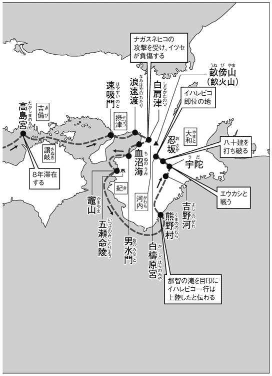
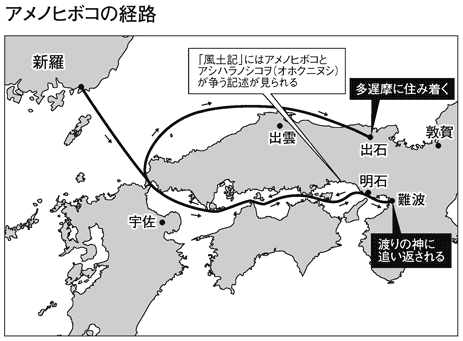

| 日本の「神話」と「古代史」がよくわかる本 | |
| 日本博学倶楽部 | |
| PHP研究所 (2008) | |
日本の「神話」と「古代史」がよくわかる本
島崎 晋 監修／日本博学倶楽部 著
はじめに
日本はいかにして生まれたのか？
この質問の答えを教科書に求めても、邪馬台国の卑弥呼が魏に遣いを送ったかと思えば、大和朝廷が成立し、わが国初の統一政権が誕生する、というように、その大雑把な記述に、どこか得心できなかった覚えがあるのではないだろうか。それもそのはず。現代においても日本という国がどのようにして生まれたのか、ほとんど解明されていないからだ。
そんな日本誕生の秘密を解き明かすカギが、神話の時代と歴史をつなぐ書『古事記』と『日本書紀』である。ともに天地の始まりから日本国家の成り立ちを説き始め、『古事記』は推古天皇までの、『日本書紀』は持統天皇までの歴史を記す。
古代日本人の記憶と想像力が生んだ両書の神話世界では、原初の夫婦神イザナキとイザナミの営みによって日本の国土が生まれ、スサノヲノミコトがヤマタノヲロチを退治し、神武天皇が大和を征服する。海に山に川にと様々な場所に宿る八百万の神々が、人間の営みを助け、ともに日本という国家を創り上げていくのだ。やがて、人間は神々のもとを離れ、歴史の時代を紡いでいく。
こうした日本の創生を担った神々は現代社会においても決して遠い存在ではない。初詣で賑わう伊勢神宮は、天皇家の祖神として登場し重要な役割を担うアマテラスを祀り、祇園祭で有名な京都の八坂神社はスサノヲを祀っている。古代人の想像力が生んだ神話やそこに登場する神々は、現代にも脈々と息づいているのだ。
しかし、『古事記』も『日本書紀』も難解な文章で記されていることから、いざ触れようとしても躊躇してしまう人がほとんどである。そこで、本書は『古事記』と『日本書紀』に記された日本神話のあらすじを、『古事記』を中心に平易な文章と臨場感あふれるタッチで解説を試みたものである。さらに地図を中心とした図版と写真を豊富に用い、読者諸兄がイメージを膨らませやすいように工夫もした。
たしかに『古事記』や『日本書紀』に記された神話や歴史上の記録には、脚色が含まれる可能性が強い。だが昨今、これまで疑いの目をもって見られてきた「記紀」の物語を実証する発見が相次いでいる。『古事記』や『日本書紀』の物語の背景には、教科書が教えてくれない史実が隠されているかもしれないのだ。
本書を片手に、日本が生んだ、世界にも類を見ない、日本神話と古代史の世界を堪能していただければ幸いである。
日本博学倶楽部
目次
『古事記』と『日本書紀』 神話の時代と歴史をつなぐ日本最古の歴史書と正史
「記紀」を生んだ人々 「記紀」に見られる編纂者たちの苦悩と努力
アマテラスの誕生 黄泉国から帰還したイザナキが生み落とした貴い三柱の神々
アマテラスとスサノヲの誓約 スサノヲがアマテラスに提案した邪心なきことを示す神生み
天岩屋 岩屋に隠れた女神を誘い出すべく八百万の神々が案じた一計
五穀の誕生 スサノヲによって殺された女神から誕生した五穀
ヤマタノヲロチ 出雲に降り立った荒ぶる神と八つの頭を持つ大蛇の激闘
●第一章の神々
天照大御神 地上を照らし、日の本におわす神々を統括・支配する太陽神
伊耶那岐命・伊耶那美命 多くの神を生み落とし、日本列島を作り上げた夫婦神
須佐之男命 極めて複雑な性格を持った荒ぶる神
宗像三女神 スサノヲの剣より生まれ、絶海の孤島にて航海の安全を見守る三姉妹
思金神 天岩屋籠りを解決した知恵の神
火之具土神 母を焼きながら生まれ出た火の神
月読命 月の満ち欠けを支配する夜の神
水蛭子 海に流された不完全な神
天手力男神 岩戸を開け放った力の神
高御産巣日神 高天原に出現した三柱の始原神のひとり
稲羽の素兎 大けがを負った稲羽の兎を助けた心優しき神
八十神の迫害 英雄は死せず！ 襲い来る兄弟とオホアナムヂの彷徨
スサノヲの試練 スサノヲの試練を克服させたスセリビメの機転
ヤチホコの恋物語 別名をもって各地で女性遍歴を重ねる葦原中国の王
国造り 国家建設に情熱を燃やすオホクニヌシを助けた二柱の神
国譲りの使者 葦原中国をめぐる高天原の神々とオホクニヌシの暗闘
タケミナカタの抵抗 高天原の武神とオホクニヌシの子が繰り広げる熾烈な力比べ
国譲り オホクニヌシが示した降伏の条件とは？
●第二章の神々
大国主神 スサノヲの試練を潜り抜け、多くの業績を残した偉大なる葦原中国の主
建御雷之男神 イザナキの剣についた血から生まれたとされる雷神
少名古那命 オホクニヌシとともに諸国を巡り、国造りを助けた小さき神
須勢理毘売 スサノヲの試練からオホクニヌシを助けた嫉妬深き正妻
建御名方神 アマテラスが迫る国譲りに対し最後まで抵抗した武勇の神
天之菩卑能命 国譲りのために送り込まれた最初の使者
事代主神 神々の言葉を人間に伝える漁業神
サルタビコの先導 降臨を控える神々の前に立ち塞がった異形神の意図とは？
天孫降臨と三種の神器 天孫降臨に副えられた三種の神器とイツトモノヲ
コノハナノサクヤビメ 神の子孫たる天皇の寿命のわけを語る結婚物語
山幸彦と海幸彦 海神の力を得て兄を屈服させた末弟
ウガヤフキアヘズの誕生 山の神と海の神の力を得た神武天皇の父の誕生
イハレビコの東征 天下を治める地を求めて東へと旅立った日向の御子たち
熊野の荒ぶる神々 失意の東征軍を救った霊剣と高天原より遣わされし聖なるカラス
橿原への道 勇ましい歌謡で表現されるまつろわぬ者征討の戦い
大和平定 ニギハヤヒの帰順によって確定したイハレビコの大和平定
皇后選定 七人の娘たちのなかから見つけ出されたイハレビコの伴侶
●第三章の神々
神倭伊波礼古命 艱難辛苦を乗り越え、大和朝廷を打ち立てた初代天皇
天津日高日子番能邇邇芸命 稲穂の豊穣を意味する名を持つ穀霊神
天宇受売命 道を開く役割を持ち、芸能の神として崇拝される女神
猿田古神 天孫降臨を先導した、長い鼻が特徴の伊勢土着の太陽神
那賀須泥毘古・饒藝速日命 天孫に先んじて天降り、大和を支配していた神とそれを主君として崇めた男
塩椎神 知識を豊富に持つ潮の神
賀茂建速角身命 イハレビコを導くべく降臨した烏の化身
木花之佐久夜売 噴火を鎮める役割を担った女神
豊玉売命 海原と地上の通路を閉じた海の女神
布刀玉命 玉が神格化された宣託の神
天児屋命 天岩屋で祝詞を唱え、祈した神
火遠理命 火が放たれた産屋で生まれた三神の末弟
火照命 弟との争いに敗れ隼人の祖となった兄
欠史八代 イハレビコ崩御ののちに登場する八人の天皇の存在が示すものとは？
三輪山の神の祟り 大和に祟りをなすも、子孫の祀りによって鎮まった三輪山の神
ハツクニシラススメラミコト 反乱を平定し、各地のまつろわぬ人々を平定した将軍たち
トキジクノカクの木の実 不老不死の仙薬を求める天皇により常世国へと派遣された家臣
●第四章の人々
御真木入日子印恵命（崇神天皇） 税制の創設、交通路の拡大など国家統治の体制を整えた王
伊久米伊理古伊佐知命（垂仁天皇） 暗殺計画を夢で知り難を逃れた天皇
神沼河耳命（綏靖天皇） 不思議な異伝が伝わる勇敢なる皇子
多遅摩毛理 但馬国の国守の名を持つ忠臣
建波邇安彦 反乱を起こした孝元天皇の皇子
大彦命 七族の始祖とされる四道将軍のひとり
吉備津彦 吉備を平定した四道将軍のひとり
オホウスの死 天皇の求婚相手を横取りした兄に向けられた弟の殺意
クマソ征討 剛力の御子を勇者へと変貌させたクマソタケル兄弟征討
ヤマトタケルの出雲平定 詐術を用いて決行された出雲勢力の平定
苦難の東国遠征 西国を平定し、帰還したヤマトタケルを待ち受ける無情の勅命
ヤマトタケルの最期 白鳥に身を変え空の彼方へ飛び立った英雄の魂
皇后の新羅遠征 天下を治める御子を宿したオキナガタラシヒメによる新羅遠征
皇后の大和帰還 皇位を狙って反乱を起こしたふたりの異母兄
ミケツオホカミ 神に名を与えられた御子に注がれる寿ぎの酒
●第五章の人々
倭建命 草薙の剣を手に全国を平定するも非業の最期を遂げた英雄
息長帯日売命（神功皇后） クマソ・新羅を征討したとされる伝説の皇后
建内宿禰 天皇を五代にわたって補佐したといわれる伝説の大臣
品陀和気天皇（応神天皇） 多くの渡来人が来日し、日本の社会に技術革新が起こった時代の王
底筒男命・中筒男命・表筒男命 泉の底部・中ほど・表面から生まれた禊の神
弟橘比売命 自らを犠牲にして海の神の怒りを鎮めたヤマトタケルの妃
大帯日子淤斯呂和気天皇（景行天皇） 『古事記』と『日本書紀』で正反対の顔を持つ、ヤマトタケルの父
忍熊王 皇位を狙い、挙兵した仲哀天皇の皇子
帯中日子天皇（仲哀天皇） 神託を無視し薨じた、英雄の子
オホヤマモリとオホサザキ 御子たちの人生を決定づけたホムダワケの質問
オホヤマモリの謀反 反旗を翻した長兄を葬った末子の知略とは？
アメノヒボコの渡来 妻を追い、八つの神宝とともに渡海してきた新羅の王子
イヅシヲトメの婚姻 秋山の神と春山の神の美女を賭けた争い
聖帝オホサザキ 都市を発展させながら善政を敷いた聖帝
嫉妬深き皇后 皇后イハノヒメの嫉妬に苛まれる聖帝
メドリの反逆 悲劇の物語と反乱を招いた天皇の恋愛
瑞兆と枯野 数々の瑞兆に現われた「聖帝」たる所以
スミノエノナカツミコの謀反 天皇を河内より駆逐するも、側近の隼人に殺害された反逆者
盟神探湯 病を克服した天皇によって正された氏姓
●第六章の人々
大雀命（仁徳天皇） 仁政を行なう一方で、皇后の嫉妬に翻弄された天皇
天之日矛命 逃げた妻を追って日本へやってきた新羅国の王子
宇遅能和紀郎子 オホサザキの素質を見抜き皇位を譲った聡明な弟
大山守命 ウヂノワキイラツコを殺して皇位に就こうとした応神天皇の皇子
磐之命 嫉妬深い女性として知られる仁徳天皇の皇后
速総別王・女鳥王 オホサザキの命で殺された悲恋の物語の主人公
男浅津間若子宿禰（允恭天皇） 皇后の必死の懇願で即位した第十九代天皇
キナシノカルノミコの悲恋 禁断の恋に身をやつし、非業の死を遂げた兄妹
アナホ暗殺 事実を知った幼き皇子による復讐の達成
ツブラノオホミの滅亡 親の仇を討ったマヨワをかくまった忠臣の最期
イチノヘノオシハ謀殺 皇位を狙う御子の陰謀か!? 罪なきイチノヘノオシハの最期
二皇子の逃亡 危機を察して館から抜け出し、九死に一生を得たふたりの御子
即位後のオホハツセ 血塗られた皇位争いののち、恋と歌に生きた最後のタケル
大長谷若建命（雄略天皇） 熾烈を極めた皇位継承者争いに勝ち残った、血塗られた大王
穴穂御子（安康天皇） 偽りの報告を信じたがゆえに史上初めて暗殺された天皇
木梨軽太子・軽大郎女 禁忌を犯して愛し合った美男美女の兄妹
目弱王 安康天皇を殺害し、父の仇を討った皇子
飯豊皇女 伝記に残る伝説の女性統治者
市辺忍歯王 狩りの場で殺された皇子
意祁命・袁祁命 隠していた身分を明かし即位した兄弟
暴虐の天皇 人々を苦しめた狂気の大王誕生の背景に隠された政治的理由
継体天皇の即位 皇位継承を受けて北国を発つも、二十年を要した大和入りの謎
磐井の乱 朝鮮遠征の圧迫に耐え続ける北九州の豪族が挑んだ独立戦争
安閑・宣化天皇 二朝は並立したのか？継体亡きあとに見られる矛盾とは？
崇仏論争 蘇我氏台頭によって表面化した崇仏派と廃仏派の宗教戦争
崇峻天皇暗殺 世が震撼した臣下による天皇暗殺事件
聖徳太子の政治 三頭政治によって進められた日本の中央集権化
山背大兄王襲撃 推古天皇の遺言から始まった皇位継承者騒動
乙巳の変 天皇をないがしろにし、専横を極める蘇我氏に下された鉄槌
大化の改新 粛清の嵐が吹き荒れるなかで進められた改革政治
白村江の戦い 激動の東アジア情勢と日本水軍の壊滅を呼んだ拙劣な戦略
壬申の乱 巧みに拠点を抑え政権を握った天智天皇の皇太弟
大津皇子の変 詩才に長けた悲劇の皇子を取り巻く黒い陰謀とは？
律令国家の完成 天武天皇の意思を貫徹させながら守り続けた孫への皇位継承
●第八章の人々
戸豊聡耳皇子（聖徳太子） 一〇人の言葉を聞き分けるなど、数々の伝説を持つ謎多き聖人
継体天皇 出自、即位、死――すべてが謎だらけの大王
推古天皇 容姿・実力ともに優れた、日本で最初の女帝
天武天皇 千数百年続く皇室の権威を築いた偉大な王
蘇我入鹿 古人大兄皇子の即位を企み、山背大兄王一族を滅ぼした大臣
蘇我馬子 物部守屋を滅ぼし、政権の頂点に立った大臣
筑紫君磐井 朝廷に不満を抱き磐井の乱を起こした大豪族
天智天皇 蘇我氏を滅亡させ大化の改新を成し遂げた気鋭の皇子
神話の時代と歴史をつなぐ日本最古の歴史書と正史
◆『古事記』と『日本書紀』はなぜ存在するのか？
神々と日本国土の誕生から、天皇家の成立に至る壮大な日本神話の世界と、天皇家による国土統一の歴史を記す書物が、『古事記』と『日本書紀』である。
奈良時代の初め、七一二（和銅五）年に日本最古の歴史書『古事記』が完成。それから遅れること八年、七二〇（養老四）年には『日本書紀』が編纂を終え、上された。両書は、日本の古代史を研究するうえで、欠かせない貴重な資料でもある。
両書の編纂が始まったのは、七世紀末の天武天皇の時代のこととされる。
まず『古事記』ではその編纂の経緯が序文に記されており、それによると、天皇家の記録である『帝紀』と豪族の伝承である『旧辞』に偽りが多いことを憂えた天武天皇が「実を定めて、後葉に伝えん」と、それらを正しく定めて、稗田阿礼という人物に誦み習わせた。その後、八世紀初頭の元明天皇の時代に、阿礼が覚えた内容を太安万侶が筆録、書物に編纂して、元明天皇に献上したという。
一方の『日本書紀』に序文はなく、天地の始まりから記述を始めている。その編纂開始時期は『古事記』より早い六八一年で、当の『日本書紀』に、天武天皇から下った編纂の勅命が記されている。『古事記』同様、やはり天武天皇が川島皇子ら六人の皇族と、中臣連大嶋ら六人の官人らに命じて、編纂にあたらせたとされる。こちらはその後、約四十年の時を経て完成した。
◆扱いの異なる日本の神話
そんな両書の編纂の目的は、過去に遡って、天皇家による日本支配の正統性を明らかにすることにあった。当時は、大和朝廷が天皇を中心とした中央集権国家の確立を推し進めていた時代であり、頂点に立つ天皇が日本を支配する根拠を示す必要に迫られていたのである。
その意図のもとで編纂された両書は、大筋ではほぼ同じ内容である。ならば同時期になぜ二書も編まれたのかという疑問も生じる。
そのため、先に完成した『古事記』については、後世に作られた偽書であるという説まで飛び出した。あとにできた『日本書紀』に『古事記』のことがひと言も触れられていないのが大きな理由だという。
ただし、二書は性質の異なる面も持っていた。すなわち、『古事記』が天皇家の系譜や伝承を伝え、国土支配の正統性を強調する面を持つ一方、『日本書紀』は、国の歴史を記し、かつ海外にも通用する正史としての性格も帯びていたということだ。
その性格の違いは内容にも見える。『古事記』は、『帝紀』『旧辞』のみを史料とし、神代から推古天皇までを上中下の三巻にまとめているが、神話部分がそのうちの約三分の一を占めている。
また、天皇家は高天原の最高神アマテラスオホミカミの系譜に位置づけられるとともに、天皇家の周辺にある氏族は、アマテラスを取り巻く神々や、古代天皇の皇子などの系譜上に位置づけられ、統括者である天皇に臣従する存在である根拠を示している。いわば、『古事記』は天皇家の私史としての色合いが強い。
一方の『日本書紀』では全三〇巻のうち、神話は神代紀の上下二巻にすぎない。大和に天皇家が成立する以前の神話が多くの分量を占め、物語中に歌謡をふんだんに用いて語られる『古事記』に対して、『日本書紀』はあくまで事実のみを淡々と記す。また、『帝紀』『旧辞』のみならず、中国や朝鮮といった外国の史料を収集し、異伝をも収録する客観的姿勢をうかがわせる。
こうして、大筋では同じ内容ながら、国内向け、国外向けというそれぞれ別の使命を持った歴史書『古事記』と、正史『日本書紀』がともに奈良時代に編纂されたのである。
「記紀」に見られる編纂者たちの苦悩と努力
◆独自の文体で記述される『古事記』
『古事記』と『日本書紀』の両書は、あわせて「記紀」とも呼び称されるが、それぞれの目的に応じて、編纂者、編纂方法ばかりか文体も大きく異なっている。
まず『古事記』は、舎人の稗田阿礼が暗誦した『帝紀』『旧辞』の内容を、太安万侶が筆録して編纂されたものである。稗田阿礼の人物像はほとんど不明で、唯一アメノウズメという女神の後裔猿女氏を出自とするという記録があるのみである。
編纂者の太安万侶は、優れた学者として知られると同時に、雅楽を司る家柄だった。かつては実在さえも疑われ、『古事記』偽書説の根拠とされていたが、一九七九（昭和五十四）年に墓誌が発見され、実在が証明された。
彼はただ編纂にあたるだけでなく、画期的な記述法を生み出している。『古事記』の文体は、漢字の音と日本語の訓とを混ぜた漢文体という特殊な形式を採用しているが、これは独自の文字を持たず、漢文を用いていた日本において、日本語が持つ「響き」を正確に伝えるために安万侶が苦心して生み出した特殊な形態である。
◆多くの官人が携わった『日本書紀』の編纂
一方の『日本書紀』は、天武天皇の皇子、川島皇子や刑部親王ら六人の皇親と、中臣連大嶋ら六人の官人の計一二名が命を受けて、編纂に取り掛かった。その後約四十年を経て、舎人親王が元正天皇に上したとされているが、『古事記』のような序文もなく、編纂に関わった人々ひとりひとりの名は明らかになっていない。
ただ、表記などの統一が巻によって異なる箇所があるため、編纂作業は多くの官人が巻ごとにグループを組んで分業で行なったと考えられている。そのなかには太安万侶もいたといわれる。また、紀清人と同じく首皇子（のちの聖武天皇）に帝王教育を施した山田史御方、楽浪河内、刀利宣令ら渡来人の名も挙がっている。国家的事業だけあって、当代一流の人々の手による作業だったといえよう。
海外にも通用する正史としての性格上、こうした渡来系の人々の技術を活用したと考えられ、『日本書紀』は中国の国史に倣った漢文で書かれている。
さらに当時の権力者藤原不比等も影響力を発揮していた。のちに藤原氏が記した『藤原家伝』の「鎌足伝」と『日本書紀』には内容、文章において類似部分が多く、同じ原史料を参考にした可能性が強い。藤原鎌足の活躍を明記することで、藤原氏の権威を示したのだろう。先の三人の渡来人も藤原氏と関係が深かったようである。
【第一章あらすじ ─日本の誕生─ 】
日本神話を記す『古事記』が最初に語るのは、神々と世界の誕生である。
天地が分かれたばかりの世界──。
原初の神々が天上界高天原と地上世界に次々と現われては姿を消したのち、イザナキとイザナミという男女の神が登場する。天の神から下界の国土創生を命じられたイザナキとイザナミは、地上に作ったオノゴロ島で結婚し、大八島国と呼ばれる日本列島、その後に風の神や木の神など様々な神を生んだ。ところが火の神を生み落としたとき、悲劇が訪れる。イザナミが火傷を負い、世を去ってしまったのだ。
妻を忘れられないイザナキは、黄泉国へと妻の姿を求めた。そこでイザナミを連れ帰ろうとしたイザナキであったが、ウジがたかり、体から雷神を生じさせる妻の醜い姿を見るや、慌てて逃げ出してしまう。
夫の仕打ちに怒ったイザナミは、イザナキを捕まえようとするが、イザナキは間一髪、大きな岩で道を塞いでかつての妻と訣別した。その後筑紫国へ至ったイザナキが不浄の体を洗ったところ、アマテラスオホミカミ（以下、アマテラス）、ツクヨミノミコト、ハヤスサノヲノミコト（以下、スサノヲ）という高貴な三神が生まれた。
だが、このうちのスサノヲは、母のいる根の堅州国に行きたいと泣き叫んでばかり。とうとう追放されたスサノヲは、高天原にいる姉アマテラスのもとを暇乞いに訪れた。ところが、スサノヲの荒々しい動作を見たアマテラスは武装して出迎える。スサノヲは清心であることを示したいと誓約（身の潔白を示す占い）を申し出て、それぞれの持ち物を交換して神生みを行なった。
女神を生んだことでスサノヲは自分の勝ちと驕り、狼藉を繰り返す。弟の非道ぶりにアマテラスは岩屋の中に閉じ籠ってしまった。すると天地が暗闇に覆われ、悪しき神々が騒ぎ出した。困った八百万の神々は天岩屋の前で賑やかに騒ぎ明かした。その賑やかさにつられてアマテラスが少しばかり戸を開くと、その瞬間、神々によってアマテラスは引き出され、天地は光を取り戻したのであった。
かくして、高天原を追放されたスサノヲは、降り立った出雲で、悲しむ夫婦と娘に出くわす。何でもヤマタノヲロチという怪物が毎年、娘をひとりずつさらっていくという。今年は最後の娘、クシナダヒメが狙われていると知ったスサノヲは、妙策を駆使して見事大蛇を切り刻んだのであった。その大蛇の尾からのちに三種の神器のひとつとなる「草薙の大刀」が発見されている。その後、スサノヲはクシナダヒメと出雲国の須賀の地に宮を建てて、穏やかに過ごしたのだった。
現われては姿を消した、混沌の世界に降り立った原初の神々
天と地が分かれたとき、神々が現われた。まず、天の高天原になり出た神は、アメノミナカヌシ、タカミムスヒ、カムムスヒの三柱の神である。この三柱の神々は万物を造った造化三神と呼ばれ、特別視される。ただし、アメノミナカヌシは、日本神話の「始源神」として注目されるものの、以後まったく登場しない。次のタカミムスヒ、カムムスヒは万物を成長させるムスヒ（生成）の神であり、のちに高天原の神々の中でも指導的な役割を果たす神として登場する。
まだ固まらない国土に萌え出したのがウマシアシカビヒコヂ、アメノトコタチの二柱の神である。次にクニノトコタチ、トヨクモノが現われたが、以上の神は皆独り神（男女に分かれる以前の神）で、すぐに姿を隠した。
その次はいずれも男女の神でウヒヂニとスヒヂニ、ツノグヒとイクグヒ、オホトノヂとオホトノベ、オモダルとアヤカシコネ。そして最後に現われた二柱の神が、このあと、日本の国土と万物の神々を生むイザナキとイザナミである。以上、クニノトコタチからイザナキ、イザナミまでの七代を神世七代という。
日本列島を生み出した夫婦神の神聖なる交わり
◆試行錯誤が繰り返される国土の誕生神話
神世七代の最後に現われたイザナキとイザナミは、天の神（アメノミナカヌシ以下五柱の神々にあたる）から国土を固めよとの命を受けた。両神は、天と地をつなぐ天浮橋に立って神聖な矛を指しおろし、「こおろこおろ」と海水をかき混ぜた。すると引き揚げた矛から塩が滴り落ちて、つもり重なってオノゴロ島ができた。
早速、島に降り立った両神は、天御柱（神聖な柱）と八尋殿（神殿）を建立。すると、イザナキが、「お前の体はどのように出来ているのか」と尋ねた。イザナミは「ひとつ出来上がりきらないところ（女陰）があります」と答え、イザナキは、自分には余っているところ（男根）があると応じた。そこで、お互いの体の足りない部分と余っている部分を合わせて国生みをしようと話し合った。結婚の儀式のために天御柱を互いに反対からひと巡りし、出会ったところでイザナミが「あなにやし、えをとこを（何とすてきな男性でしょう）」と称えると、イザナキも「あなにやし、えをとめを（素晴らしい女性だ）」と応じた。
こうして二柱の神は交わったが、生まれたのは不具のヒルコで、その次に生まれたのも形のはっきりしない淡島であった。二神が天の神に相談すると、女神が先に声をかけたのがよくなかったとのこと。
天の神の助言に従って、今度はイザナキから声をかけて交わったところ、次々と立派な島々を生むことができた。まずは淡路之穂之狭別の嶋（淡路島）、ついで伊予之二名の嶋（四国）、さらに隠伎の三子の嶋（隠岐の島）、筑紫の嶋（九州）、伊伎の嶋（壱岐）、津嶋（対馬）、佐度の嶋（佐渡島）が生まれた。そして最後が大倭豊秋津嶋（本州）。こうして大八島（日本列島）が生まれたのである。しかも、島々は、二神から生まれた子供であるかのようにそれぞれ名がつけられていた。たとえば、四国は、顔が四つあり、伊予はエヒメ、讚岐はイヒヨリヒコ、粟はオホゲツヒメ、土佐はタケヨリワケといった具合である。
国生みの島や順番は、『古事記』と『日本書紀』で若干異なっている。だが、『古事記』同様、『日本書紀』に記載された伝承の多くが、淡路島を最初に生んでいる。淡路島は古代、海上交通の要衝であり、国生み神話の原型は、淡路島の海人集団の神話だという。イザナキも淡路島を中心に信奉されていた神なのである。
国生みはその後も続き、吉備児島、小豆島、大島、女島、知訶島、両児島（男島・女島）など六つの島が生まれている。
コラム『日本書紀』に挿入された「一書」とは何か？
『古事記』とともに並び称される『日本書紀』。内容の特徴のひとつは、「本書」と「一書」に分かれていることだ。『古事記』ではひとつの一貫した物語が展開されるのに対し、『日本書紀』では正伝たる「本書」とともに、異伝と考えられる「一書」が併記されている。とくに神話の部分にあたる神代紀において顕著であり、ひとつの神話にも多くの類型が伝えられていたことがわかる。
たとえば、天地開闢の場面にも六つの「一書」がある。最初に現われた神も「本書」ではクニノトコタチだが、「一書」には、アメノトコタチなど別の神の名があがっている。また、スサノヲについても「一書」が多く、三種の神器のひとつ瑞八坂瓊の曲玉を羽明玉という神から受け取ったり、子のイタケルとともに新羅に降り、イタケルが植林を行なったりする記事が見られる。
『日本書紀』がこのように多数の異伝を併記しているのは、それだけ多くの史料を参考にした証である。『帝紀』や『旧辞』、各氏族の伝承などを持ち寄り、それを客観的な視点から編纂したのだ。
ただし、「本書」と「一書」の関係については、いまだ明確な答えが出ていない。
ここまで両方の関係を複雑にしているのは、もともと、本文内に注釈として挿入されていた「一書」を中世、卜部家が今のように別枠扱いとしてしまい、構成そのものを変えたことに原因があるという。
江戸時代の本居宣長は、「本書」は最もふさわしい内容で編纂したものと、その優位性を指摘しているが、多くの学者は「本書」も「一書」も当時の古伝承であり、どちらにも優位性は見られないと指摘してきた。これに対し、近年、「一書」は古伝承をまとめたものではなく、『日本書紀』の下書きであり、それらを比較検討して『日本書紀』を編纂したという説が浮上している。
神生みの末に訪れた悲劇の結末とは？
国生みを終えたイザナキとイザナミは、続いて神々を誕生させる。オホコトオシヲノカミを手始めに、海や川、木や山、さらに自然の風や霧など森羅万象を司る、三五柱もの神を生んだ。二神があらゆるものをこの世に送り出したというわけだ。
ところが、火の神カグツチを生んだとき、イザナミは女陰に大火傷を負ってしまう。イザナミは苦しみ悶えながら神々を生み続けた末に、世を去った。イザナキの悲嘆は尋常ではなく、その涙からも神が生まれている。イザナミを出雲と伯耆の境にある比婆山に葬ったイザナキだが、悲しみは憎しみへと変わり、妻を死に至らしめた我が子カグツチへと向けられた。とうとう十剣を振り上げるや、カグツチの首を斬り落としてしまった。そのとき、飛び散った血や溜まった血からタケミカヅチなど八柱の神が生まれ、さらに八柱の神がカグツチの亡骸から誕生している。
カグツチの誕生は、人間にとってはなくてはならない火の誕生を示している。しかし一方で、火は物を焼き払うという偉大な霊力を持つものだった。それは時として母でさえ、殺傷してしまうほどの威力を持つことを語っているといえよう。
妻を取り戻すべく黄泉国へ向かった嘆きの男神
◆黄泉国で繰り広げられた壮絶な争い
イザナミを忘れられないイザナキは、妻のいる黄泉国へと赴いた。
『古事記』では黄泉国は死者の国とされているが、どこにあるかは書かれていない。「夜見」の意や「闇」の転訛だという説があるが、古代の人は地下にあると考えていたようである。
黄泉国にたどり着いたイザナキは、妻イザナミに「まだ国を作り終えていない。一緒に帰ろう」と誘う。しかし、すでにヨモツヘグヒ（黄泉国の食べ物を口にすること）をしたイザナミは帰ることができない。だがイザナミも夫を忘れがたく、黄泉の神に相談してくると奥に姿を消す。待つ間、私の姿を見ないようにと言い残した。
しかし、イザナキは待つことができなかった。持っていた櫛の大きな歯を一本折り、火を灯すと真っ暗な御殿の中へと足を踏み入れてしまうのだ。そして、御殿の奥へと入りのぞいてみると、そこには、ウジがたかり、頭や胸などには八つの雷の魔物が宿るという変わり果てたイザナミの姿があった。
仰天したイザナキは慌てて逃亡。それを知ったイザナミは、自分に恥をかかせたと激怒し、逃げるイザナキに対する追っ手として、ヨモツシコメたちを差し向ける。これに対しイザナキが、黒御蔓（髪飾り）を投げつけると、それは山葡萄に姿を変えた。ヨモツシコメたちはこれに食らいつき、イザナキはそのすきを見て逃亡する。再びシコメたちが追いすがると、イザナキは櫛を追っ手に投げつけた。するとそれがたけのこに変身し、追っ手がそれらを食べているすきにイザナキは逃げ延びた。
ところが続いてイザナミから生じていた八つの雷神と、一五〇〇もの黄泉国の軍勢が迫ってきた。イザナキは十剣を振り回しながら逃げ続けるが、差はぐんぐん縮まっていく。だが間一髪、イザナキは黄泉国と地上世界を隔てる、黄泉比良坂までたどりつき、そこの桃の実を追っ手に投げつけた。すると、軍勢が蜘蛛の子をちらすように退却していった。
黄泉比良坂は、出雲国のイフヤサカにあたるといわれ、これは現在、島根県の揖屋神社に伝わっている。
またイザナキは、「私を救ってくれたように、葦原中国の人も苦悩から救ってほしい」と、この桃に「オホカムヅミ」の名を与えている。
当時、中国思想の影響で、桃には邪気を祓う呪力があると信じられていた。桃は、多産の象徴や不老不死の実であるともされ、生命力の象徴として、霊力あるものとみなされていたのである。
こうしてイザナキは無事黄泉国を脱したが、これで終わりではなかった。怒りに燃えるイザナミが自ら迫ってきたのだ。イザナキは黄泉比良坂を大きな岩で塞ぎ、なんとか難を逃れた。この岩は比婆山山中に千曳岩として伝わっている。
そこへイザナミが追いすがってきた。
巨大な岩で隔てられた二柱の神は、永遠の別離を交わす。イザナミが「あなたの国の人を一日一〇〇〇人ずつ殺します」と恨みを込めて言えば、イザナキも「一日一五〇〇人の産屋を建てよう」と応じ、日本の国土と神々を生んだ夫婦神は訣別したのであった。
以降、イザナミはヨモツオホカミとして黄泉国に君臨する神となった。
コラム アマテラスら三貴子はイザナミから生まれた!?
『古事記』ではイザナキが黄泉国訪問を終えたのち、アマテラス、ツクヨミ、スサノヲの三貴子誕生へと移る。だが、この過程は『日本書紀』ではまったく異なっている。
『古事記』内でイザナミは、火の神出産の際に死亡し、黄泉国へ去る。その結果、黄泉国の穢れを落とそうとしたイザナキがひとりで三貴子を生み出している。ところが『日本書紀』本書では、イザナミが亡くなるという記事自体がなく、したがってイザナキの黄泉国訪問もない。ふたりが仲良く三貴子を生んでいるのだ。
大八洲国と山川草木を生み終えたイザナキとイザナミは、今度は天下を治める者を生もうと相談して、まずは日の神大日貴を生む。この神がアマテラスである。次にツクヨミ、さらにヒルコを生む。そしてスサノヲを生んだのである。
つまり、ここでは二神が仲良く神生みしているばかりかヒルコを入れて、四貴子を生んだことになっているのだ。
三貴子誕生説話は、大切な場面のはずだが、なぜこうも違うのだろうか。
実は最も原始的な形は、アマテラスに象徴される「日」と、ツクヨミに象徴される「月」の分離を伝える神話だったともいわれている。そこにスサノヲやヒルコが入る伝承となり、その後、イザナミの死が加わり、イザナキひとりによる三貴子化成の話へと発展していったようだ。
なお、『日本書紀』一書では、三貴子を生んだあと、カグツチの出生によりイザナミが身罷っている。
葬られた場所は、『古事記』では比婆山、『日本書紀』では紀伊の熊野の有馬村と記される。これにちなんで三重県熊野市では、花の窟お綱かけ神事という祭りが行なわれている。
出雲と熊野は、死者の国という印象で共通しているのだろうか。
黄泉国から帰還したイザナキが生み落とした貴い三柱の神々
黄泉国から戻ったイザナキは、「汚らわしい国に行ったものだ。身を清めよう」と「筑紫の日向の橘の小門の阿波岐原」へ赴いて、禊の祓を行なう。禊とは、水浴して体についた罪や穢れを清める儀礼のことで、のちには滝行などに発展していった。
さて、イザナキが禊を行なうと、またもたくさんの神々が生じている。脱ぎ捨てた衣服や装飾品から一二神が、垢や水から一一もの神が次々と生まれた。
イザナキが水の中に入ると、ソコツワタツミ、ナカツワタツミ、ウハツワタツミのワタツミ三神、ソコツツノヲ、ナカツツノヲ、ウハツツノヲのツツノヲ三神などの神が生まれたという。ツツノヲ三神はのちに住吉大社に祀られる神々である。
そして最後に両目と鼻を洗うと、左目からアマテラス、右目からツクヨミ、鼻からスサノヲが生まれる。イザナキは貴い三柱の子が生まれたと喜び、首飾りをアマテラスに授けて「お前は高天原を治めなさい」と命じた。続いてツクヨミには夜の国を、スサノヲには海原の国をそれぞれ治めるよう命じたのだった。
スサノヲがアマテラスに提案した邪心なきことを示す神生み
◆なぜ誓約が行なわれたのか？
貴い子ができたと喜んだものの、イザナキはスサノヲには手を焼く。何しろスサノヲは、泣き喚くばかりで、いっこうに海原を治めようとしないのだ。しかも、その号泣により、青々とした山が枯れ山となり、海や川は涙となってかれてしまうほどで、これに呼応して、災いの神が騒ぎ始め、災禍が世界を覆い尽くした。
業を煮やしたイザナキが「なぜそんなに泣き喚くのか」と叱責すると、スサノヲは「母のいる根の堅州国に行きたい」と返答。これにイザナキは怒りを爆発させ、スサノヲをただちに追放した。
父に追放されたスサノヲはアマテラスのいる高天原に暇乞いに出向く。しかし、そこは荒々しいスサノヲのこと。大地を揺るがすような足音を響かせて昇ってきたため、アマテラスは仰天し、弟が国を奪いに来たと考える。アマテラスは髪を勇ましく角髪に束ね、その髪や手に勾玉を通した玉飾りを巻きつけ、背中とわき腹には矢が無数に入る武具をまとい、左首には射撃用の高鳴りの鞆をつけて武装した。そして強弓を振りたてて、「何しに来たのだ」と弟のスサノヲを問いただした。
スサノヲは、姉に暇乞いに来ただけだと弁解するものの、アマテラスは警戒を緩めず、「ならばどうやってそれを証明するのか」とたたみかけた。そこでスサノヲは神意を問う誓約で、真偽を明らかにしようと申し出た。誓約とは、あらかじめ前提条件を示しておいて、出た結果で事の正否を明らかにする卜占のことである。
二神は、お互いの持ち物を交換して、神生みを行ない、スサノヲの真意を明らかにしようとした。
アマテラスはスサノヲの剣を受け取ると、噛み砕いて吹き出した。すると、その息の霧の中からタキリビメ、イチキシマヒメ、タキツヒメの三柱の女神が生まれた。
この三女神は宗像三女神とも呼ばれ、玄界灘で交易に従事する人々に崇められた。世界遺産である厳島神社に祀られるのも、この神々である。
一方のスサノヲはアマテラスの勾玉を貫いていた、長い緒を受け取り、アメノオシホミミ、アメノホヒなど五柱の男神を生む。
アマテラスは、それぞれが生んだ神々を、神を生んだ物の持ち主を親とし、男神はアマテラスの子、女神はスサノヲの子とした。
すると、スサノヲは女神が生まれ、自分の潔白が証明されたと一方的に勝利を宣言した。
だが振り返ってみるとこの誓約、奇妙なのはどちらが生まれたら勝ちというような前提条件が示されていない。いわばスサノヲの勝利宣言はあくまでも一方的なものなのである。
しかも、『日本書紀』では結果が違い、男神出生の場合が正という前提条件が示され、結果、女神の父となったスサノヲが負けている。
ただ、アマテラスの子とされたアメノオシホミミの子がのちに地上に降って天皇家の祖となるニニギである。このため、誓約を行なった目的は、天皇家をアマテラスの系譜に連なるようにすることにあったといわれている。
岩屋に隠れた女神を誘い出すべく八百万の神々が案じた一計
◆誓約ののちにスサノヲの乱行は激化する
誓約ののち、一方的に勝利宣言をしたスサノヲは勝ちに驕った。アマテラスの田の畔を壊し、灌漑の溝を埋め、新穀を召し上がる御殿・大嘗の神殿を糞で汚すなど狼藉のし放題。しかし、アマテラスはそんな弟でも、「糞は酒に酔って吐こうとしてまきちらしたのだろう。田を壊したのも土地がもったいないと思ったためでしょう」とかばう。だが、スサノヲの行状はひどくなる一方だ。果ては、機織の部屋の屋根が壊されたかと思うと、皮を逆に剥がされた馬が投げ込まれた。これに驚いた機織女のひとりが、はずみで梭（機織の部品の一つ）で陰部をついて亡くなってしまう。
神聖な馬や機織女が殺害されるに至り、ついにアマテラスは、弟への抗議と恐怖を訴えるかのように、天岩屋に駆け込み、籠ってしまった。この直後、世界は一変した。日神であるアマテラスが隠れたため、世界がたちまち暗闇に覆われてしまったのである。しかも暗闇の世界にはスサノヲが泣き喚いたときと同様、再び邪神が騒ぎ出し、禍が充満する。
八百万の神々は天安河原に集い、知者オモヒカネを中心として思案に暮れ、何とかアマテラスを連れ出そうと知恵を絞った。そこである秘策を編み出した。
まずイシコリドメと鍛冶師のアマツマラが鏡を作り、タマノオヤが勾玉で飾った玉飾りを作った。さらにアメノコヤネとフトダマが鹿の骨と朱桜で占いをしたのち、賢木を引き抜いて、そこに玉飾りと鏡をつけた。そうして岩屋の前に集った神々は、常世長鳴鳥を集めて鳴かせ、フトダマが鏡と玉飾りのついた賢木を持ち、アメノコヤネが祝詞を唱えた。
さらにアメノウズメが天岩屋の前で伏せた桶の上に乗り、足を踏み鳴らして踊りだした。乳房や腰をあらわにした姿に、神々は高天原が揺れるほど大笑い。アマテラスは暗闇のはずなのに賑やかな外の様子が気になって、そろりそろりと細めに岩屋の戸を開けた。聞けば、自分より貴い神が来たので喜びで笑っているというではないか。そこへフトダマが差し出した鏡には、神々しい神の姿が見えた。それを自分だと気づかないアマテラスは思わず身を乗り出す。その瞬間、外で待ち構えていた怪力の神タヂカラオがぐいっとアマテラスを引っ張り出した。それと同時にフトダマが岩屋の入口に注連縄を張り、二度と入れないようにした。こうしてアマテラスは岩屋を出、世界は再び溢れんばかりの光に包まれたのである。
スサノヲによって殺された女神から誕生した五穀
アマテラスの復活に成功した八百万の神々だが、許しがたいのは元凶のスサノヲである。スサノヲが作った畔を破壊し、溝を埋めるといった農耕を妨害する行為は、神道でも最大のタブーとされ、これらの罪を犯した者は、穢れを受ける。そこで神々は協議のうえ、スサノヲに多くの贖罪品を科し、髭や爪を切り、高天原より追い払った。これはどちらも罪や穢れを取り除くための祓いの儀式である。
高天原を降ったスサノヲは、その道すがらオホゲツヒメに食物を求めた。オホゲツヒメは自分の鼻や口、尻などから食物を出してご馳走を差し出す。ところがそれを見たスサノヲは、「穢れた食物を出したな」と激怒し、オホゲツヒメを殺してしまう。すると、その亡骸から五穀が生まれた。頭から蚕が、ふたつの目から稲の種が、ふたつの耳から粟が、鼻から小豆が、陰部から麦が、尻から大豆がそれぞれ化成したのである。
食物の神が殺され化成するというのは、まさに春の種まきと秋の刈り入れを象徴したもの。この穀物を母神であるカムムスヒが五穀の種として世界に広めたという。
出雲に降り立った荒ぶる神と八つの頭を持つ大蛇の激闘
◆英雄神へと変貌した荒ぶる神
高天原を追われたスサノヲは、地上へ降りると一転して英雄譚を残している。
出雲国の肥の河の鳥髪に降り立ったスサノヲが川を上ると、娘を真ん中に泣く老夫婦と出くわした。夫は山の神オホヤマツミの子アシナヅチ、それと妻のテナヅチ、娘のクシナダヒメだという。聞けば、毎年娘をさらう高志の大蛇ヤマタノヲロチが、夫婦の最後の娘、クシナダヒメを狙っているとか。その大蛇は、目が赤く、八つの尾と頭を持ち、八つの峰や谷を渡る長さで、しかも腹が血でただれた恐ろしい怪物だという。スサノヲは素性を打ち明け、ヲロチを退治するための準備をアシナヅチに命じた。アシナヅチは八つの門と桟敷を設け、それぞれに強い酒の入った酒樽を置く。やがて地響きとともに現われた大蛇は、八つの頭を酒樽に突っ込むや一気に酒を飲み干し、酔いつぶれた。そのすきにスサノヲがヲロチをずたずたに切り刻むと、溢れ出した血が肥の河に流れ出し、河は真っ赤に染まったという。
ヲロチの尾からは素晴らしい太刀（『日本書紀』では天叢雲剣）が発見され、スサノヲはアマテラスに献上した。
江戸時代の国学者、本居宣長は、スサノヲの英雄への変貌について、黄泉国の穢れが天岩屋のあとに行なわれた祓いによって消え、善神への変貌を遂げたとしている。また、高天原と出雲のスサノヲは別人格という説もある。スサノヲはもともと出雲国の土地神で、それが「記紀」神話に取り入れられる際に、地上世界の支配者オホクニヌシの祖先として、高天原と出雲を結ぶ役割を担ったともいえる。
大蛇退治後のスサノヲは、出雲国の須賀の地に宮を建て、クシナダヒメと穏やかに暮らしたという。宮を建てる際、湧き出る雲を見てスサノヲが詠んだのが、「八雲立つ 出雲八重垣 妻ごみに 八重垣作る その八重垣を」の歌である。
天照大御神
地上を照らし、日の本におわす神々を統括・支配する太陽神
高天原の主神で、日本の総氏神とされる太陽の女神である。黄泉国から戻ったイザナキが禊で左目を洗ったところ化生した三貴子のうちで、高天原を治めるよう申しつけられたのがこのアマテラスオホミカミである。神道において、日本列島はすべてアマテラスの支配のもとにあり、地域ごとの氏神はアマテラスからその地の統治を任されているとされている。
『日本書紀』には、アマテラスが自ら神田を営み、新嘗の祭りを行なったとあるが、この行為には巫女的性格が見られる。本来、日の神とその巫女という別の存在が、いつしか同一となり太陽の女神になったという説もある。
スサノヲの所業に怒ったアマテラスが、天岩屋に隠れる物語は、日本神話の中心をなす部分であろう。アマテラスは、スサノヲの度重なる乱暴にも愛情をもって接したが、神の衣を織る場に馬の死体を放り込まれ、機織女が命を落とすに至って、とうとう怒りをあらわにし身を隠す。これは、秩序を乱す「穢れ」によって国が闇に包まれることの象徴であり、神々が祭りを行なってアマテラスを復活させ、これによって世界に光が戻るのは、この神の性格を端的に表わしているといえよう。
アマテラスには、大日貴神、天照坐大神などの別名もあり、三重県伊勢市の皇大神宮（伊勢神宮内宮）ほか各地の皇大神社や神明社で祀られている。
アマテラスは皇室の祖とされたため、代々の皇女の倭姫が伊勢神宮で斎宮をつとめてきた。
もともと古くから大和朝廷が信仰してきた太陽に関する祭りは、大和朝廷の発祥時には三輪山の頂上で行なわれていたが、六世紀頃になってアマテラス信仰が始まると、祭りの場所も変遷した。
『日本書紀』には、アマテラスの祭りが始まったのは第十代崇神天皇のときで、大和の笠縫邑がその場だったとある。笠縫邑は「元伊勢」と呼ばれ、現代でも太陽神を祀る檜原神社がある。
やがて大和から伊勢に遷宮となり、伊勢神宮が造られたのは第十一代垂仁天皇のときと伝えられている。
だが、実際に本格的な神社が造営されたのは、七世紀後半の天武天皇の時代になってからであろう。天武天皇は中国の風水思想にのっとり、幸運をもたらす東の方角に祭りの場を置いたのである。
伊耶那岐命・伊耶那美命
多くの神を生み落とし、日本列島を作り上げた夫婦神
まだ不完全だった世界を、現在に近いものに形作ったとされるのがイザナキノミコトとイザナミノミコトの夫婦神である。
天地初発以来、五柱の別天つ神のあと、いわゆる「神世七代」と呼ばれる神々が生まれたが、その最後に生まれたのがイザナキとイザナミである。彼らは天つ神の命を受けて高天原から降り立つと、夫婦の交わりをして三五柱にも及ぶ多くの神を生み出し、山川草木などすべての自然や家屋を作り上げたという。
二神の名前については諸説あるが、誘う男と誘う女を表わすとされている。「イザ」は「誘う」、「ナ」は助詞の「の」で、「キ」は「男性」で「ミ」が「女性」と、イザナキとイザナミが、国生みの際にお互いに誘い合ったことによる命名だというのである。国生みの際、二神はお互いに名を呼び合っているが、古代社会において名を呼ぶことはすなわち求愛であった。
日本神話の中で重要な役割を担い、ほかに比肩しえないほど多くの行動をなしている二神であるが、神としての性格は明確ではない。
たとえば、最初に女神であるイザナミのほうから声をかけてできた「ヒルコ」は葦舟で海に流されたが、このような風習は台湾の高砂族ほかいくつかの地方で見られるという。
また、亡き妻を取り戻しに死者の国へと降りてゆくものの、約束を破ってその姿を見てしまい地上に追い返されるのはギリシア神話のオルフェウスと同様であるし、死者の国の食物を口にした者はもう元の世界に戻れないというのは、やはりギリシア神話のデメテルのエピソードにも見られる。
このように、イザナキ、イザナミの神話は、世界に共通する普遍的な要素が多いため、はっきりした性格を持たない。しかし、だからこそ、様々な要素を受け入れやすかった。国を生み、黄泉国から逃れて生死の境を区切り、アマテラスらを生んで皇祖とするといった様々な仕事を成し遂げることができたのも、そのためであろう。
日本人の祖といえるイザナキ、イザナミの二神を祀っているのは、三重県の伊勢神宮別宮や兵庫県の伊弉諾神社などである。
アマテラスら三貴子に、高天原、夜食国、海原を治めるよう命じたイザナキは、淡海（または淡路）の多賀に隠棲すると、すべての仕事を終えてそこから天に昇っていったとされている。
須佐之男命
極めて複雑な性格を持った荒ぶる神
神々の中で最も人間味にあふれ、駄々っ子のような言動でかえって人気を集めているのが、スサノヲである。
『日本書紀』では、イザナキとイザナミの子として、『古事記』ではイザナキが禊を行なった際に生まれた神なのだが、海原を治めるよう命じられたにもかかわらず、亡き母を慕って根の堅州国に行きたいと泣き、イザナキには勘当され、さらには高天原で乱暴を働いて、とうとう姉のアマテラスによって追放される。
「記紀」に登場するほかの神々の言動は概して端正であり、その性格にも破綻はないが、スサノヲに限っては感情に走りがちで、その行動は奔放で多彩、どこで何をしでかすか分からない感がある。「泣きいさち荒ぶる神」と表現されるが、「スサノヲ」という名は、「荒々しい」という意味の「すさび」が語源ともいわれている。
ただし、スサノヲは乱暴なだけではない。イザナキやアマテラスよって叱られたことは、身にしみているのである。それで捨てばちになったかのごとく、ますます狼藉を働いたのだが、ヤマタノヲロチに苦しめられている人々を見過ごしておけず、知恵を絞って戦いを挑む。そして、ヤマタノヲロチを退治して以降は英雄となり、根の堅州国の支配者にふさわしい存在に成長する。
このスサノヲは、出雲の西部の須佐という地の首長か、あるいはその地の荒々しい山神が変化した神だという説がある。須佐一帯は、なかなか大和朝廷に従おうとしなかったため、それがアマテラスを困らせるというスサノヲの性格となったのではないかと考えられる。また、スサノヲの逸話には、東南アジアからポリネシアにかけての神話や、モンゴルからウラル・アルタイ山脈にかけての神話とよく似たものがある。それが何らかの形で日本に伝わり、スサノヲの物語に取り入れられたのではないかという説もある。
「風土記」からのアプローチでは、『出雲国風土記』と「記紀」神話のスサノヲとの間に関連性は見られず、むしろその御子神たちに「記紀」のスサノヲ的性格の断片が見られる。ここから御子神の性格が結合された形で中央に取り入れられたという見方もある。
スサノヲは、古くから厄除けや農業の神として信仰されてきた。神仏習合に伴って疫病の神牛頭天王と結びつき、都市に蔓延しては人々を恐怖させた疫病をはらってくれる神として信仰を集めるようになる。京都府の八坂神社をはじめ、全国の氷川神社、八雲社、天王社、祇園社で祀られている。
宗像三女神
スサノヲの剣より生まれ、絶海の孤島にて航海の安全を見守る三姉妹
アマテラスとスサノヲの誓約によって生まれた三柱の女神で、宗像大社や厳島神社に祀られる。福岡県の宗像大社では『日本書紀』に従い、九州の陸地にある辺津宮にイチキシマヒメ、陸に近い大島の中津宮にタキツヒメ、そして沖津宮にタキリビメを祀っている。やがて宗像三女神は各地に広がり、瀬戸内海では厳島神社が創建された。
とくに宗像大社の沖津宮に注目したい。玄界灘の沖合いに浮かび、九州と朝鮮半島のほぼ中間に位置するとともに大陸との中継点にあたるこの島にて、宗像三女神を航海の守護神として信仰し始めたのは、海洋交易を行なっていた人々であると考えられる。
沖ノ島は陸から遠い孤島でありながら女人禁制の神域で、上陸する者は海水で禊をし、また島から何かを持ち出すことは禁じられていた。四世紀から九世紀にかけての祭祀の跡と一二万点にも及ぶ神宝が発見されており、朝廷もこの島で行なわれる祭祀を重んじていたことがうかがえる。
【第二章あらすじ ─オホクニヌシ神話─ 】
スサノヲから数えて六代目の子孫にオホアナムヂが登場する。オホアナムヂには多くの兄弟（八十神）がおり、彼らはみな、稲羽国のヤガミヒメを妻に迎えたいと望んでいた。ある日、兄弟たちはヒメのもとへ求婚に出かける。荷物持ちをさせられたオホアナムヂは、その途中、泣いている兎と出会う。聞けば先に行った自分の兄たちがだましたため傷口が広がったというではないか。オホアナムヂは親切に治療法を教えてやった。
たちまち回復した兎は、あなたこそが求婚に成功すると予言する。果たして、その予言通り、オホアナムヂがヤガミヒメの愛を得る。だが、これに激しく嫉妬したのは兄たちだ。兄たちはオホアナムヂ殺害を計画した。
二度にわたって死の淵に立つも、母の尽力により蘇生したオホアナムヂは、スサノヲが支配する根の堅州国へと逃げ込んだ。そこでスサノヲの娘スセリビメと互いにひと目惚れしたオホアナムヂであったが、スサノヲは簡単には許さない。オホアナムヂに数々の試練を与えたのである。蛇がいる部屋、ムカデがいる部屋に寝かされたが、ネズミのおかげで難を逃れた。
そしてスサノヲが寝ているすきに、スセリビメと手に手をとって根の堅州国を逃げ出してしまった。あとを追ったスサノヲは、オホアナムヂに葦原中国（地上世界）の王となるよう命じるのだった。
やがて地上に戻ったオホアナムヂは、兄たちを追い払い、地上の支配者オホクニヌシとなる。そして小さな神のスクナビコナや、のちには三輪山の神の手助けを得ながら国造りを進めていった。
そんな葦原中国の繁栄を高天原から目にしていたアマテラスは、この国はわが子アメノオシホミミが統治するべきだと主張。オホクニヌシに国を譲るよう迫る。ところが国譲りの交渉に遣わした使者たちは、ことごとくオホクニヌシに懐柔されて帰ってこない。そこでアマテラスらは、武神タケミカヅチを遣わして実力行使に出る。タケミカヅチが国譲りを迫ると、オホクニヌシは息子たちに任せていると答えた。
彼の息子のひとりタケミナカタは国譲りに反対し、タケミカヅチに力比べを挑むが、タケミカヅチの圧倒的な力の前に敗れ去り、諏訪にて降参する。ここに至り、オホクニヌシは出雲の地に立派な宮殿を建てることを引き換えとして、国譲りに応じたのである。
大けがを負った稲羽の兎を助けた心優しき神
◆素兎がオホアナムヂの繁栄を予言する
スサノヲの六代目の子孫がオホアナムヂである。オホアナムヂには八十神と呼ばれる大勢の兄弟がいた。彼らは全員、稲羽国のヤガミヒメとの結婚を望み、ある日、連れ立って求婚へと出かけていった。このとき、荷物を持たされたオホアナムヂは次第に一行から遅れてしまう。
その途中、気多の前に至ったオホアナムヂは、泣き伏している兎と出会う。見れば皮を剥がされたうえに、傷口がひびわれて痛々しい様子。兎に理由を尋ねると、「実は淤岐の島（隠岐島）にいたのですが、こちらに渡りたいと思い......」とケガの理由を話し始めた。
海を渡る方法を考え続けた兎は、一計を案じる。ワニ（「鰐」と書きサメのことといわれる）と兎一族ではどちらの数が多いか、数えるから気多の前まで一列に並んでほしいとワニに持ちかけたのである。もとより数える気などない兎であったが、数えるふりをしながら、並んだワニの上を踏んで海を渡っていった。だが、気多の前を目前に控えた瞬間、つい本心を暴露してしまう。そのため端のワニに捕まり、皮を剥がされたのだと涙ながらに語った。
さらに先ほど通りかかった八十神たちに助けを求めたところ、海風に当たればいいと嘘の治療法を教えられ、その通りにすると潮風の影響で傷が悪化したのだという。
気の毒に思ったオホアナムヂは治療法を教えてやった。教えられたように兎が傷口を真水で洗い、ガマの花にくるまると体がすぐに元通りになる。喜んだ兎は「ヒメはあなたを選ぶでしょう」と予言するのだった。
これが有名な稲羽の素兎の神話だが、その史跡が鳥取県鳥取市に残されている。兎が海を渡ったと伝わる白兎海岸の近くには兎を祀った白兎神社がある。またその境内には兎が体を洗った池も残されている。
英雄は死せず！ 襲い来る兄弟とオホアナムヂの彷徨
オホアナムヂにヤガミヒメを奪われた八十神の怒りは尋常ではない。彼らはオホアナムヂを殺そうと企んだ。そんなことは露知らず、オホアナムヂは兄たちに誘われるままに伯伎国の手間の山での赤猪狩りへと出かけ、兄たちが赤猪と偽って転げ落とした、焼けた大岩に潰されて、焼け死んでしまう。
オホアナムヂの母は嘆き悲しみ、カムムスヒにすがった。カムムスヒは、赤貝の女神キサガヒヒメと蛤の女神ウムギヒメを遣わし、オホアナムヂを蘇生させた。
だが、八十神たちは執拗にオホアナムヂを狙い続ける。そして今度はオホアナムヂを木の割れ目に挟んで殺してしまったのだ。すると再び母がオホアナムヂを助け出し、木の国（紀伊国）のオホヤビコのもとへと逃がした。ところがすぐに八十神が追いかけてきてオホアナムヂを射殺そうとする。そこでオホヤビコは、オホアナムヂを木の虚（ほらあな）からスサノヲが治める根の堅州国へと逃がしたのだった。
この戦いの神話に登場するオホアナムヂの死と再生は、子供から大人になる成年儀礼の象徴といわれる。
スサノヲの試練を克服させたスセリビメの機転
◆スサノヲは娘婿に過酷な試練を与える
八十神の迫害を逃れるためにオホアナムヂが向かったのは根の堅州国だ。この国は、地底の国であるとも、海の彼方にある国であるともいわれるが定かではない。
その根の堅州国にたどり着いたオホアナムヂはすぐに恋に落ちる。相手はスサノヲの娘スセリビメで、ふたりは目を合わせただけで心を通わせたという。スセリビメがこれを父・スサノヲに報告すると、スサノヲもオホアナムヂを立派な神だと見込んだ。だが、彼がオホアナムヂに与えたのはいくつもの試練であった。
まず寝室に通されたオホアナムヂは、部屋一面にうごめくヘビの群れを目にする。そのとき、そっとスセリビメから渡された領巾を振ってみると、ヘビは鎮まり、彼はゆっくり眠ることができた。するとスサノヲは翌日の寝室にムカデとハチが充満した部屋をあてがう。だがこれもスセリビメの助けを得て同様にやり過ごした。
次にスサノヲは、野原に鏑矢を放ちオホアナムヂに取りに行くよう命じた。そして、オホアナムヂが野原に入ったと見るや、火を放ったのである。オホアナムヂが火に囲まれ逃げ場を失ったとき、今度はふとネズミが現われ、「中はほらほら、外はすぶすぶ」と、足元に穴の存在を示唆。オホアナムヂはこの穴に隠れ、炎をやり過ごした。スサノヲもスセリビメも、もはやオホアナムヂは死んだと思い、野に立ち尽くしていたが、そこへオホアナムヂが生還したのであった。
これを受けてスサノヲは最後の試練を与えた。オホアナムヂを八田間の大室（広い部屋）に呼び入れ、自分の頭のシラミ取りを命じたのである。だが、実際に頭にいたのは、シラミではなくムカデであった。すると、またもやスセリビメの機転がオホアナムヂを救う。オホアナムヂは彼女が渡してくれたムクの実を噛み砕き、赤土を吐き出した。これにまんまとだまされたスサノヲは、シラミを噛み砕いているものと思って気を許し、ついうとうとしてしまう。
これを見たオホアナムヂは、スサノヲの髪の毛を垂木に結いつけたうえ、室屋の戸を大岩で塞いだ。そして、スセリビメの手をとり、スサノヲの弓と太刀をつかむと、根の堅州国を逃げ出したのである。目を覚ましたスサノヲは追いかけようとするが、髪が結ばれていてほどくのに手間取ってしまう。なんとかほどいて追いすがるものの、黄泉比良坂に至った際、「その弓と刀を使って八十神を追い払い、葦原中国の王となれ」と祝福の言葉をかけて、走り去るふたりを見送るのだった。地上に戻ったオホアナムヂは、兄たちを倒し、葦原中国の王オホクニヌシとなった。
別名をもって各地で女性遍歴を重ねる葦原中国の王
スセリビメを妻とし、オホクニヌシとなったオホアナムヂ。ふたりの強い絆の前に、オホクニヌシがかつて娶った稲羽のヤガミヒメも、子供を置いて帰ってしまっている。だがその一方で、オホクニヌシは好色な一面も持っていた。彼はヤチホコという別名で、各地で女性遍歴を重ねているのだ。実際にスサノヲが誓約で生んだ女神のひとりタキリビメなど多くの女性と契り、多数の御子神を儲けている。
なかでも越国（北陸）のヌナカハヒメへの求婚では、長い恋歌をやり取りして翌日の夜に結ばれる様子が、叙情的に描かれている。だがそんな彼の華やかな女性関係は、嫉妬にかられた正妻のスセリビメとの軋轢も生み出した。ヤチホコは嫉妬深い妻に悩まされ、ついに別れの歌を贈る。するとスセリビメから「女性の私にはあなたしか男性はいない。私の美しい手を枕にして休んでください。お酒を召し上がれ」と可愛い歌が贈られてきた。これを聞いてヤチホコは妻への愛情が復活したのか、スセリビメと酒を酌み交わして仲睦まじく鎮まったという。
こうした感情を込めた長い歌のやり取りは『古事記』の特徴のひとつである。
国家建設に情熱を燃やすオホクニヌシを助けた二柱の神
葦原中国を平定したオホクニヌシは国造りを行なう。その過程は大きくふたつに分かれており、まず穀物生産のできる国土造りを手がけたあと、祭祀を定めるのだ。
だが、実際にはどうしたらよいのか分からないオホクニヌシ。彼が出雲の美保の岬で悩んでいると、ガガイモで作った舟に乗った小さな神が近づいてきた。名を尋ねても何も答えない。そこで、物知りのカカシ・クエビコに聞くと、その神はカムムスヒの子だという。今度はカムムスヒに聞くと、小さすぎてこぼれた子のスクナビコナであり、ともに「国を作り堅めよ」と答える。
こうして二神は協力して国造りに励んだ。スクナビコナは穀物神と考えられることから、農耕を中心とした国造りが推測される。だが、やがてスクナビコナが海の彼方の常世国へと旅立ってしまう。
途方に暮れたオホクニヌシであったが、今度はオホモノヌシと名乗る神が現われた。この神は大和の三輪山に自分を祀ることを条件として、助力を申し出ており、前述の農耕面の国造りに対し、祭祀面の国造りを示しているのかもしれない。
コラム 正史で出雲神話が語られない政治的事情とは？
『古事記』においてはかなり重点が置かれ、割かれたページ数も多いオホクニヌシの出雲神話。物語性に富む部分だが、なぜか『日本書紀』においては「一書」でほんの少し触れられるに留まる。
『日本書紀』では、スサノヲはオホアナムヂを生んだのち、すぐに根の（堅州）国へと行ってしまう。その後、稲羽の素兎やスサノヲの試練といったオホアナムヂの活躍譚はなく、「一書」としてわずかに国造りの様子が語られるだけで、アマテラスらによる葦原中国の平定へと移っていくのである。
ただ、この国造りの記述は注目したい。オホアナムヂは、スクナビコナと力を合わせ人民と家畜のために病気治療の方法や、鳥獣や昆虫の災いを防ぐ方法を定めたとして、『古事記』より具体的なものとなっているからだ。「記紀」とほぼ同時代に編纂された最古の地誌である各国の「風土記」においてもこの二神は各国に登場し、行幸を行なったり、温泉を掘ったりするなど、その記述はさらに具体的なものとなっている。現在でも有名な愛の道後温泉や、伊豆の温泉などはオホアナムヂとスクナビコナによって開かれたのだという。
『日本書紀』で出雲神話が省かれたのは、国家の歴史を残すうえで不要と判断されたためと考えられる。というのも出雲神話はそれまでの天上界を舞台にした天つ神から、舞台が地上に移り、国つ神を主人公にした物語である。唐突な観が否めず、この部分がなくても、国家の歴史を語るうえでは何の問題もない。
いわば歴史の縦糸という時系列によって進められている『日本書紀』にとっては不要な部分だったのだ。
一方、歴史の縦糸と横糸を輻輳させながら世界を浮き彫りにしていく『古事記』では必要な箇所だったのである。出雲神話は、国つ神と天つ神の統一を描くものであり、国つ神の王オホクニヌシが偉大であればあるほど、のちに地上平定を果たす天皇の偉業が際立つからである。
葦原中国をめぐる高天原の神々とオホクニヌシの暗闘
◆高天原からの使者をオホクニヌシが懐柔する
オホクニヌシが治める葦原中国は栄えた。
これを高天原から見たアマテラスは、本来葦原中国は我が御子が治めるべき国であるとして、オホクニヌシに国を譲らせたうえで、子のアメノオシホミミを統治者として降臨させようとする。しかし、アメノオシホミミは葦原中国の騒がしさを見て恐れおののき、戻ってきてしまう。そこでアマテラスと神々は、相談して国譲りの折衝役となる神を遣わすことにした。
だが、一筋縄ではいかないオホクニヌシは、次々と使者を懐柔してしまう。
最初の使者アメノホヒは、オホクニヌシにおもねって三年間も復命しなかった。このアメノホヒは出雲大社の祭祀を担う出雲氏の祖先神であり、『日本書紀』では国譲りののちにオホクニヌシの祭祀を担当したと記されている。
次に遣わされたアメノワカヒコは、あろうことか、オホクニヌシの娘シタデルヒメと結ばれてしまう。そして自分が葦原中国の統治者になろうと野心を抱き、八年間も復命しなかった。アマテラスがアメノワカヒコを問いただすために雉のナキメを遣わしたところ、側近のアメノサグメにそそのかされたアメノワカヒコによってナキメは射殺されてしまう。このアメノサグメは天邪鬼の原型で、災いをもたらす巫女的存在といわれる。
この反逆行為はアメノワカヒコの破滅を招く。ナキメを貫いた矢は高天原のカムムスヒのもとに届いた。
カムムスヒが、アメノワカヒコに邪心があれば当たれと矢を投げ返すと、矢はアメノワカヒコの胸を貫き、絶命させたのである。夫の死を悲しむシタデルヒメの慟哭は天界にまで届いたという。
アメノワカヒコの父アマツクニタマはこれを聞いて嘆き悲しみ、出雲に降って喪屋を築いた。
このあと、アメノワカヒコの葬儀へと場面は移る。このとき弔問にやって来たアヂスキタカヒコネは、アメノワカヒコと容姿がよく似ていたことから、誰もがアメノワカヒコが生き返ったと勘違いしてしまう。死者と間違えられるのは、その死者と同じ運命に見舞われることを意味し、たいへん不吉なことであった。そのため、アヂスキタカヒコネは激怒し、アメノワカヒコの喪屋を蹴飛ばした。喪屋は美濃国まで飛んで喪山となったという。
高天原の武神とオホクニヌシの子が繰り広げる熾烈な力比べ
◆オホクニヌシの子が最強の武神に挑む
アメノホヒ、アメノワカヒコと、国譲りの交渉は、立て続けに失敗に終わる。『古事記』のみならず『日本書紀』にも国譲りの記述は見られるが、『日本書紀』では、アメノホヒとアメノワカヒコの間に、アメノホヒの子オホソビノミクマノウシも派遣され、この神もオホクニヌシに懐柔されている。
たび重なる失敗に対し、高天原の神々はついに武力行使に踏み切る。そしてカグツチから生まれ、武力に秀でたタケミカヅチとアメノトリフネの二神を遣わしたのである。
『日本書紀』では、剣の神でやはりカグツチから生まれたフツヌシが登場し、タケミカヅチはあくまでも副将という立場である。また、『日本書紀』には国譲りののち、アマテラスの支配に従わず抵抗を続ける神々をタケミカヅチ、フツヌシの二神が武力を用いて平定する記事が見られ、タケミカヅチは常陸国鹿島神宮の、フツヌシは下総国香取神宮の祭神となっている。
そんなタケミカヅチは、今までの神と異なり、容赦はない。
出雲国の伊耶佐の小浜に打ち寄せる波の上に剣を逆さに立てて、その剣峰の上に平然とあぐらをかき、高圧的に国譲りを迫るのである。
これに対しオホクニヌシは、国譲りの結論は息子たちに託していると答える。オホクニヌシの子のうち、宣託を司る神コトシロヌシはこのとき御大の前に漁に出ていたが、アメノトリフネが遣わされて呼び寄せられてきた。タケミカヅチが改めて問いただすと、コトシロヌシはあっさり降伏。柏手を打ち、船を青柴垣（青葉の柴で囲まれた聖域）に変え、その中に隠れてしまう。
この神話をもとに、島根県松江市の美保神社では毎年、青柴垣神事が行なわれている。
だが、ほかの息子タケミナカタは、国譲りに反対の意思を示すと、タケミカヅチに対し果敢にも腕比べを挑んだ。
だが、しょせん力が違いすぎた。タケミナカタがタケミカヅチの手をつかむと、タケミカヅチの手は氷の柱となり、剣の刃に変体する。さらにタケミカヅチはタケミナカタの手を握りつぶして放り投げてしまった。
タケミナカタは勝負を捨てて逃亡したが、タケミカヅチも追いすがり、タケミナカタはついに諏訪の地で降参した。そして、二度とこの地から動かないことを誓ったという。
タケミナカタは諏訪大社上社の祭神とされ、諏訪湖の御神渡りも、この神が下諏訪社の女神ヤサカトメに会うために湖を渡ることによって起こる現象とされている。
なお、この国譲りとよく似た神話が十一世紀の西アジアで著された『王の書』という本に見える。やはり国譲りを拒んだため、最後に手のにぎり比べで勝負を決めているのだ。この神話との関連性はまだ解明されていないが、どちらも手のにぎり比べという点で決めているのはなかなか興味深いといえる。
こうしてタケミカヅチの前に抵抗を試みる者はいなくなった。
オホクニヌシが示した降伏の条件とは？
出雲に戻ったタケミカヅチは、オホクニヌシにタケミナカタの降伏を告げ、再び国譲りを迫った。ここに至りオホクニヌシも国譲りを決意。ただしその条件としてひとつの提案を行なう。それは天つ神の御子のような立派な宮殿を建ててもらうことであった。そこで出雲の多芸志の小浜に御殿が造営された。これが現在に残る出雲大社の起源であるという。タケミカヅチは高天原へ戻り、葦原中国を無事平定したことを報告。ここにオホクニヌシから高天原の神々への国譲りが成立したのである。
古代出雲は宗教的な権威を持つ特別な地であり、この地を服従させる神話は大和朝廷にとって重要な意味があった。しかも相手が偉大であればあるほど、それを服従させた皇祖神の権威が増す。そうした意図のもとにオホクニヌシ像が描かれたのである。そんな偉大なオホクニヌシの御殿、出雲大社の規模も群を抜いていたようだ。平安時代には、日本一高い建物とされ、当時は、四八メートルの高さがあったといわれる。ただし、『出雲国風土記』に記された出雲独自の伝承では、国譲りの話はなく、国造りを行なったオホクニヌシのために神々が集まって造営したという。
大国主神
スサノヲの試練を潜り抜け、多くの業績を残した偉大なる葦原中国の主
出雲大社の祭神として祀られ、『古事記』ではスサノヲの六世の孫として、『日本書紀』ではスサノヲの子供として登場しているのが、国つ神の代表格オホクニヌシノカミである。国土を平定して国を造り、天孫にその国を譲るという、日本神話の中で重要な役回りを果たし、「稲羽の素兎」など逸話も多い。
オホクニヌシは、オホアナムヂノカミ、アシハラノシコオノカミ、ヤチホコノカミほか多くの別名を持っている。これは、大和朝廷が成立する以前に各地で祀られていた地方ごとの神が、オホクニヌシに集約されたためであろう。
さらに日本神話を読むと、もともとオホアナムヂと呼ばれ、兄弟に軽んじられていた神が、スサノヲに与えられた試練を克服し、オホクニヌシとして国を平定するといったように、業績をあげてはそのたびに名前も変わっていったことが分かる。
オホクニヌシは国造りの神であることから、人々に農耕や病気治療の方法をも授けたとされ、五穀豊穣、産業振興、医療、縁結びなど、あらゆる面で御利益を授ける神である。各地の出雲系神社でオホクニヌシが祀られているが、古代には全国にもっと多くの出雲系神社があったという。
奈良県桜井市の大神神社の祭神オホモノヌシも、オホクニヌシの別名だといわれる。『日本書紀』には次のように記されている。第十代崇神天皇の時代に疫病が流行して人々が苦しんでいたところ、三輪山のオホモノヌシを祀るよう神託が下った。これに従ったところ、疫病は収まった。そのため大神神社は製薬にも御利益があるとされ、製薬業者からも信仰されるようになったという。また、「大国」が「ダイコク」とも読めることから、福の神である大黒天と同一視され、縁結びの神と目されるようにもなった。ここから、毎年旧暦の十月十一日～十七日にかけて全国の神々が出雲大社に集い、縁結びの話し合いをするという信仰も生まれている。
建御雷之男神
イザナキの剣についた血から生まれたとされる雷神
多くの神々を生み出したイザナキ、イザナミだが、火の神を生んだイザナミは、下腹部に大火傷を負って命を落とす。嘆き悲しんだイザナキは、刀身が握りを一〇並べた長さのある十剣で、火の神の首を斬り落とした。このとき、火の神の体や、流れ出た血からも神々が誕生した。そのなかで、剣の鍔についた血が岩に降りかかって誕生したのが、タケミカヅチノヲノカミである。
名の「建」は猛々しいの意で、「御雷」は本来音の借字で厳めしいといった意味であったが、雷を司る神とされ、茨城県の鹿島神宮、奈良県の春日大社などで祀られている。
国譲りの際に、オホクニヌシの子タケミナカタと力比べをし、自らの手を剣の刃に変えて降参させたのもこの神である。
また、神武東征神話では、タケミカヅチが、霊剣フツノミタマを自らの力を代行させるべく下しているが、このような活躍が流布されたのは、中臣氏（のちの藤原氏）の意向があったと思われる。
中臣氏は、タケミカヅチを氏神としており、その力はすなわち中臣氏の勢力の反映とされたのであろう。
だが、雷神信仰は、様々な様相を持っている。雷と降雨はほぼ一緒にやって来るため、雷神は農耕に欠かせない水を支配すると考えられた。
また、陰陽道が盛んになると、雷神はさらに多くの能力を見せるようになった。宮中には、鳴雷を祀る「鳴雷神社」があったという。
鹿島神宮に祀られていることは前述したが、この神社には地震を鎮める要石が伝わる。
かつて地震は地下に潜む巨大鯰が起こすものという迷信があったが、近世になると、タケミカヅチはこの要石と関連づけられ、地震鯰を踏みつける姿で描かれるようになった。
少名古那命
オホクニヌシとともに諸国を巡り、国造りを助けた小さき神
蛾の皮でできた服をまとい、ガガイモの舟に乗って出雲の美保の岬に流れ着いた小さな神様が、スクナビコナノミコトである。
ミソサザイの羽を着ていて、オホクニヌシがこの神を見つけて掌で弄んでいたところ、跳んできてその頬に噛みついたり、親であるカムムスヒあるいはタカミムスヒの指の間からこぼれ落ちたりする、いたずらっ子であるなど、その姿形のユニークさにふさわしい逸話が残されている神である。
ただし、体は小さくてもその働きは大きく、『出雲国風土記』では、オホクニヌシと力を合わせて、五百津で国を造り固めたとされる。その小ささにもかかわらず不思議な能力があるため、スクナビコナは種の力を持つ穀霊であると考えられている。こうした功績からか、国造りの神として、農業技術や労働を司るオホクニヌシと並び称されることが多い。
五穀豊穣や開運招福といった御利益もあるが、医業や温泉、そして酒造りの神としても広く信仰されている。
『伊予国風土記』逸文では、スクナビコナが病に伏すと、オホクニヌシが大分の速見湯を下樋から持ってきてスクナビコナに湯浴みをさせ、その病を治したとされている。これが愛県の道後温泉の源であるといい、このことから医業や温泉の神とされるようになったと考えられる。また、スクナビコナを祀る神社は、奈良県桜井市の大神神社ほか各地にあるが、酒造りの神ともされているのは、まるで酒造りに重要な微生物の働きを古代の人々が察知していたかのようである。
国の基礎固めを終えたスクナビコナは、粟の茎の弾力を利用して、はるか遠くにある不老不死の国・常世国に渡っていったと伝えられている。これも、種の持つ生命力の象徴であろうか。
須勢理毘売
スサノヲの試練からオホクニヌシを助けた嫉妬深き正妻
スサノヲの娘で、オホアナムヂ（オホクニヌシ）の正妻。スサノヲに数々の難題を課せられたオホアナムヂを手助けし、ともに根の堅州国を脱出して宇能山の山本に宮を造った。名前のスセリは、「退る」「進む」などと同じ種類の語であり、スセリビメとは足を勢いよく動かして呪術的な動作を行なう巫女を示すと考えられる。
また、スセリビメの母は「記紀」に登場しないため不明であるが、スセリビメは父であるスサノヲの神格を受け継いだ女神か、またはスサノヲに仕えた巫女が神格化されたものとも考えられる。
夫オホアナムヂは、因幡のヤガミヒメとすでに婚約しており、そればかりか北陸のヌナカハヒメと歌を交わして結婚したため、スセリビメは激しく嫉妬する。そのため、オホクニヌシはスセリビメに別れを告げて出雲から大和へ逃げようとするが、スセリビメに歌を贈られると、和解して出雲に居を定めた。
オホクニヌシとヌナカハヒメ、スセリビメの間で交わされた歌は「神語」と呼ばれ、激しい感情をそのまま表現した演劇的な構成になっている。
建御名方神
アマテラスが迫る国譲りに対し最後まで抵抗した武勇の神
オホクニヌシの息子で、国譲りのときにタケミカヅチに最後まで抵抗したと『古事記』に書かれている。だが力及ばず敗れ、信濃の諏訪湖まで逃れてこの地から出ないことを誓って、やっと命を許された。
以来、長野県の諏訪大社で祀られているのだが、『古事記』にある逸話だけなら、まるで出雲から諏訪にやって来た神のように思われる。しかし、諏訪社の伝承によるタケミナカタは、古くから狩猟の神として信仰されてきたとされる。諏訪大社上社の御頭祭で、鹿の頭が神に捧げられるのはその遺風である。
腕力のある神であるためか、やがて軍神としても信仰されるようになり、七八三（延暦二）年には坂上田村麻呂が奥州遠征に向かう途中に諏訪大社に参拝し、戦勝を祈願したという。また、中世の武家社会になると一層広く信仰され、元寇の際には神威を発揮して元軍を退散させたと伝えられている。現在、タケミナカタを祀る諏訪神社は、全国に五〇〇〇余りにのぼっている。本来は農業を守る水源の神、風の神であり、地元の人々が支えた信仰が様々な性格を帯びて広がったのである。
【第三章あらすじ ─天孫降臨─ 】
オホクニヌシからの国譲りが成り、天つ神の御子の降臨が迫ったとき、当初支配者として降臨するはずだったアメノオシホミミが自分の代わりに、生まれたばかりの息子、ヒコホノニニギを降臨させるよう申し出る。これを受けてニニギが諸神を率いて旅立ち、道案内を買って出たサルタビコの先導で高千穂の峰に降り立った。
ニニギは、笠沙の岬で美しいコノハナノサクヤビメと出会い、その父である山の神オホヤマツミに結婚を申し込んだ。するとオホヤマツミは一緒にヒメの姉、イハナガヒメも添えてきた。ところがこの姉は醜く、ニニギは丁重に送り返してしまう。イハナガヒメは永遠の寿命を象徴する存在であり、ニニギのこの行為から、神の子孫である天皇にも寿命が生じたのである。
一方のコノハナノサクヤビメは一夜の交わりで懐妊する。自分の子かとニニギに疑われたヒメは、火に囲まれた産室で出産して天の御子の子だと証明する。そのとき誕生したホデリ、ホスセリ、ホヲリの三兄弟のうち、海の幸を採ったホデリは海幸彦、山の幸を採ったホヲリは山幸彦と呼ばれるようになる。
ある日、兄に仕事道具の交換を持ちかけたホヲリは、兄の釣り針をなくしてしまう。同じものを返せと譲らない兄に困ったホヲリは、潮の神シホツチの助言を得て綿津見宮（海神の宮殿）へと向かった。そこで海神の娘トヨタマビメと結婚して三年......。ついにホヲリは海神にかつての出来事を打ち明けた。
すると海神は手を尽くして釣り針を取り戻し、兄を懲らしめる秘策と珠を授けた。地上に戻ったホヲリは、助言に従って兄を屈服させ、地上の支配権をにぎる。そんなホヲリの前にトヨタマビメが身籠ったと訪れるが、夫婦の終焉はほどなく訪れる。トヨタマビメの出産中、ホヲリが産屋を覗き彼女の正体がワニ（サメ）であることを見てしまったのである。寂しく海に帰ったヒメと入れ替わるように、その妹のタマヨリビメが来た。彼女は姉の生んだ子であるウガヤフキアヘズを世話し、やがてその子と結ばれて四子を生む。その末の子がのちの神武天皇ことカムヤマトイハレビコだ。やがて長じたイハレビコは、長兄イツセとともに天下を治める地を求めて、日向から東へと旅立つ。しかし、白肩津にて土豪ナガスネヒコとの戦いに敗れ、イツセが戦死。さらに一行は熊野で荒ぶる神の妖気に当たって倒れるという苦難にも見舞われるが、神が遣わした刀やヤタガラスに助けられた。宇陀ではエウカシを討伐し、忍坂では土蜘蛛の大軍を一網打尽にした。こうして大和国に至ったイハレビコは、初代天皇として即位するのだった。
降臨を控える神々の前に立ち塞がった異形神の意図とは？
◆葦原中国への道筋に立ち塞がった神が地上へと導く
国譲りを成功させた高天原では、アマテラスの子アメノオシホミミが葦原中国へと降臨する準備が整えられていた。そんなさなか、アメノオシホミミとタカミムスヒの娘との間にアメニキシクニニキシアマツヒコヒコホノニニギノミコトが生まれる。「アメニキシクニニキシ」とは天地が栄える意味であり、「ホノニニギ」は穀物が豊かに実るさまである。そのため、アメノオシホミミは降臨には息子がふさわしいとアマテラスに告げる。
こうして、降臨する神をアマテラスの子から孫へと変えて、一行が天降ろうとすると、高天原から葦原中国までを照らす神が立ち塞がっていた。『日本書紀』には、身長が約一二メートル、鼻の長さが約一メートルもあり、口と尻が輝き、目はらんらんと赤く輝くというその神の異形の様相が記されている。アマテラスは、にらみ合いでは負けないと評判のアメノウズメに確かめに行かせた。するとその神は「自分はサルタビコという国つ神であり、降臨の先導をしたいとまかりこしました」との返事。一行は、このサルタビコの先導で地上へと向かうのである。
サルタビコは貝に挟まれて溺れかける逸話から、伊勢の海人の神だとも言われるが、天孫降臨に後日談がある。当初はにらみ合ったサルタビコとアメノウズメだが、天孫の命でアメノウズメがサルタビコを伊勢まで送る。そしてサルタビコは五十鈴川の上流に鎮座した。これが現在、伊勢神宮の近くにある伊勢猿田彦神社の起源といわれ、道案内の神として崇められている。また、アメノウズメもサルタビコの名を受け継ぎ猿女君の姓を賜った。猿女氏にとって、アメノウズメは祖神であり、サルタビコは姓氏の祖となった神ということになる。こうした根拠から二神は本来、伊勢出身の土豪の兄妹であったとも伝えられる。
天孫降臨に副えられた三種の神器とイツトモノヲ
◆天岩屋で活躍した神々がニニギにつき従う
サルタビコの先導を得たニニギはアメノコヤネ、フトダマ、アメノウズメ、イシコリドメ、タマノオヤの五神を従えて天降ることになった。この神々は天岩屋からアマテラスを引き出す際に活躍した神々と同一である。これはどちらの神話も、大嘗祭を意識したものだったからだという。これら五柱の神々はのちに五つの技術集団の祖となる。すなわち、アメノコヤネは祭祀を担った中臣氏の、フトダマは忌部氏の、アメノウズメは猿女氏の、イシコリドメは鏡作氏の、タマノオヤは玉祖氏の祖となるのである。
一方『日本書紀』では随伴神がほとんど登場しない。これは『古事記』が氏族の系譜を語る物語であることと関係があるようだ。
これら五伴緒とともに、ニニギには王権のシンボルでもある三種の神器が与えられた。三種の神器とは、八尺の勾玉、アマテラスそのものの象徴である鏡、ヤマタノヲロチの尾から出た草薙剣（『日本書紀』では天叢雲剣）である。これらを継承することが王権の連続性を意味することになる。
また、オモヒカネ、タヂカラオ、アメノイハトワケといった神々もこれに加わり、オモヒカネに至っては祭事を司ることを命じられた。これを受けてニニギとオモヒカネは、伊勢の五十鈴宮の内宮を祀り、外宮に食物神トヨウケを祀っている。『古事記』ではこれを伊勢神宮の起源としている。
かくして一行は日向の高千穂の地に降り立つ。ここでニニギは「遠くは朝鮮に面し、近くは笠沙の岬にまっすぐ通じている。朝日、夕日も輝き、最上の土地だ」と賞賛して壮大な宮殿を築く。この「日向の高千穂」については、宮崎県の高千穂や鹿児島県の霧島連峰がその候補地に挙がっているが、はっきりしない。
神の子孫たる天皇の寿命のわけを語る結婚物語
◆ニニギは山の神の娘に出会い、ひと目で恋に落ちる
高千穂に宮を建てたニニギは、ある日、笠沙の岬でコノハナノサクヤビメという美女を見初める。ニニギが求婚すると、父に聞いてほしいという。そこでヒメの父で山の神のオホヤマツミのもとに出向いたところ、オホヤマツミは天孫からの求婚に喜び、ヒメの姉も一緒に嫁がせた。姉妹が同一の人物に嫁ぐ婚姻は、結婚を家と家との結びつきと考えていた当時にあっては、珍しいことではない。
だが、その姉のイハナガヒメが醜女だったため、ニニギはこれを送り返してしまう。するとオホヤマツミは慨嘆した。というのも、ふたりの娘を送ったのには意味があったからである。
オホヤマツミは、「イハナガヒメを送ったのは、天孫の命が岩のように万全にと思ったからです。コノハナノサクヤビメを送ったのは花が栄えるように栄えてほしいと願ったからです。しかし、イハナガヒメを返されたということは......」と嘆息した。
それ以来、ニニギの子孫である天皇に寿命が生まれてしまったのである。天つ神の子孫である天皇の命が永遠でないことを説明するための説話だろう。ただし『日本書紀』では、追い返されたイハナガヒメがニニギを呪ったため、天皇ではなく人に寿命ができたという説も紹介している。
波乱含みの結婚は、その後も平安とはいかなかった。コノハナノサクヤビメが一夜の契りで懐妊したというのだ。
これを知って「それは国つ神の子だろう」と妻をなじるニニギに対し、ヒメは身の潔白を証明するために出産時、入り口を塞いだ産屋に入り、火を放つ。天つ神の子なら火の中でも生まれるはずという言葉通り、三子が誕生した。このためヒメは火を鎮める力を持つ神として信奉され、富士山の噴火を鎮めるべく浅間神社の祭神として祀られるようになった。
海神の力を得て兄を屈服させた末弟
◆兄の怒りを買った弟は海神の後ろ盾を得る
コノハナノサクヤビメが命がけで生んだ三人の子供、ホデリ、ホスセリ、ホヲリ。この三兄弟うち兄ホデリは魚を採って暮らし海幸彦と呼ばれた。また、末弟ホヲリは山の獲物を採って暮らし山幸彦と呼ばれた。だが、ホヲリは兄の仕事が気になって仕方がない。そこで狩りの道具を交換してもらうよう、兄に懇願する。
ようやく兄の承諾をもらい自分の弓矢と兄の釣り針を交換したホヲリは、意気揚々と海へと出かけた。ところが、漁は失敗に終わったばかりか、大事な釣り針までなくしてしまう。彼は代償を払って許しを乞おうとしたが、兄は同じものを返せと譲らず、ホヲリは困り果ててしまう。彼が海辺で途方に暮れていると、そこへ潮の神シホツチが現われた。
シホツチはホヲリに対し、ワタツミの宮へ行き、ワタツミの娘の協力を仰ぐよう助言をした。ホヲリはこれに従って、シホツチが作った小さい籠の舟に乗り、潮流に身を任せた。
やがてたどり着いたのは海の彼方にあるワタツミの宮殿。ホヲリがゆつ香木の木に登って待っていると、そこへ侍女からの報告を受けたワタツミの娘トヨタマビメがやってきた。この瞬間ふたりは恋に落ち、結ばれたのだった。
その後ふたりは幸せな結婚生活を送るものの、三年を過ぎた頃からホヲリはしきりに物思いにふけるようになる。やがて心配したトヨタマビメに促されるようにして、ホヲリは故郷への思いと、兄との確執についてワタツミに語る。するとワタツミは八方手を尽くして、赤鯛の喉の中に刺さっていた釣り針を見つけ出してくれた。さらに、兄に釣り針を返す際、「この針は、おぼ鉤、すす鉤、貧鉤、うる鉤」と呪いの言葉を言うように指示し、反抗してきた兄を、潮の満干を左右する塩盈珠と塩乾珠というふたつの珠を用いて打ち破るよう、ホヲリに助言したのだ。
これらを手土産にワニに乗って地上に帰った彼は、言われた通り、呪いの言葉を唱えて釣り針を兄ホデリに返した。さらにホデリが高い地に田を造れば低い地に、低い地に田を造れば高い地に造った。するといつも弟は豊作だが、兄の田は水回りが悪く不作ばかりで次第に困窮していく。怒った兄はホヲリを攻撃してきた。そこでホヲリが塩盈珠を使うと、たちまち洪水が起こり、兄は溺れてしまう。兄が許しを乞うと、今度は塩乾珠を用いて兄を助けた。ついに兄は降参し、ホヲリに仕えることを誓う。ホデリの子孫は弟の子孫を守ると約束し、彼は隼人の祖となった。
山の神と海の神の力を得た神武天皇の父の誕生
兄を屈服させたホヲリのもとにある日、身重のトヨタマビメが出産のために訪ねてきた。そして、波打ち際に鵜の羽を屋根にした産屋を建て始めた。だが産屋が完成する前に産気づいてしまったヒメは、異郷の者は元の姿になって出産するので中を見ないようにと夫に懇願し、出産に入った。ところが、ホヲリは約束を破り、中をのぞいてしまう。そこでは一匹のワニ（サメ）がのた打ち回っていた。これを恥じたヒメは、「たびたび地上へと揚がってくるつもりだったが、もう二度と会うことはない」と、生んだ御子ウガヤフキアヘズを残して海へと帰っていった。このとき、ヒメが海と陸との境の道を塞いだため、人は地上と海との間を自由に行き来できなくなったという。だが、夫と子供が恋しくてたまらないトヨタマビメは妹のタマヨリビメを送り、ウガヤフキアヘズを養育させたのだった。
その後、成長したウガヤフキアヘズは育ててくれたタマヨリビメを娶り、イツセ、イナヒ、ミケヌ（ミケイリ）、ワカミケヌの四人の子を儲けた。その末子ワカミケヌの別名がカムヤマトイハレビコ。のちの神武天皇である。
天下を治める地を求めて東へと旅立った日向の御子たち
◆東征軍に土豪ナガスネヒコが襲いかかる
日向に降りたニニギの血統に山の神、海の神の血を受けたウガヤフキアヘズが誕生することによって、以降の系譜に連なる天皇家の日本支配の条件は整った。
ウガヤフキアヘズの四人の御子のうち、長男のイツセと末子のカムヤマトイハレビコは、天下を治めるためにふさわしい地を探して、東への遠征を決める。高千穂の宮を発った彼らは海路豊国の宇沙に着き、歓待を受ける。続いて、筑紫国の岡田宮にて一年滞在、阿岐（安芸）国の多里宮に七年間滞在した。さらに吉備国の高島宮に八年滞在し、十六年目にしてようやく河内国白肩津に至った。大和を目指した背景には天孫降臨と大和朝廷を結びつける意味があったと思われる。
ここまではゆったりとした進軍であるが、白肩津に上陸してから様相は一変する。大和の登美に勢力を張る土豪ナガスネヒコが一行に攻撃を加えてきたのだ。イハレビコは楯を使って奮戦するなど、東征軍は応戦するが、イツセが負傷してしまう。イツセは日の御子である自分が、太陽に向かって戦ったのがよくなかったと言い、南へ回ることを提案するが、迂回の途中、紀国にて力尽き息絶えるのだった。
この戦いの模様を伝えるかのように、楯をとって戦った地を楯津、南へと回った海で血のついた手を洗った所を血沼の海、イツセが「賤しい奴にケガを負わされ死ぬことになるとは」と、雄叫びを上げて亡くなった紀伊の水門を男之水門と名づけるなど、ナガスネヒコ（トミビコ）との戦いは地名起源説話を多く伴っている。
ところで、この東征の主人公イハレビコこと神武天皇は、その実在自体が謎とされている。崇神天皇や天武天皇など、ほかの天皇と同一人物という説も根強い。
東征伝説に関してもヤマトタケルの遠征や継体天皇の流浪、また九州にあった邪馬台国東遷の反映とみなされることもある。

コラム 正史のみに記されるイハレビコの兄たちの意外な行く末
イハレビコ（神武天皇）にはイツセ、イナヒ、ミケヌ（ミケイリ）という三人の兄がいたが、『古事記』でともに東征に出るのは長兄イツセのみで、イナヒ、ミケヌの姿は見受けられない。だが、『日本書紀』では、四人全員で東征に向かっている。
その最期についても長男イツセが途中で戦死する様子が「記紀」共通して明確にされるが、『古事記』ではほかのふたりに関する記述はない。
『日本書紀』が記すふたりの兄の最期について、まず次兄イナヒは、熊野から海を渡るときに嵐に遭った際、それを嘆いて海に入り、サビモチの神になったとする。三兄のミケヌもこれを恨んで常世国へと去っていったと記されている。
こうしてイハレビコは兄弟でひとり取り残されたのであるが、これは一説によると、兄弟争いが繰り広げられたのではないかと指摘されている。
これに勝利したのがイハレビコだったというわけだ。
だが三男ミケヌには興味深い伝承がある。宮崎県の高千穂神社の社伝によると、ミケヌが高千穂の地に戻り、現地を荒らしていた鬼八という鬼を退治したというのだ。
それによれば、ミケヌは東征の途中で高千穂に引き返した。ところが故郷は、洞窟に住む鬼八に支配されていた。ミケヌは、この鬼を見事退治すると、その体をバラバラにして高千穂神社の近くに埋めた。ところがほどなく鬼八が祟り、霜を降らせて農民を困らせる。そこで人々は神楽を舞って鬼八を鎮めた。それが高千穂夜神楽の原型だという。
高千穂には、鬼八を祀る鬼八塚や、鬼八が投げたという鬼の力石などが伝わっている。日本神話とは異なる地方独自の伝説として興味深い。
この神話通り、ミケヌは生きて帰ったのだろうか。兄弟争いから身を引いて、弟にすべてを託して故郷に戻ったのかもしれない。
失意の東征軍を救った霊剣と高天原より遣わされし聖なるカラス
◆熊野にて邪気に当たり意識を失う東征軍
兄イツセを失ったイハレビコの軍は、失意の中、太陽を背にする熊野に上陸する。熊野村に入ったところ、大きな熊が目の前を通ったかと思うと、イハレビコばかりか兵士たち全員が気を失い倒れ伏してしまった。熊野の荒ぶる神々の邪気に当たったためである。戦闘不能に陥った一行だが、そこへ、熊野のタカクラジが一振りの刀を持って現われた。するとイハレビコは「長々と寝ていたものだ」と正気を取り戻す。そしてタカクラジの霊剣で邪気をはらうと、兵士たちも元気を取り戻した。
さて、気になるのは剣を入手したいきさつである。タカクラジは意外な夢のお告げの話を語った。夢の中でアマテラスとタカミムスヒが葦原中国の乱れを心配してタケミカヅチに手助けに行くように命じたのだという。するとタケミカヅチは自分の代わりに、かつて国を平定した際に用いたフツノミタマという太刀をタカクラジの倉に降らせようと進言したのだという。翌朝タカクラジが倉の中を見ると、夢の通り太刀が置かれていたため、それを献上しにやって来たという。
熊野におけるこうした苦闘の神話は、古代の天皇が一代ごとに都を遷し、新都で大嘗祭を行なう慣わしと関わりがある。新都建設の地を探すことを国求ぎというが、よりよい地に着くには荒涼の地を経るのが慣いだったのである。当時、異郷と見られていた熊野はまさに荒涼の地にふさわしい場所だったといえよう。
さて、こうまでして熊野に立ち寄った一行だが、熊野山中にはまだまだ荒々しい神が多かった。そのため、高天原の神々はヤタガラスを遣わし、イハレビコ一行を導いた。やがて一行が吉野川へと至ると、ニヘモツヒコ、イハオシワクノコと、次々に土地の首長が名乗り出てくる。この名乗りの逸話は現地の首長たちが服従したことを示しているという。
勇ましい歌謡で表現されるまつろわぬ者征討の戦い
◆圧殺の罠をくぐり抜ける
熊野を踏破した東征軍は、吉野にたどり着く。だが、まだまだ荒ぶる者たちは多く、討伐して進まなければならなかった。
ここからの行軍は、久米歌と呼ばれる歌謡でいきいきとその戦いの場面を表現しているのが特徴である。久米歌とは、大嘗祭で舞われる久米舞の歌謡であり、伴造、久米部の人が歌う歌のことである。
宇陀の地に待ち構えるのはエウカシとオトウカシという兄弟である。まずイハレビコはヤタガラスに命じて、服従するか否かと問いたださせた。するとエウカシは遣いのヤタガラスを弓で追い返し、戦う姿勢を見せた。
だが、軍勢が思うように集まらなかったため、エウカシは恭順を装う。そして自分の御殿に罠を仕掛けてイハレビコらを待ち構えた。
ところが弟のオトウカシは帰順を決めており、イハレビコらにエウカシの策略を密告する。
すべて発覚しているとは知らないエウカシは、イハレビコらを迎えたものの、ミチオミ、オホクメといったイハレビコの部将たちに「お前の造った御殿にまず入れ」と迫られる。逃げ出そうとしても時すでに遅く、矛や矢に追い立てられた彼は自分の御殿に追い込まれた。そして、たちまちエウカシは自分が仕掛けていた押し機に押しつぶされて命を落としたのである。
兄エウカシを裏切り、イハレビコに帰順したオトウカシは、宇陀の水取の先祖となったという。「水取」とは、宮廷の飲み水や氷室などに携わる職のことである。のちに「主水」と書くようになり、「もんど」と読んだ。
オトウカシがイハレビコの軍に対してご馳走を献上すると、これらは兵士たちに分け与えられた。戦勝祝いが行なわれ、兵士たちは勇ましい歌を残している。
「風土記」では征服された土地の人々が食事を献上する場合が見られ、オトウカシによる献上も同様の意味があるのかもしれない。
こうして宇陀をあとにした一行は、今度は忍坂の大室、大洞窟で八十建と呼ばれる土蜘蛛の勇者たちとあいまみえる。ところが敵が多すぎる。そこで今度はイハレビコ側が罠を仕掛けることにした。土蜘蛛らを饗宴でもてなすと見せかけ、その実、給仕人たちにすべて刀を持たせた。決起する合図は勇ましい久米歌。果たして、一斉に刀を振りかざし、敵を一網打尽にしたのである。
ニギハヤヒの帰順によって確定したイハレビコの大和平定
◆東征最後の戦いは勇ましい歌で表わされる
八十建を壊滅させたあと、イハレビコの兄イツセを殺害した宿敵ナガスネヒコ（トミビコ）を討とうとした戦いの様子や、土蜘蛛のエシキ、オトシキ兄弟などを討ち取った戦いの様子が久米歌で伝えられる。
ナガスネヒコを討とうとした際に歌われた久米歌のひとつが、
みつみつし 久米の子らが 粟生には かみら一本
そ根がもと そ根芽つなぎて 撃ちてし止まむ
である。この最後に登場する「撃ちてし止まむ」の一節は、太平洋戦争下、戦意高揚を促す標語としても用いられている。
まつろわぬ者どもを次々と平定したイハレビコの前に、臣従を望んで馳せ参じる者も現われてきた。そのひとり、ニギハヤヒは天の御子が天降ったと聞いてあとを追ってきたと言い、天つ神の子である証の宝物を献上した。このニギハヤヒはナガスネヒコの妹トミヤビメを娶っており、ふたりの間に生まれたウマシマジは物部氏らの先祖となっている。
ところが『日本書紀』ではこのあたりの記述が異なっている。イハレビコの兄の仇、ナガスネヒコとの戦闘とその末路が詳しく述べられているほか、ニギハヤヒはすでに天孫降臨していた神として登場するのである。それは次のような内容だ。
イハレビコが大和に入ると、ナガスネヒコが再び抵抗してきた。激しい戦闘が繰り広げられたが、金色の鳶がイハレビコの弓の先に止まり、閃光を放った。そのためナガスネヒコらは目が眩み、敗退する。
だがイハレビコはそのナガスネヒコから意外な事実を告げられる。実はこの地にはすでにニギハヤヒという天つ神の御子が降臨しており、ここを支配しているというのだ。ニギハヤヒに仕えるというナガスネヒコが天孫の印である天の羽羽矢などの神宝を見せると、イハレビコも納得せざるを得なかった。そこでイハレビコも、自分も天つ神の御子であることを示すが、ナガスネヒコは抵抗をやめようとしない。そのためナガスネヒコはニギハヤヒによって成敗されてしまうのだ。ほどなくニギハヤヒも部下たちを率いてイハレビコのもとに現われ、帰順を誓った。『日本書紀』ではこうして天下平定がなるのである。
こうして大和周辺の荒ぶる神々を服従させたイハレビコは、大和の畝火の白檮原（橿原）宮において天下を治めることとなった。初代天皇・神武天皇の誕生である。
七人の娘たちのなかから見つけ出されたイハレビコの伴侶
イハレビコには日向にいるときに娶ったアヒラヒメがおり、タギシミミ、キスミミというふたりの御子を儲けていた。だが天下の主となった今では皇后となるにふさわしい女性が必要だった。そこへ、オホクメが耳寄りな話を持ち込む。
それによれば、あるとき三輪山のオホモノヌシが丹塗矢（朱で赤く塗った矢）となり、見初めた女性セヤダタラヒメの女陰を突いた。ヒメがその矢を持ち帰ると、矢はたちまち美男となり、その娘と結ばれた。このふたりの間に生まれたのがヒメタタライスケヨリヒメという女性だった。神話には丹塗矢で女陰を突くというパターンが多い。矢は男根の象徴とされ、オホモノヌシとの結婚は日本各地にも多く伝わる蛇神との神婚説話である。そしてイスケヨリヒメという名前にも「神がよりつく」の意が込められており、巫女的性格を持ち合わせていた。「タタラ」から、製鉄を思わせる名前でもある。
興味を覚えた天皇は、その後、野遊びをする七人の乙女を見て、イスケヨリヒメが誰かを察し、歌で求婚。そして歌を交わしてヒメは皇后に収まったのである。
神倭伊波礼古命
艱難辛苦を乗り越え、大和朝廷を打ち立てた初代天皇
アマテラスの孫であるニニギのさらにまた孫にあたり、名はカムヤマトイハレビコ。神と人をつなぐ初代天皇とされ、「記紀」にはその事績が詳しく記されている。
『日本書紀』によると、高千穂宮にいたイハレビコは、兄弟や子供たちと相談して都を東の国に遷すことにする。水軍を率いてイツセ、イナヒ、ミケヌという三人の兄とともに、日向国美々津から船出し、豊予海峡から九州北岸を経て、さらに瀬戸内を東進する。吉備国の高島宮に三年留まって船や食料を整えたのち、東進して河内国の白肩津にて船を降りた一行は生駒山を越えようとする。ところが、ここで大和の豪族ナガスネヒコのために撃退され、やむなく難波の海（大阪湾）沿いに南下。ナガスネヒコとの戦いで負傷した兄のひとりイツセは、ここで亡くなってしまう。さらに一行はイナヒ、ミケヌを失いながらも紀伊半島沿岸を南へ航行する。
熊野に上陸しても苦難は続くが、神々が遣わしたヤタガラスの導きにより、イハレビコ一行は無事、大和へと入る。この地で再びナガスネヒコと対決しようとすると、金色の鳶が飛んできてイハレビコの弓の先に止まった。ナガスネヒコの兵士たちは目が眩んで戦意を失う。ナガスネヒコは、この地に天降った神の子ニギハヤヒを奉じていたが、そのニギハヤヒによって殺害される。こうして大和を平定したイハレビコは、畝傍山の麓に橿原宮を建て、初代天皇となったという。
ただし、この話は伝説であって史実ではないという見方が有力で、神武天皇の実在性についても疑問視されている。東征の物語は、壬申の乱で吉野から大和に入って即位した天武天皇の行動をもとにしているという説や、応神天皇に始まる河内政権の大和進出をなぞったものだという説、あるいは越前国・近江国を背景にした継体天皇の即位をもとにしたものだという説などがある。
また、イハレビコは『日本書紀』において「磐余彦」とも書くが、「磐余」というのは、現在の奈良県桜井市あたりの地名であり、大和三輪山との関わりが深い。神武一行の行程は、「記紀」でかなり詳しく述べられていることからも、九州からやってきて三輪山周辺に住みついた豪族が、生駒山の豪族と戦って最後には勝利したという事実があったのかもしれない。北九州にあった邪馬台国の一行が、いったん南九州の日向へ進出し、そこから大和に向かったという説もある。
神武天皇の陵は畝傍山麓と比定されている。また、即位の地とされる場所には一八九〇（明治二十三）年に橿原神宮が創建されている。
天津日高日子番能邇邇芸命
稲穂の豊穣を意味する名を持つ穀霊神
アマテラスの孫にあたり、アメノオシホミミとヨロズハタトヨアキツシヒメの間に生まれた神である。『古事記』では、アメニキシクニニキシアマツヒコヒコホノニニギノミコトという長い名が記され、『日本書紀』でも、やはり長いいくつかの別名を持っている。
この名の中心をなすのは、「番能邇邇芸」という部分であり、「番」は稲穂の穂、「邇邇芸」は天地が栄え賑やかであるという「ニギ」を重ねたもので、稲穂が豊かに実っている様子を表わしている。さらに、「天津日高」とは空に日が高く輝く意で、「日子」は天つ神や日の御子である男性への美称で、アマテラスの嫡流の男子であることを表わす。こうした意をいくつも重ね、称える名であるゆえにこのように長くなった。つまり、稲穂が健やかに実り、天地が賑やかであるようにという願いの込もった名なのである。
太陽と稲穂に関係を持つその名から、ニニギは穀霊神とされ、豊穣の神として鹿児島県の霧島神宮や新田神社などで祀られている。
このニニギが、葦原中国を治めるようアマテラスに命じられ、高天原から筑紫の日向の高千穂に降臨したのが天孫降臨神話である。
初めアマテラスは、ニニギの父アメノオシホミミに降臨を命じたが、降臨の直前にニニギが誕生した。すると、アメノオシホミミは「わが子ニニギのほうがふさわしい」と言ったので、改めてニニギに降臨の命が下された。
ニニギは、統治の神勅を奉じ、玉・鏡・剣を携えて随伴の神々とともに降臨した。『日本書紀』の記述では、ニニギが携えていたのは鏡のみで、降臨させたのはアマテラスでもアメノオシホミミでもなく、ニニギを慈しんで養育したタカミムスヒで、神聖な床を覆う衾「真床追衾」でくるんで降臨させたとされている。
天孫降臨については、『日向国風土記』逸文にニニギの穀物神としての性格を表わすかのような伝説が記されている。ニニギが高千穂の二上の峰に天降ろうとした際、天が暗く、昼夜の区別がつかなかった。そこへふたりの土蜘蛛が現われて、稲種を四方に撒き散らせば天は晴れ渡るでしょうと進言する。ニニギがその通りにすると、天は晴れ、輝いたという。
天降ったニニギは、オホヤマツミの娘コノハナノサクヤビメを娶り、ホデリ、ホスセリ、ホヲリの三柱を儲ける。このホヲリの子がイハレビコの父ウガヤフキアヘズであり、ニニギは皇室の祖とされているのである。
天宇受売命
道を開く役割を持ち、芸能の神として崇拝される女神
アメノウズメノミコトは、天岩屋に隠れたアマテラスを外に連れ出すために、伏せた桶を踏みならし、胸乳をあらわにして踊り、天孫降臨一行の前に立ったサルタビコの正体を明かすなど、積極的でよく目立つ行動をする女神である。「宇受」とはかんざしの意味で、アメノウズメは髪飾りをして神祭りをする女性が神格化されたものと思われる。この神の子孫は、宮中の神楽に携わった猿女君といわれ、『古事記』を暗誦したといわれる稗田阿礼もこの一族と伝わる。
冬至の頃、太陽の力を復活させるために行なわれる「鎮魂祭」という祭りがあるが、このとき冬でも緑を保つ常緑樹の葉を髪に挿したり口にくわえた巫女が祭儀を行なう習慣は、アマテラスを岩戸から引き出した伝説に基づくと思われる。
『古事記』には、アメノウズメが、海の魚に天孫に仕えるか問いただした際、返事をしないナマコの口を小刀で開いたという逸話が記されている。閉じた岩戸を開かせ、高天原と地上の間の通路を開き、返事をさせるべく口を開くなどの行為から考えると、アメノウズメは、閉じたものや塞がったものを開き、交通や伝達を可能にする女神と推測できる。
アマテラスは、アメノウズメを「敵対する神に面と向かっても勝つ」「願力がまさっている」と評しており、厚く信頼していると推測できる。アメノウズメもそれに応えて、自ら体をあらわにして事にあたり、難局を切り抜けている。これは、黄泉国のイザナミや海原国からやってきたトヨタマビメが、それぞれ男神に「姿を見るな」という禁忌を課し、それが破られた結果、交流が遮断されたのと相反している。
つまりアメノウズメは、見られること、注目を浴びることによってより一層の力を発揮する神と考えられ、芸能の神として信仰されている。神事においては舞などの芸能が奉納されるのも、神と人間の耳目を集めて交流を円滑にするためであろう。
猿田古神
天孫降臨を先導した、長い鼻が特徴の伊勢土着の太陽神
高天原から天降ろうとしていた天孫一行を、天の八衢で出迎えたのがサルタビコである。だが最初は、猿とも天狗ともいわれる奇怪な風貌をしていたため怪しまれてしまう。天孫一行にいたアメノウズメが乳房をあらわにし、裳の紐を臍の下まで押し下げて何者かと問いただし、道案内に来た国つ神であることが判明した。
『日本書紀』一書には「鼻の長さ七握、背の高さ七尺あまり......」と記され、その風貌からも人気を集めている神である。現代でも、神社の祭礼で天狗のような面をつけて高下駄を履き、鉾を手に神輿を先導する者の姿が見られる。
全国にサルタビコを祀った神社は約二〇〇〇を数え、その総本山が三重県鈴鹿市の椿大神社である。庶民の間でも広く信仰され、天孫降臨の先導神という役割から各地の路傍に立って道行く人の安全を守りつつ邪霊を防ぐ道祖神にもなっている。また近年では、交通安全の守護神とされ、警視庁にも祀られているという。
サルタビコ信仰は、さらに多彩である。天孫一行を高千穂に先導したあと、アメノウズメに送られて故郷の伊勢に帰り、その地でアメノウズメと結婚し、これが伊勢の海人一族である猿女氏の先祖となったという伝説もある。
伊勢に帰って漁をしていたときに、貝に手を挟まれ、海に引き込まれて溺れかけたという逸話もある。『古事記』では、サルタビコを「上は高天原を照らし、下は葦原中国を照らす神」と記し、その目はアマテラスの依り代である「八咫鏡のごとく輝やく」としていることから、伊勢では原始的な男性の太陽神として祀られていたと考えられる。
また、アメノウズメとの結婚から、古代の性器崇拝の流れを引く金精様ともみなされ、信仰されてきた。男女の縁結びや出産、性病治癒などの御利益があるとされる金精神社は、サルタビコが祭神であることが多い。
那賀須泥毘古・饒藝速日命
天孫に先んじて天降り、大和を支配していた神とそれを主君として崇めた男
ニギハヤヒは、一〇種の神宝を授けられ、天磐船に乗って降臨した神である。『日本書紀』ではニニギとは別に天降った天孫とされ、大和地方を統治していた。
大和の豪族ナガスネヒコは、このニギハヤヒを奉じて、自分の妹であるトミヤビメを嫁がせていた。イハレビコ（神武天皇）が東征してくると、ナガスネヒコは「まつろわぬ民」として戦い、イハレビコ一行を一時、大和から撃退する勢いを見せた。イハレビコの長兄イツセは、ナガスネヒコの放った矢で負傷し、のちにそれが悪化して命を落としている。
大和から追い返されたイハレビコ一行は、難波の海を南下して紀伊半島沿岸を回り、再び大和に入る。ナガスネヒコはあくまで抵抗を続け、イハレビコは苦戦する。
ところが、ついにニギハヤヒがイハレビコに恭順の意を示し、ナガスネヒコを殺害した。このニギハヤヒとトミヤビメの間に生まれた子が、朝廷の股肱の臣・物部氏の祖とされている。
【第四章あらすじ ─大和朝廷の始まり─ 】
イハレビコ（神武天皇）の東征によって大和に王権が成立し、天皇の歴史が始まる。だが、それは波乱含みの始まりであった。イハレビコの崩御後、アヒラヒメとの間に儲けていた長男タギシミミが、父の皇后イスケヨリヒメを娶り、皇位を狙ったのである。そこでまずタギシミミは、皇后の実子であるヒコヤヰ、カムヤヰミミ、カムヌナカハミミの三人の異母弟たちを殺そうと企んだ。だが、三人の御子たちは、タギシミミの陰謀を察知したイスケヨリヒメの歌から、自分たちの危機を知る。そこで三人は先手を打ってタギシミミのもとへ忍び込むが、いざというときになって、兄たちは足が震えて何もできない。さればと末子のカムヌナカハミミがタギシミミを誅殺。このカムヌナカハミミがその勇気を称えられ、第二代天皇の座に就いたのである。以後、第九代ワカヤマトネコヒコオホビビ（開化天皇）までは、生没年や系譜だけの記載が続く。
第十代ミマキイリヒコイニエ（崇神天皇）の御世、恐ろしい疫病が流行し、多くの人が亡くなった。すると、ミマキイリヒコの夢にオホモノヌシが現われ、疫病は自分の祟りであり、子孫にあたるオホタタネコに自分を祀らせれば疫病が収まると告げる。そこで天皇はオホタタネコを探し出し、祭祀を行なわせたところ、無事、国に平穏が戻った。その後天皇は、北陸、東国、丹波の地に将軍を派遣して、まつろわぬ人々を平定する。そのうちのひとりオホビコは北陸に向かう途中、少女の予言から天皇の兄タケハニヤスヒコの反乱を知り、鎮圧に貢献している。
ミマキイリヒコがこのオホビコの娘との間に儲けたのが次代の天皇イクメイリビコイサチ（垂仁天皇）で、この天皇は悲恋物語で知られている。
皇后サホビメはある日、兄のサホビコから重大な計画を打ち明けられる。なんと、天皇を討ち取ってふたりでこの国を治めようというのだ。兄に逆らえないヒメは渡された刀を手にするが、やはり天皇を殺めたりはできない。ヒメは天皇に包み隠さずすべてを打ち明けた。すぐにサホビコの館に軍勢が差し向けられたが、身重のサホビメも兄の館に駆け込んでしまう。天皇は愛しい妻の奪還計画を立てるが、うまくいかなかった。ヒメは生まれた子を天皇に託して、兄とともに炎の中に身を投じてしまうのだった。
晩年のイクメイリビコは、不老不死を望み、タヂマモリに香り高い木の実を探させる。しかし、タヂマモリがようやく常世国から木の実を持って帰ってきたとき、すでに天皇は崩御していたのだった。
イハレビコ崩御ののちに登場する八人の天皇の存在が示すものとは？
◆皇位を狙うタギシミミが御子の命を狙う
イハレビコ（神武天皇）は皇后イスケヨリヒメとの間にヒコヤヰ、カムヤヰミミ、カムヌナカハミミの三子を儲けた。やがてイハレビコが身罷ると、アヒラヒメとの間に儲けた庶長子タギシミミが義母であり父イハレビコの皇后だったイスケヨリヒメを娶る。この結婚も、当時としては珍しいことではない。とくにイスケヨリヒメは天皇家が祀る三輪山の神の娘である。彼女を妻にするということは、天皇家の後継者たる地位を手に入れたことの証でもあった。文学博士の中西進氏によると、古代は男性が政治、女性が祭祀を司り、結婚は祭政一致を意味していたという。
こうして一歩皇位に近づいたタギシミミだが、それを磐石なものにするためにも皇后の実子である三人の異母弟たちを亡き者にしようと企んだ。それを知ったイスケヨリヒメは夫と子供たちへの愛情との間で苦悩するが、やはり子供への思いは断ちがたい。嵐がくるという歌に託して三人の御子たちに危険を知らせた。
事情を察した御子たちは、タギシミミの館へ忍び込んだ。ところが、いざ討ち取るという段になって、カムヤヰミミはひるんでしまう。そこで業を煮やした末子のカムヌナカハミミが、タギシミミを討ち取った。そのため、兄たちは遠慮して弟に皇位を譲り、この末子が第二代天皇（綏靖天皇）に即位する。一方、兄たちは茨田氏、意富氏など多くの豪族の祖となった。『古事記』の編者太安万侶の太氏（意富氏）の名が見られるのも興味深い。
この後、第二代から第九代の開化天皇までは事績の記述がほとんどなく、生没年や宮、系譜などが記録されるだけである。それゆえこの間の天皇は「欠史八代」と呼ばれ、系譜を延長するために作られた架空説が有力である。その意図は定かではないが、その天皇たちが系譜上、多くの氏族の祖となっている点に手がかりがありそうだ。
大和に祟りをなすも、子孫の祀りによって鎮まった三輪山の神
◆オホモノヌシの子孫を用いて祟りを鎮める
時代は下り第十代ミマキイリヒコ（崇神天皇）の御世、疫病が流行し、多くの人民が命を失った。憂慮された天皇が神のお告げを聞くために神牀に入ったところ、三輪山のオホモノヌシが夢枕に立つ。
そして、この病の流行は自分の意志だと語り、オホタタネコに自分を祀らせれば、祟りも収まるとの神託を下す。そこで天皇は、八方手を尽くして河内国からオホタタネコを探し出して連れてこさせた。
しかし、なぜオホタタネコが指名されたのか。天皇が問いただすと、オホタタネコはオホモノヌシの子孫であるという。納得した天皇はオホタタネコを神主としてオホモノヌシを祀らせ、方々にお供えなどをさせた。
すると疫病はなりをひそめ、国は平穏を取り戻したという。祭祀を担当したオホタタネコは三輪君、鴨氏の祖となった。
ところで、オホタタネコの出自に関しては、次のような伝説がある。
イクタマヨリビメは夜な夜な訪れる美丈夫な青年と親に内緒で契っているうちに、懐妊してしまった。ヒメは両親にすべてを白状したものの、彼女でさえも男の身元は知らなかった。そこで親の助言に従って、ヒメはこっそり男の着物のすそに糸のついた針を通す。翌朝糸をたどってみると、部屋の戸の鉤穴を通り抜けていた。さらにその糸をたどって行くと、三輪山の社にたどり着いてしまった。男は三輪山の神オホモノヌシだったのである。
オホモノヌシはオホクニヌシと同一視されることもある国つ神の代表格である。ここで天皇が三輪山を祀る、すなわち祭祀権も掌中に収めたということは、天皇が神祭りも含めたすべての支配権を掌握したということを示している。
反乱を平定し、各地のまつろわぬ人々を平定した将軍たち
◆「ハツクニシラススメラミコト」と称えられる
疫病を鎮めたミマキイリヒコは、伯父オホビコ、その子タケヌナカハワケ、武将のヒコイマスをそれぞれ高志（北陸）、東国、丹波に遣わしている。
その中のひとりオホビコは北陸に向かう途中、謎めいた歌を歌う少女に出会う。歌の内容は天皇が殺されるという衝撃的なものだった。不吉なものを感じとったオホビコはとって返し、天皇に奏上。すると天皇は、それは兄のタケハニヤスヒコの反逆を予言するに違いないとし、オホビコとヒコクニブクを討伐に向かわせた。
オホビコ軍が山代国の和訶羅河に至ると、タケハニヤスヒコの軍勢が待ち受けていた。タケハニヤスヒコが先に矢を放ったが、誰にも当たらない。次にヒコクニブクが矢を放つと、見事タケハニヤスヒコに命中。反乱の首謀者はあっけなく命を落とした。
それを見たタケハニヤスヒコ軍の兵は、蜘蛛の子を散らすように逃げ惑った。そこをオホビコ軍に攻め立てられたからたまらない。恐ろしさのあまり糞を漏らし、さらには逃げ道を塞がれて散々に斬り殺されてしまったという。
その後オホビコは高志を無事平定しながら北上。帰途、東国平定の征旅にあったタケヌナカハワケと出会った。その場所は相津（会津）と名づけられたという。
この将軍派遣は四道将軍と呼ばれているが、『古事記』では三道にしか派遣されていない。『日本書紀』ではもうひとりキビツヒコが西海に派遣され、吉備を平定している。
かくして諸国が平定された結果、人民は富み栄えた。そこで人民に対して貢物の献上が命じられ、初の税が取られることになった。こうした事績からミマキイリヒコは「ハツクニシラススメラミコト」と称えられたのであった。
コラム 三輪山の神が通った巫女を襲う悲劇・箸墓伝説
『日本書紀』では、崇神天皇の時代、少女の歌からタケハニヤスヒコの反乱を予知したのは、天皇の叔母にあたるヤマトトトビモモソヒメである。そのおかげで天皇はタケハニヤスヒコとその妻を討ち取ったのである。
だが、ヒメには悲劇的な最期が待ち受けていた。彼女は霊力を持った女性だったようで、この後、三輪山のオホモノヌシの妻となったという。しかし夫は夜にしか姿を現わさない。そこでヒメは夫に朝にあなたの姿を見たいと懇願。するとオホモノヌシは「明日の朝、お前の櫛箱に入っておくが、驚かないように」と承諾した。翌朝、ヒメが櫛箱を開けると、そこには小さなヘビが入っていた。
突然の出来事にヒメが驚き叫ぶと蛇神は人の姿となり、大空を飛んで三輪山に帰ってしまった。悔やんで座り込んだヒメはその拍子に陰部を箸で突き、身罷られた。
ヒメは大市に葬られたが、その墓は箸墓と呼ばれ、昼に人が造り、夜は神が造ったという。
この一連の説話は三輪山伝説と呼ばれ、ヒメの墓・箸墓古墳の起源説話ともなっている。
その箸墓古墳は奈良県桜井市にある。これが『日本書紀』の記述通り、ヒメの墓だという説がある一方、ヒメを邪馬台国の卑弥呼と比定して、卑弥呼の墓とする説もある。
この古墳からは四世紀のものと思われる遺品が出土している。崇神天皇が活躍したのは西暦三五〇年頃と推定されるため、ヒメの墓だとすると年代的にはほぼ一致する。
しかし、卑弥呼となると、彼女が魏に遣いを送ったのが、西暦二三九年のことで、さらに彼女が死んだのは西暦二五〇年頃と、百年以上もの開きが出てしまう。また、様々な文献からも、これを卑弥呼の墓とするのは難しいといわれている。
天皇と皇后の絆を引き裂いた野心家の兄
◆サホビメは悲しみの道を選ぶ
ミマキイリヒコの跡を継いだのがイクメイリビコイサチ（垂仁天皇）である。その御世は哀切極まりない悲恋物語から始まる。
皇后サホビメはある日、同母兄のサホビコから「夫と兄とどちらが愛しいか」と問われる。サホビメが兄と答えると、サホビコは重大な計画を打ち明けた。なんと天皇を亡き者にして、ふたりで天下を治めようというのだ。
兄に天皇を殺せと命じられたサホビメは、兄からもらった切れ味の鋭い短刀を忍ばせ、すきを見て天皇を刺殺しようとする。
だが、自分の膝枕で寝入っている天皇を見ると、愛しさが募るばかりで、振り上げた短刀を下ろすことができない。ヒメの目から涙がこぼれ落ちたとき、天皇が目を覚ました。
すると、天皇は妙な夢を見たと皇后に告げる。サホビコの根拠地・沙保のあたりから叢雨が降り、錦色のヘビが自分の首に巻きついた......。まるで何かを暗示するかのような夢の話を聞いて、サホビメは天皇にすべてを打ち明けた。
天皇はただちにサホビコのもとへ軍勢を差し向け、一方のサホビコも稲束を積んだ砦・稲城を築いて対抗した。
そんななか、身重のサホビメがサホビコの館に駆け込んでしまうという誤算が生じる。
天皇が一斉攻撃を控えると、両軍が対峙したままいく月かが過ぎていった。この間稲城の中にあったサホビメは無事出産を終え、生まれた御子を引き取ってほしいと天皇に訴え出た。
天皇はこれを皇后を取り戻す好機ととらえ、子を受け取る際にサホビメもつかんで引き出せと命じる。だが、サホビメは天皇の計画を悟っており、前もって髪を剃り落としてかつらを被り、衣も酒に漬けて腐らせるなどの細工を施しておいた。そのため、天皇の命を受けた兵士がヒメの髪や衣をつかむと、それらはするりとヒメの体から離れ、御子しか受け取ることができなかった。
こうしてサホビメ奪還は失敗に終わる。その後も天皇は御子の命名や育て方、御子の乳母の相談を持ちかけて時間を引き延ばそうとするが、ついに手立てもなくなり、泣く泣く稲城に火を放つ。
サホビメは兄サホビコとともにその炎の中に消えたのだった。
何も語らない御子を回復するべく奮闘した天皇と家臣たち
◆母の罪を背負ってか、成人後ももの言えぬ御子
サホビメの忘れ形見となった御子はホムチワケと名づけられた。「ホ」は火を意味し、「ムチ」は貴いことを意味する。
垂仁天皇（イクメイリビコイサチ）はこのホムチワケを大切に育てたものの、どういうわけかこの御子は成人しても口をきかなかった。だがある日、ホムチワケは大クグヒ（白鳥）を見て、わずかに声を発する。これを聞いた天皇は狂喜し、白鳥を見れば言葉を発するに違いないと期待して捕獲を命じる。
ヤマベノオホタカという人物が派遣され、木の国（紀伊）から針間国（播磨）に入り、さらに稲羽（因幡）国、旦波（丹波）国、多遅摩（丹馬）国を経たところで、東へ方向転換をする。近淡海（近江）国、三野（美濃）国、尾張国、科野（信濃）国を通って、高志（越）国の和那美の水門でようやく捕獲に成功。天皇に献上したという。
ところが天皇の期待に反してホムチワケは何も話さなかった。
心配する天皇にある日、夢でお告げが下る。それは「自分の宮を修理すれば御子は口をきく」というもの。そこで鹿の肩骨を焼いて占う太占を行なった結果、御子が話さなかったのは出雲のオホクニヌシの祟りと判明する。古代では、口がきけないのは魂に原因があると考えられていた。しかし御子に限っての原因は外部、つまり祟りだったのである。天皇を裏切った母の罪を背負っていたのかもしれない。天皇が急遽、御子を出雲大社に参拝させると、その帰り道、御子は突然、話し出したのだった。
さて、口をきけるようになった御子は土地のヒナガヒメという女神と契りを交わす。しかし、ヒメの正体はヘビと判明。御子が慌てて逃げ出すと、ヒメは船で追いかけてくる。御子は恐れおののき、大急ぎで山を越え、谷を越えて大和へと逃げ帰ったという。こうして御子が口をきけるようになったと報告を受けた天皇は、喜び、鳥取部・鳥甘部などを定めた。
一方、天皇はサホビメの最後の言葉に従い、ミチノウシの四人の娘を宮中に迎え入れる。ところが、そのうちのウタコリヒメとマトノヒメは容貌が醜かったため、天皇は故郷へと送り返した。追い返されたマトノヒメは、これを恥じ、深い淵に身を投げて自ら命を絶ってしまったという。姉妹婚の習慣が廃れていくとともに、歴史が人間的な要素を帯びてきたことを感じさせる逸話である。
コラム サホビメの悲劇ののちに語られる諸物の起源
『日本書紀』では、四世紀と推定される垂仁天皇の時代、相撲や埴輪、伊勢の祭祀といった諸物の起源が語られている。
相撲の起源には出雲のノミノスクネ（野見宿禰）が登場する。天皇は、タギマノケハヤという力自慢の男と組ませるために、やはり勇士と名高い出雲国のノミノスクネを召し出して勝負をさせた。ノミノスクネは相手を踏み砕き、殺すという圧倒的な強さを見せつけ、そのまま朝廷に留まって仕えたという。
また、このノミノスクネは埴輪の起源も担っている。のちに皇后ヒバスヒメが亡くなったとき、殉死を禁じていた天皇が葬儀について問うと、ノミノスクネが土で作った人や馬を献上。これを陵墓に立てて、生きた人の代わりにするよう進言したという。これが埴輪の起源である。ノミノスクネはそれを評されて、土師連の祖となっている。
ほかにも、伊勢神宮の起源説話が登場する。もともと宮中で祭祀が行なわれていたアマテラスであったが、垂仁天皇の時代に天皇の娘ヤマトヒメとともに長い間、鎮座するのにふさわしい地を探して何度も遷宮を行なっている。そして伊勢の五十鈴川に来たとき、アマテラスがよき地だと言ってこの地に鎮まったという。これは、それまで皇室の氏神だったアマテラスが大和を出ることで、天皇の支配が全国規模に広がったことを示す。
一方の『古事記』では伊勢神宮の始まりはもっと早い。天孫降臨の際、オモヒカネに対しアマテラスが鏡を自分の分身として祀るよう命じたところで伊勢神宮の始まりとしている。
また、武力強化を示すような石上神宮の逸話も残る。第十代崇神天皇の時代に天剣を宮中から奉納されて創建された石上神宮に、この時代、さらにイニシキが剣一〇〇〇口を奉納したという。
この祭祀を担当したのが物部氏だ。以降、物部氏がこの武器庫を管理したのである。
不老不死の仙薬を求める天皇により常世国へと派遣された家臣
◆タヂマモリは天皇の側に眠る
数多の英雄たちが最後に求めたのが不老不死の仙薬である。秦の始皇帝がその仙薬を求めて数千人の使者を遣わしたという話が世に有名である。
この神仙思想を反映してか、イクメイリビコもタヂマモリを理想郷と伝えられる常世国に遣わして、トキジクノカクの木の実を探させた。これは長く香る、または輝く木の実のことで、この実を食べると不死の体を手に入れられるという。
だが、タヂマモリがようやくそれを手に入れて帰ってみると、天皇はすでに崩御していた。『古事記』では何も記さないが、『日本書紀』ではタヂマモリが旅に出ていた期間を十年と記している。
タヂマモリの絶望はいかばかりだったか。彼は、持ち帰った木の実の半分を皇后に捧げた。そしてもう半分を天皇の陵に捧げ、「この木の実を持って天皇のもとに参上いたします」と絶叫しながら慟哭の果てに亡くなったという。『日本書紀』では「自ら死せり」とあるから、自害したのかもしれない。不老不死の薬の獲得を命じた人も、それを持ち帰った人も亡くなってしまったのは皮肉といえよう。
この木の実は橘のことといわれるが、橘は唯一の日本原産の柑橘類である。タチバナのタチは神霊の意とされ、トキジクは永遠の意があるという。この永遠の意は橘の実というよりは、常緑樹である葉の様子を表わしたものだろう。実際、常緑樹は神秘的な力を宿しているとみなされていたようだ。ただし、このトキジクノカクの木の実に関しては異説もある。実際は橘ではなくみかんのことを指しているという説もある。三輪山の山すそには、その後裔といわれるみかん畑も残されているという。また、奈良市にある垂仁天皇陵には陪塚があり、陵の濠の南東部に浮かぶ小島がタヂマモリの墓とされている。
御真木入日子印恵命（崇神天皇）
税制の創設、交通路の拡大など国家統治の体制を整えた王
神武天皇から第九代開化天皇までは、その存在に神話的雰囲気が残っており、事績にも現実的なものはほとんど見られない。だが、第十代崇神天皇は実在の可能性が確かめられる最古の天皇である。そのため、崇神天皇を事実上の初代天皇とみなす説もある。即位するやいなや、国中に疫病が流行して人民の大半が死亡し、大地は荒廃するという困難に遭う。このとき、崇神天皇は一心不乱に天神地祇を祀った。そして、災厄はオホモノヌシとヤマトノオホクニタマの祟りであるとして、それぞれの神の子孫に祀らせた。天神と地祇を天社と国社に分け、高天原の皇祖神と土着の神は並び立つものであることを定めて五穀豊穣を実現させたという。
このように熱心に祭祀を行なうことから、この天皇は原始的な宗教儀礼を行ない、神に働きかける祭司としての役割も大きかったと考えられる。「崇神」という諡号（おくりな）にも、神を崇めるという意味が込められているのだろうか。
以下、『日本書紀』によると、崇神天皇七年、天皇が占いをしようとしたところ、霊力の持ち主とされていたヤマトトトビモモソヒメが神懸かりとなり、謀反の前ぶれがあると天皇に告げたという。
ヤマトトトビモモソヒメの陵墓は広大なものだったと『日本書紀』に伝えられており、邪馬台国の女王卑弥呼との類似性が多いという。だとすれば、『「魏志」倭人伝』に登場する男王が崇神天皇だったのではないかという考えもある。
その一方で崇神天皇は、北陸・東海・西海・丹波の四道に皇族の四道将軍を派遣して平定し、税制を創設し、池や溝を整え、交通路を拡大させる政策を実行している。このようにして、人間社会の国家の形を成していったのである。
こうした事績から崇神天皇は「御肇国天皇」と称えられ、崩御後、現在の奈良県天理市の山辺道勾岡上陵に葬られた。
伊久米伊理古伊佐知命（垂仁天皇）
暗殺計画を夢で知り難を逃れた天皇
第十一代垂仁天皇は崇神天皇の子で、母は皇后のミマキヒメ。崇神天皇の崩御に伴って即位し、その生涯には多くの逸話が伝えられている。皇后に命を狙われたというのも、そのひとつである。皇后のサホビメは、兄のサホビコと謀って垂仁天皇を亡き者にしようとしていたのだが、あるときサホビメの膝枕で眠っていた垂仁天皇はにわか雨の夢を見る。これをきっかけにサホビコの計略を知り、サホビコ追討の兵を挙げて難を逃れたという。このとき、サホビメが宿していたホムチワケは、サホビコの燃えさかる砦から救出されたが、口をきかなかった。白鳥が飛ぶのを見て、あるいは出雲に社を造ってそれを礼拝し、ようやく言葉を発したという。
『日本書紀』では角力（相撲）の起源も垂仁天皇の時代にあるとされる。これは、垂仁七年七月に出雲出身のノミノスクネが強力で知られるタギマノケハヤという人物と角力をとって見事に破ったというもので、宮廷では両者の対決があった七月七日を相撲節会の日とし、ノミノスクネは朝廷に仕えることになったというものである。また、垂仁天皇は殉死の習慣を快く思っておらず、ノミノスクネの献策によって殉死をやめさせ、出雲から土師を召し出して埴輪を作らせた。そのため、ノミノスクネは土師氏の祖とされている。
垂仁天皇は在位九十九年にして崩御し、奈良市の菅原伏見東陵に葬られたと伝えられている。垂仁紀九十年に、不老長寿の実とされていた非時の香果を求めて派遣されたタヂマモリがそれを持ち帰ったものの、すでに垂仁天皇はこの世になく、タヂマモリは陵の脇に非時の香果を植えると、悲嘆のあまり命を落としたという。
垂仁天皇についての記述には、日本海周辺に関わるものが多い。任那人が来訪して垂仁天皇に仕えたという逸話もある。これは、垂仁伝説の時代に朝鮮半島とそこに面した越国（現在の福井県）の重要性が増したためと考えられている。
神沼河耳命（綏靖天皇）
不思議な異伝が伝わる勇敢なる皇子
神武天皇のあとに即位した第二代天皇。『日本書紀』によると、異母兄タギシミミが腹違いの弟であるカムヌナカハミミ（綏靖天皇）たちを殺そうと企んだ際、弓でタギシミミを射殺し、天皇となった。当時は末子が相続する習慣があったが、この逸話はカムヌナカハミミの即位を正当づけるために伝えられたと考えられる。
南北朝時代に書かれた『神道集』には、次のような話が記されている。綏靖天皇は朝夕七人ずつ人を食べたので、臣下たちや人々は恐れ嘆き、ついに一計を案じるに至る。火の雨が降るから、命が惜しい者は岩屋を造ってそこに入れという噂を流したのである。そして綏靖天皇をそこに入れ、頑丈な柱で塞いでしまったのである。以後、綏靖天皇は現われず、世は平和になったという。
ペルシアの叙事詩『王の書』に、よく似た物語がある。二代目の王であったザッハークは、一日にふたりの若者の脳を両肩から生えた蛇の餌とする暴君であったが、山中の穴に入ってそれきりになったというのである。綏靖天皇とザッハークには共通する部分が多いが、何らかの形で説話が伝わったのであろうか。
【第五章あらすじ ─ヤマトタケルの遠征─ 】
イクメイリビコ（垂仁天皇）の跡を継いだ第十二代天皇オホタラシヒコオシロワケ（景行天皇）には多くの子がいたが、御子のひとりオホウスは、父の求婚相手を横取りしたために父の前に出られずにいた。そこでオホタラシヒコは、オホウスの弟ヲウスにオホウスを教え諭すように命じたが、ヲウスは兄を殺してしまう。
天皇はそんなヲウスの力に恐れをなして、彼に朝廷に従わない九州南部のクマソタケル兄弟の征伐を命じた。ヲウスは叔母ヤマトヒメから授かった衣装をまとって女装し、宴に出る女たちに紛れ込んでクマソの館へと潜り込んだ。そして兄弟が油断したのを見すまして、兄を刺し殺し、逃げる弟も捕らえて剣で刺し貫いた。弟はヲウスの武勇を称えてヤマトタケルの名を贈り、息を引き取った。
クマソを制圧したヤマトタケルは、帰途出雲の平定に取りかかる。彼は出雲の主イヅモタケルと懇意になり、油断させ、策略を駆使して討ち取っている。
こうして西方のまつろわぬ者どもを平定し、大和に凱旋したヤマトタケルであったが、休む間もなく東国遠征を命じられる。出立にあたってヤマトタケルは、叔母のヤマトヒメのもとに立ち寄り「父は私に死ねというのか」と嘆く。ヒメは甥を励ますかのようにひと振りの剣と袋を、万一のときに使えと手渡して見送る。
だが、その後の遠征は苦難の連続であった。相武国で罠にはめられ、野原に火を放たれたときにはヤマトヒメからもらった剣で草を払い、危難を脱出した。海神の怒りを買い、海が荒れて船が難破しかけたときには、后のオトタチバナヒメが自ら海の中に入り、犠牲となって海神を鎮め、無事に海を渡っている。
やがて東国をも平定したヤマトタケルは、その帰路、伊吹山の神に暴言を吐き、怒りを買う。神が降らせた大粒の雹にさらされたヤマトタケルは、すっかり衰弱し、やがて能褒野の地で力尽きて絶命する。この知らせを聞いた妻子が集まり、嘆き悲しむなか、ヤマトタケルの魂は、白鳥となって天へと去っていったという。
そのヤマトタケルの息子タラシナカツヒコが第十四代仲哀天皇である。だが、この天皇は、新羅への遠征を促す神託を無視したために落命する。
これに代わって身重の皇后オキナガタラシヒメ（神功皇后）が新羅遠征を敢行し、成功へと導いている。皇后は筑紫に戻りホムダワケ（応神天皇）を出産するが、ホムダワケの異母兄がホムダワケの命を狙っているという話を耳にする。そこで皇后は、御子が亡くなったと偽って油断させ、異母兄たちを討ち取った。そしてホムダワケが第十五代天皇として即位したのである。
天皇の求婚相手を横取りした兄に向けられた弟の殺意
◆天皇の言葉から兄を惨殺する
オホタラシヒコ（景行天皇）は子福者で八〇人にもおよぶ子供がいたが、ワカタラシヒコ（のちの成務天皇）、ヲウス、イホキノイリヒコの三人を日継の御子とし、ほかの御子たちは諸国に送ってしまっていたという。三人のなかのひとり、ヲウスにはオホウスという兄がいた。
あるとき、天皇は三野（美濃）に住まうエヒメ、オトヒメ姉妹が美しいと聞くや、オホウスを遣いに出して姉妹を召し出そうとする。ところが、逆にオホウスが姉妹にひと目惚れしてしまい、自らその姉妹と結婚し、天皇には身代わりの娘を差し出した。父をだましたオホウスは、やはり引け目を感じたようで、その後、食事の席に参加しなくなった。業を煮やした天皇は、オホウスの弟ヲウスに「どうしてお前の兄は、朝夕の大御食に出て来ないのか。お前が行ってねぎ教え覚ませ」と命じる。「ねぎ」とは「労らい」「慰労する」、または「丁寧に」という意味である。すなわち、慰撫してしっかり教え諭せという意味である。ところが五日たってもオホウスは姿を見せない。ヲウスに事情を尋ねると、彼は兄の手足をもぎとって殺害したと自慢気に答えるではないか。天皇も息子の残虐性に顔色を変える。
ヲウス、のちのヤマトタケルの性質を垣間見る説話だが、ヲウスはなぜ兄を殺してしまったのか。ひとつは『日本書紀』には天皇がオホウスを「恨みたまう」とあること。そんな父の気持ちを察して直情的な手段におよんだのかもしれない。また、土地の娘を横取りするというオホウスの行動は、王権への反逆という側面もはらんでいた。つまり、オホウスは討伐されるべき存在だったのである。ヲウスは少々乱暴だが、まっすぐな気性を持つ青年だったのかもしれない。だが、天皇は息子を恐れ、追い出しにかかるのだった。
剛力の御子を勇者へと変貌させたクマソタケル兄弟征討
◆御子の力に恐れを抱いた天皇は西征を命じる
ほどなくヲウスは父オホタラシヒコからクマソタケル兄弟征討を命じられる。クマソは「熊襲」と書き、現在の熊本県と鹿児島県付近の南九州地域に勢力をふるっていた、大和朝廷に従わない人々である。
ヲウスが最初に向かったのは、伊勢にてアマテラスに仕える叔母ヤマトヒメのもと。出陣に喜び勇むヲウスにヤマトヒメは、巫女の衣装を授け、この甥を見送った。
さて、九州に下りクマソの領域に入ったものの、クマソタケル兄弟の館の守りは固く、そう簡単には踏み込めない。そこでヲウスは一計を案じる。彼は髪を女性のように束ね、叔母から借りた衣装をまとう。するとどこから見てもたおやかな乙女が出来上がった。こうして彼は、クマソタケルの新築祝いの祝宴に出席する女性たちにまぎれて、邸宅内に入り込んだ。
実はヲウスがここで女装したのは、計略のためだけではない。古来、男たちは巫女の力にあやかるために女装することも少なくなかった。女性の霊力、とくにこの場合は呪力を持つヤマトヒメの霊力をもわが物にせんと女装したのである。
こうしてクマソタケル兄弟の館に入り込んだヲウスだが、天皇の子であるヲウスの優雅な立ち居振る舞いと気品ある顔立ちが目に留まらないはずはない。すぐにクマソタケル兄弟に気に入られ、そのそばに侍る。こうして難なくクマソタケル兄弟の懐に入り込んだヲウスは、宴もたけなわになった頃合を見計らって剣を抜き、まずは兄を刺殺した。弟も突然の事態に慌てて逃げ出すのが精一杯。ヲウスはすかさず弟を捕らえると尻から剣を刺し通した。
するとクマソタケルは苦しい息の中からヲウスにその名を尋ねてきた。ヲウスは天皇の命で征伐に来たと素性を明かす。するとクマソタケルは、
「信に然ならむ。西の方に吾二人を除きて、建く強き人無し。然るに大倭国に、吾二人に益りて建き男は坐しけり。ここをもち吾御名を献らむ。今より後は、倭建御子と称ふべし」
と告げた。つまり、今まで自分たち兄弟が一番強いと思っていたが、倭にはもっと強い人がいたものだ。私がヤマトタケルという名を与えますと言ったのである。当時、敵が名を献上するというのは服属をも意味していた。
ここに古代日本に燦然と輝くヤマトタケルの名が誕生したのである。
こうして見事クマソを平定したヤマトタケルは九州をあとにするのだった。
詐術を用いて決行された出雲勢力の平定
◆出雲の主をだまし討ちする
クマソを平定したヤマトタケルは、直接大和へは帰らず、日本海側の出雲へと乗り込んだ。この地の首長イヅモタケルを討つためである。ヤマトタケルの知恵はここでもさえ渡る。まず、彼は何食わぬ顔でイヅモタケルに近づいて懇意になり、友の契りを結んだ。ある日、ヤマトタケルはイヅモタケルを水浴びにと誘い、「太刀を交換しよう」と持ちかける。何も知らないイヅモタケルは盟友の証にと自分の太刀を渡し、交換に応じた。だが、それがヤマトタケルの仕掛けた罠だった。太刀合わせを始めたものの、イヅモタケルの刀は抜こうにも抜けない。それもそのはず。その刀はヤマトタケルがこっそり造った木刀だったのだ。イヅモタケルが慌てる間にヤマトタケルは間合いを詰め、一刀のもとに斬り殺してしまった。
すると、ヤマトタケルはおもむろに歌を詠んだ。
やつめさす 出雲建が佩ける太刀 さは巻き さ身無しにあはれ
何とも無情な歌である。ヤマトタケルは嘘の友の契りを結び、だまし討ちにしながら、「を巻いて見事なものなのに中身がないとは」と嘲笑したのである。当時はそうした謀事や知恵も英雄には不可欠な要素だった。だから勝ち方は重要視されず、どんな手を使っても勝利の栄光を手にした者が英雄として称えられたのである。あざけりの歌も勝鬨としての役割を担っていたのかもしれない。
ただし、殺害されたイヅモタケルが朝廷に反乱を起こしたという記事はない。『日本書紀』には崇神天皇の段で、出雲の神宝を管理する兄弟の話として類似の説話がある。それは無断で天皇の要請に応じて宝を献上した弟を恨んだ兄が、やはり木刀と刀をすりかえて弟を殺すというものだ。宗教王国を築いていた出雲と朝廷との抗争が、こうした説話に反映されたのかもしれない。
西国を平定し、帰還したヤマトタケルを待ち受ける無情の勅命
◆后の犠牲の上に東国平定に成功する
クマソばかりか出雲までも平定し、凱旋したヤマトタケル。それなりの出迎えやねぎらいの言葉があるだろうと思うのは当然である。ところが彼を待ち受けていたのは「東の一二国のまつろわぬ神や人を帰順させよ」という無情な東征命令だった。この命令を受けてヤマトタケルは、自分が疎まれていることに気づいたのだろう。出立にあたって伊勢のヤマトヒメを訪ね、「大君は私に死ねというのか」と嘆いている。意気揚々と出向いたクマソ征討とは一転、悲劇的な結末を暗示させる。
そんなヤマトタケルをヤマトヒメがどう励ましたか定かではないが、彼女はヤマタノヲロチの尾から出たと伝わる草那芸の剣とともに、万一のときに開けるようにと袋を手渡して再度見送った。
東征の途中、尾張に立ち寄ったヤマトタケルは、尾張国造の祖となるミヤヅヒメという女性と出会う。征旅の身であることから、婚約だけをして東国へ向かった。
しかし、この遠征は厳しいものになる。相武（相模）国では、国造に教えられて悪い神がいる沼を見るために野に入ったところ、突如、火に囲まれてしまう。悪い神の情報は、ヤマトタケルを亡き者とせんがための国造の奸計だったのだ。窮したヤマトタケルが思い出したのはヤマトヒメにもらった宝剣だ。彼はこの剣で草を払い、袋に入っていた火打ち石で向かい火を出して炎を退けたという。草那芸（草薙）の剣の名称はこの逸話に由来している。
さらに東へと進む一行に、さらなる試練が襲いかかった。走水の海（浦賀水道）を渡航中、嵐が吹き、波が荒れ、船は揺れ動くばかりで一向に前へ進まない。困っていると妃のオトタチバナヒメが、自分が海へと入り、海の神の怒りを鎮めようと買って出る。ヒメは海の上にござを敷き、その上に座ると海へと流れ出した。彼女の姿が波間に消えると、波は鎮まり、一行は海を渡ることができたのである。その七日後、ヒメの櫛が浜辺で発見され、ヤマトタケルによって墓が築かれたという。
こうして度重なる苦難を乗り越え、東国の蝦夷や荒ぶる神々を平定したヤマトタケルは帰路に着いた。途中、足柄に至った際、オトタチバナヒメを追想して「吾妻はや」と嘆いた。以来、足柄より東をアヅマと呼ぶようになったという。
やがてミヤヅヒメの待つ尾張へと帰還。ミヤヅヒメを見ると裾には月のさわりが出ているではないか。それを歌に詠むと、ヒメは愛しい君を待ちわびて月のさわりも立ったのでしょうと歌を返す。こうしてふたりはめでたく結婚したのであった。
白鳥に身を変え空の彼方へ飛び立った英雄の魂
◆故郷を夢見ながら力尽きる
しばしミヤヅヒメのもとにいたヤマトタケルは、草那芸の太刀をヒメのところに置いたまま伊服岐山（伊吹山）の神の平定に赴く。だが、彼は「素手でも倒せる」と山の神を侮ったばかりか、山ですれ違った白い猪を神の遣いだからあとで殺せばよいとする。実はこの猪が山の神であり、彼はこの神の怒りに触れてしまう。突然、大粒の雹が降り出し、ヤマトタケルの意識は朦朧となる。正気に戻った頃には彼の体はすっかり衰弱していた。杖にすがるようにして歩く彼の足は自然と故郷の方へ向けられていた。思い出すのは懐かしい故郷のこと。ヤマトタケルは故郷を思う歌を詠み、能褒野にたどり着いたころには、もう一歩も歩けなかった。そのとき思わず口をついて出たのが、
倭は国のまほろば たたなづく 青垣 山隠れる 倭しうるはし
の歌。美しい倭を思い出しつつ故郷を偲んだのである。さらに振り絞るように、
命の 全けむ人は 畳薦 平群の山の くまがしが葉を うずに挿せ その子
と大和との触れ合いを詠んだ。もう家に帰ることもかなわないのだろうか。そんな痛切な思いが彼の胸にわきあがる。
はしけやし わぎへのかたよ くもゐ立ちくも
をとめの とこのべに わか置きし つるきのたち そのたちはや
巫女の加護を受けていた太刀を自ら手放した悔恨と絶望がタケルの心を覆う。心の叫びともいえる歌を最後に彼は息を引き取った。ヤマトタケルの死の知らせを聞いた妃や御子たちが急いで駆けつけ、すぐさま葬儀が執り行なわれたが、みながむせび泣くなか、ヤマトタケルの魂は白鳥になり、天へと飛び立っていった。そして、一時、河内国の志磯に留まったが、白鳥はさらに高く高く天へと翔けていったという。
コラム 景行天皇御自らが乗り出したクマソ遠征
『古事記』ではヤマトタケルを疎み、遠征を次々に命じて自身は大和を動かない非情の天皇として描かれるオホタラシヒコこと景行天皇であるが、『日本書紀』では自ら積極的に遠征を行なっている。
また、ヤマトタケルに対しても疎むことはなく、東国遠征の最中にヤマトタケルが死去するとおおいに嘆き悲しみ、さらにはヤマトタケルの事績を惜しんで東国への行幸へと出ているのだ。
その『日本書紀』における景行天皇の九州遠征では、『古事記』においてヤマトタケルの名前をヲウスに与えたはずのクマソタケル兄弟も天皇が討ち取っている。
九州へと出向いた天皇は抵抗する土蜘蛛を蹴散らしつつ、南下。クマソの勢力圏に入ると、天皇は剛勇でならすクマソのふたりの首長を討つためにその娘を籠絡する。その娘が天皇に味方し、父を酒で酔わせ、そのすきに兵士が刺し殺したという。
天皇はそれからも九州の抵抗勢力を次々と平定していき、この遠征は七年にも及んでいる。
この遠征については『日本書紀』のみならず、九州の各「風土記」にも様々な伝承が掲載され、地名の起源伝承など多くの足跡を残している。
ヤマトタケルの登場はそのあとである。再びクマソが背いたので、今度は十六歳のヲウスを派遣したのだ。もちろん父に疎まれたからではない。その討伐の方法は『古事記』とほぼ同じで女装して入り込み、討ち取るというもの。
ただし、その敵はクマソタケルではなく、カワカミノタケルである。そしてやはりこのカワカミノタケルから「日本武皇子」と名づけられ、ヤマトタケルと呼ばれるようになったという。凱旋したタケルが父に褒められている点も『古事記』とは異なっている。
天下を治める御子を宿したオキナガタラシヒメによる新羅遠征
◆新羅遠征の帰路、出産を遅らせる
ヤマトタケルの父オホタラシヒコが崩御し、その子ワカタラシヒコ（成務天皇）の時代を経て、ヤマトタケルの御子タラシナカツヒコ（仲哀天皇）が即位する。
『古事記』ではすぐに九州遠征へと移るが、『日本書紀』においてタラシナカツヒコは即位後、父ヤマトタケルの業績を偲ぶべく、白鳥を献上させ、陵の周りの池で飼ったという記録が残されている。
さて、この天皇がクマソを討つために筑紫国訶志比の宮にあったとき、皇后オキナガタラシヒメ（神功皇后）にある神託が下る。海を隔てた西の国には金銀財宝が豊かであり、この国を与えようという内容であった。ところがタラシナカツヒコはこの神託を信じないばかりか、偽りをなす神だと決めつけ、聞き入れようとしない。すると、神は怒り、天下はタラシナカツヒコが治めるものではないとし、死の宣告を下した。
重臣タケウチノスクネが慌てて天皇を諫め、神を降ろすために琴を弾くよう進言する。天皇はこれを受けながらもいい加減に琴を弾いていたところ、ぱたりと琴の音が止まった。天皇を見てみると、そのまま事切れていたのである。
再びタケウチノスクネが神託を請うと、前の内容とほぼ同じで、さらに「皇后のお腹の子は男の子であり、この国を支配する」という神託が加わった。そして神はソコツツノヲ、ナカツツノヲ、ウハツツノヲであると名乗り、「すべての神に幣を奉り、木を焼いたひょうたんに入れ、箸と柏の葉でできた皿をたくさん作り、それを海に散らして渡ればよい」と言った。
皇后はこの神託に従い、身重ながらただちに軍勢を整えて海を渡った。神託に従って船を海に浮かべたところ、たちまちあらゆる魚が船を背負い、また順風が起き、あっという間に新羅国に到着したという。これを見た新羅の国王は恐れおののいて降伏したため、新羅を馬飼いに、新羅の隣国百済を屯倉と定めた。さらに皇后は杖を新羅の国王の門に突き立て、国を占有した証とした。また、神託を下したソコツツノヲ、ナカツツノヲ、ウハツツノヲの三神を国の守り神と定めたのち、皇后は船を返して筑紫へと戻っていった。なお『古事記』では一度きりの新羅遠征だが、『日本書紀』では何回も遠征に赴いたとある。最初に新羅を平定したものの、逆らう者が出たため、数度遠征した様子が記されている。
新羅遠征の帰路、にわかに皇后を陣痛が襲う。だが、戦陣の慌ただしさのなかにあっては、しばらく出産を遅らせるべきと考えた皇后は、石を裳に結わえて腰を押さえつけ、出産を遅らせたという。この石に関しては北九州の「風土記」に多くの記述が見られる。とくに『筑前国風土記』逸文にはいくつかの伝承がある。石で腹を撫でて出産を遅らせたとあり、その石は伊都に置かれていたが、のちに落雷で割れたとある。また、神功皇后の伝説から、この地の女性は石を挟んで出産を遅らせるという習慣も伝えられている。
やがて筑紫へ帰還した皇后は御子を出産。筑紫国末羅の県、玉島の里では、御子が健やかに育つよう、裳の糸を抜き取って釣り糸にして年魚を釣り占った。以降この地では四月に女性が裳の糸を抜いて釣りをすることが恒例になったという。
皇位を狙って反乱を起こしたふたりの異母兄
◆異母兄を倒し御子の即位が成し遂げられる
オキナガタラシヒメが生んだ御子は、神意を与えられた存在であった。しかし、御子の即位がすんなり実現したわけではない。
オキナガタラシヒメは、大和に抵抗勢力の存在を察していたのか、生まれたばかりの御子を連れて大和へ凱旋する際、一計を案じた。御子はすでに亡くなったと触れ回らせたうえで、喪船を仕立てて御子を乗せ、筑紫から東へ船を向けたのである。
それを聞いて立ち上がった人物がいた。御子の異母兄にあたるカゴサカとオシクマの兄弟である。皇后を待ち受けて亡きものにしようと企んだふたりは、手始めに事がうまく運ぶかどうか占うべく、「誓約狩」を行なう。もし多くの獲物を手に入れられれば、皇后の軍勢に勝てるはずと神意に託したのである。ところが、突如躍り出てきた大きな猪にカゴサカが食い殺されてしまうという事態が起こった。吉兆どころか、凶兆である。この神意に兵たちは怖気づいた。
しかし、オシクマはひるまず挙兵し、皇后を迎え撃つ。手始めに兵たちが御子の亡骸を乗せた喪船を攻めた。ところがどうだ。喪船だと思った船からは多くの兵たちが降り立ってきたのだ。オシクマらは不意をつかれて山代（山城）国まで押し込まれたものの、軍を立て直し、両軍の間で一進一退の激戦が繰り広げられた。
『日本書紀』では両軍はもう少し苦労したようだ。誓約狩で凶兆を知ったオシクマは慎重になり、いったん兵を退却させている。一方の皇后軍も難波に向かう船が海の上でぐるぐると回ってうまく進まない事態に見舞われる。そこで占いをして、アマテラスやコトシロヌシ、ツツノヲ三神など複数の神に教えを乞い、その希望通り鎮座させることで、無事に海を渡っている。
戦いが長引くなか、皇后側の将軍タケブルクマもこれではらちがあかないと考え、ここで計略を練る。「皇后は亡くなられた。もはや戦う必要はない」と降参し、弓の弦を切って自ら武器を収めたのである。『日本書紀』では信頼させるためか、刀を川の中に投げ入れている。それを信じたオシクマ側も刀を退いた。するとすかさず皇后軍が髪の中に隠してあった弓の弦を使って突然、弓矢を放ってきた。オシクマ側はすんでのところで逃げ出すが、淡海の海（琵琶湖）に追い詰められ、もはやこれまでとばかり湖に身を投げたのだった。
こうして皇后側が勝利を収め、御子はのちに応神天皇として即位するのである。
神に名を与えられた御子に注がれる寿ぎの酒
◆御子は角鹿にて禊を行なう
無事、御子を守りきったタケウチノスクネは禊のために御子を連れて北陸は角鹿（敦賀）へと向かう。するとある日、タケウチノスクネの夢にこの地に鎮座するイザサワケノオホカミが現われ、御子と名を取り替えたいと告げた。
スクネが了承すると、その神からは明日の夜明けに浜に来れば、名を替えたしるしに贈り物を差し上げようとの返事。その言葉通り翌朝、浜に向かったところ、鼻先の傷ついたイルカが寄り集まっていた。御子はたくさんの魚「御食の魚」をもらったと喜ぶ。そのためこの神を称えてミケツオホカミと名付けたという。また、この後の伝承で御子はホムダワケと呼ばれるようになる。ミケツオホカミが告げた「名を替える」というのは、「名を与える」ことを意味すると考えられている。こうして御子は神に名を授かり、天皇たるにふさわしい力を身につけたのである。
さて御子が都へ帰還すると、母のオキナガタラシヒメが「待酒」を用意しており、歌とともに奉った。
この御酒は 我が御酒ならず 酒の司 常世に坐す 石立たす 少名御神の 神寿き 寿き狂し 豊寿き 寿きもとほし まつりこし 御酒ぞ
あさず飲せ ささ
御子の代わりにタケウチノスクネが返答する。
この御酒を 醸みけむ人は その鼓 臼に立てて 歌ひつつ 醸みけれかも 舞ひつつ 醸みけれかも この御酒の 御酒の あやに 甚楽し ささ
これは酒楽の歌と呼ばれ、酒で歓待する歌、それに感謝する歌として、宴席などで歌われたようだ。それと同時に即位に欠かせない儀礼であった。行幸、待酒ともに即位に向けた儀式だったのである。
倭建命
草薙の剣を手に全国を平定するも非業の最期を遂げた英雄
オホタラシヒコ（景行天皇）とハリマノイナビノオホイラツメの間に生まれたのが、ヤマトタケルである。広く日本人に愛されてきた英雄的人物で、『古事記』ではその生涯が劇的に語られている。
天皇に荒々しさを恐れられ、クマソ征討を命じられたヤマトタケルは、策を用いて見事クマソの長クマソタケル兄弟を斬る。クマソタケルは死の直前に恭順し、大和の国における猛き者といった意味の「ヤマトタケル」と名を奉じた。都に帰ったヤマトタケルだが、すぐさま天皇は東征を命じる。伊勢神宮に参拝して叔母のヤマトヒメから、草那芸の剣と「危急のときに開けよ」と袋を与えられたヤマトタケルは、相武（相模）に至った折、国造に欺かれて焼き討ちに遭うが、草那芸の剣と袋の霊力で逃れ、国造を滅ぼすことができた。
だが、ヤマトタケルの苦難は終わらない。海を渡ろうとしたところ暴風雨に遭い、妃のオトタチバナヒメが自ら海神の犠牲となるべく入水してしまう。
その後ヤマトタケルは陸奥に進んで蝦夷を平らげ、甲斐、武蔵、信濃、尾張を経て大和に帰ろうとするものの、伊吹山の神に敗れ、ついに伊勢の能褒野で倭を夢見ながら没するのである。その魂は白鳥となって、どこまでも飛んでいったという。
比類なき英雄で知略にも優れ、東奔西走して国土平定を成し遂げるものの、父に遠ざけられ、故郷を夢見ながら倒れるというヤマトタケルの生涯は、物語としてもよくまとまっている。
だが、ヤマトタケルが実在の人物だったかどうかは、疑わしい。ひとりの人物が、実際にあのような西征・東征を華々しく繰り広げたとは考えがたく、様々な人物の功績が、ヤマトタケルの姿を借りて語られていると思われる。また、ヤマトタケルの活躍はごく短い期間、つまりオホタラシヒコの時代のこととして語られているが、「記紀」は大和朝廷が国土統一を成し遂げてから成立したものである。もっと長い期間にわたる、様々な人物、様々な伝説が、ヤマトタケルの物語としてまとめられた可能性が強いのである。各国の「風土記」には大和の将軍たちが各地のまつろわぬ人々を平定する様子が記されている。ミマキイリヒコ（崇神天皇）からオホタラシヒコの時代にかけて、大和朝廷の勢力は全国に広がっていった。ヤマトタケルの物語は、国土を広げるという朝廷の目的を、ひとりの人物の姿を借りて語っているのであろう。それでも、ヤマトタケルには当時の人々が理想とする人物像が投影されており、古代の人々の感情のありようを知ることができる。
息長帯日売命（神功皇后）
クマソ・新羅を征討したとされる伝説の皇后
タラシナカツヒコ（仲哀天皇）の皇后オキナガタラシヒメ（神功皇后）。父はワカヤマトネコヒコオホビビ（開化天皇）の曾孫にあたるオキナガノスクネで、母は新羅の王子で日本にやってきたというアメノヒボコの子孫にあたるカツラギノタカヌカヒメという。「記紀」に登場する皇后のなかで、最も行動範囲が広く、『日本書紀』では巻九を神功皇后紀にあてるなど、大きく取り上げられている皇后である。もっとも、その記述は伝説・説話的な部分が非常に多く、内容はクマソ・新羅の征討とオシクマ・カゴサカの叛乱平定のふたつに大別できる。
『日本書紀』によると、クマソを討つため筑紫に滞在していた仲哀八年、空国のクマソよりも宝の国の新羅を従わせよという神託が下った。仲哀天皇はこれを疑い、従おうとしなかったところ、神の怒りに触れたのか、神託を受けてから五か月後、病を発して急死したという。翌年、またもや神託があったため、神功皇后は妊娠している身でありながらクマソを討ち、さらに軍船に乗って対馬から新羅に渡り、新羅王を降伏させたというが、事実としては認められていない。
さらにオキナガタラシヒメは、百済、高句麗をも服属させて帰国し、筑紫で皇子ホムダワケ（応神天皇）を生んだ。『日本書紀』によると、神功皇后は皇子の摂政となって、大和の磐余に若桜宮を造営。六十九年間政治を執り、百歳で死去したという。
オキナガタラシヒメの事績には、タケウチノスクネ（建内宿禰）との深い関わりが見られる。新羅への出兵を促した神託を審神者として受けたのはタケウチノスクネと中臣烏賊津使主という人物であるし、オシクマ・カゴサカを退けるにあたっても、タケウチノスクネが活躍している。
また、『日本書紀』には神功皇后と卑弥呼を同一視しているかのような記述も見られる。新羅出兵に向かう際の記述には、大三輪社の建立、伊都、松浦など、『「魏志」倭人伝』に関連する記事や地名が登場するのである。
歴史的事実をモデルとしていると見られる記述も多い。たとえば、仲哀天皇の崩御は、白村江の戦いの直前に斉明天皇が崩御したことと似ている。また、オシクマ・カゴサカの祖父として彦人大兄という人物の名が見られるが、これは実在した忍坂彦人大兄皇子という人物をもとにしたという説がある。「記紀」の記述は、神功皇后の事績に当時の様々な事情を反映させているようだが、現在では神功皇后その人が、果たして実在したかどうかにも疑問が投げかけられている。
建内宿禰
天皇を五代にわたって補佐したといわれる伝説の大臣
『日本書紀』では景行天皇に始まり、成務、仲哀、応神、仁徳と五代の天皇に仕え、三百六十年もの長寿を誇ったという伝説の人物が、タケウチノスクネである。
第八代オホヤマトネコヒコクニクル（孝元天皇）の孫にあたるとされるこの人物は、オホタラシヒコのもとでは蝦夷地を視察し、ワカタラシヒコ（成務天皇）の政治を補佐し、タラシナカツヒコ（仲哀天皇）に従っては九州に遠征し、オキナガタラシヒメ（神功皇后）の新羅遠征を実現させ、応神天皇の時代には反乱を抑えるという八面六臂の活躍を見せている。知識が広く、知恵も優れていたばかりでなく、神事を司る霊媒者としての能力があり、落雷を呼んだという伝承もある。
七人の子はそれぞれ城氏、平群氏、蘇我氏、巨勢氏、紀氏、波多氏、江野間氏の祖先となり、大和朝廷を支えたと伝えられている。タケウチノスクネについての逸話は、「記紀」のみならず『古今著聞集』『本朝神社考』など、のちの時代の書物にも数多く見られ、日本人にとってなじみの深い人物であった。戦前の紙幣の図案には、白い髭をたくわえたタケウチノスクネの肖像が採用されているほどである。
なんとも不思議な人物であるが、子孫とされる城氏、平群氏、蘇我氏、巨勢氏らは、いずれも大臣になっていることから、その功績がひとりの人物に集約されたのではないかとも考えられる。つまり、タケウチノスクネは理想的大臣像なのである。そして、「建内宿禰」という名が世襲制で代々受け継がれたため、異常な長寿として残ったのではという推測が成り立つ。
タケウチノスクネは、延命長寿や武運長久、宰相の神として崇められ、埼玉県の高麗神社や福井県の鵜甘神社ほか、多くの神社で祀られている。『因幡国風土記』逸文には、建内宿禰は宇部山の亀金岡に双履（一足の履き物）を残して世を去ったとの一節があるが、鳥取県宇部神社の本殿裏には、双履石と呼ばれる岩が伝わっている。
品陀和気天皇（応神天皇）
多くの渡来人が来日し、日本の社会に技術革新が起こった時代の王
タラシナカツヒコ（仲哀天皇）の第四子で、母はオキナガタラシヒメ（神功皇后）。カゴサカ、オシクマという異腹の兄を制して立太子し、摂政だった母の薨去の翌年に即位した。
オキナガタラシヒメが新羅遠征に向かったときには既に胎内にあり、帰国後、筑紫国で生まれたところから「胎中天皇」とも呼ばれる。
この出産に関しては、新羅遠征の帰途、オキナガタラシヒメが出産を遅らせるため、石を腰に挟んだという伝説が『古事記』にある。これに対応するかのように、『筑前国風土記』逸文には、その石が筑前国に残っているとの記述も見られる。
応神天皇は崇神王統の正統な後継者であるはずだが、実はそうではなく、崇神王統を滅ぼして王位を簒奪したという説が唱えられてきた。九州における誕生という、出生のいきさつも何やら不可解である。崇神王統は大和の氏族と考えられているが、ホムダワケは河内との関係が深く、オキナガタラシヒメの受胎にあたっても住吉に祀られる三神の神託があったとされている。
即位後の応神天皇について、『古事記』では、近江国を訪れ、ウヂノワキイラツコの母ミヤヌシヤカワエヒメを娶ったという記事がある程度だが、『播磨国風土記』にいくつもの巡幸伝承が掲載されている。そこでは開墾に従事したり、狩猟を行なったりと枚挙に暇がない。
また全国八幡宮の総本山宇佐八幡宮の縁起によると、五七一年、宇佐に地霊が現われ「我は誉田天皇広幡麻呂なり」と告げたといい、ここから八幡神は応神天皇であるとみなされるようになった。
陵は、現在の大阪府羽曳野市誉田にある恵我藻伏岡陵で、誉田御山古墳とも呼ばれている。
これは仁徳天皇陵に次ぐ最大級の前方後円墳である。
底筒男命・中筒男命・表筒男命
泉の底部・中ほど・表面から生まれた禊の神
イザナキが黄泉国の穢れを清めるため筑紫の日向の橘の小門で禊をしたときに、海から現われたのが、ソコツツノヲノミコト・ナカツツノヲノミコト・ウハツツノヲノミコトの住吉三神である。墨江大神、または墨江の三前の大神とも称される。三神はそれぞれ泉の底部・中ほど・表面から生まれ、そこを守護するとされている。
「筒」の意味には諸説ある。船乗りが目印にする金星の「ツツ」、すなわち星のことだという説、助詞の「の」にあたる「ツ」と津の男の意だとする説、船での航行や潮流を司る呪杖の「ツツ」だという説、津々浦々の「ツツ」だという説などである。
現在では、和船にある、船霊を納める帆柱の下部の筒のことではないかという説が有力である。
『日本書紀』によると、神功皇后の半島出兵の際、「和魂は御身を守り、荒魂は先鋒としてその船を導く」という神託があり、航海は平穏であった。凱旋ののちには、和魂は摂津の住吉に、荒魂は穴門（長門）の山田邑に祀るべしという神託があり、これが現在の大阪市の住吉大社と下関市の住吉神社であるという。雄略天皇の時代には、三神に神功皇后を加えて住吉四社大明神とされた。
大阪の住吉大社は庶民にも「住吉さん」と親しまれてきた。七月三十一日に夏越大祓が、八月一日には頓宮への渡御があり、「おはらい祭り」とされている。
住吉神社は全国各地にあり、三神のうち一神、または二神のみを祀る神社を合わせると、全国で二千数社に及ぶという。これらの住吉神社はいずれも海辺に鎮座しており、禊の神であるとともに港湾の守り神、漁業の神としても信仰されている。「すみのえ」と読む神社もあるが、これは「吉」の字は古語で「え」と読むことがあるためである。
弟橘比売命
自らを犠牲にして海の神の怒りを鎮めたヤマトタケルの妃
ヤマトタケルの妃で、『日本書紀』ではオシヤマノスクネの娘とされる。ヤマトタケルの東征の際に、走水の海（浦賀水道）の神が暴風を起こして行く手を遮ったところ、オトタチバナヒメが自ら入水して神の心を鎮めた。そのためヤマトタケルは無事に海を渡ることができた。七日後に、ヒメの櫛だけが岸に流れ着いたという。
『古事記』において妃として果たした彼女の役割はこれだけだが、『常陸国風土記』にはヤマトタケルとののどかな逸話が伝えられている。多珂郡ではヤマトタケルとともに山海の獲物を獲る競争をしたという記載が見られるのだ。
神奈川県横須賀市には走水神社があり、また千葉県茂原市には橘神社があって、ともにオトタチバナヒメを祀っている。とくに後者には社殿裏にオトタチバナヒメの陵を伝えている。
東国を平定したヤマトタケルは、足柄峠を越えるとき「あづまはや（我が妻よ、ああ）」と三度嘆き、この「あづま」が足柄峠より東の国、つまり東国をさす言葉になったという。
大帯日子淤斯呂和気天皇（景行天皇）
『古事記』と『日本書紀』で正反対の顔を持つ、ヤマトタケルの父
第十二代天皇オホタラシヒコオシロワケ（景行天皇）はイクメイリビコ（垂仁天皇）の子で、母はヒバスヒメノミコト。『日本書紀』において九州遠征を行なって各地を平定したとされている。『肥前国風土記』や『豊後国風土記』にはこの天皇が遠征し、土蜘蛛を数多く征討する逸話が登場する。
オホタラシヒコには、諸国に屯倉や田部を置いたなどの事績があるが、特筆すべきは皇后、皇妃らとの間に八〇人もの皇子・皇女をなしたとされることであろう。そのひとりがヤマトタケルである。
ヤマトタケルがオホタラシヒコに命じられて、西征、東征を展開するのは、オホタラシヒコの時代に全国支配を推進しようという意識が明確になったためであろう。そのため、「記紀」の景行天皇の時代の記述には英雄伝説的要素が強い。
景行天皇の在位は六十年におよび、『日本書紀』では百六歳、『古事記』では百三十七歳で崩御したと記されている。葬られたのは奈良県天理市にある山辺道上陵と伝わる。
【第六章あらすじ ─聖帝の御代─ 】
第十五代ホムダワケ（応神天皇）は、皇位継承候補の三人の御子のうち、末子のウヂノワキイラツコに皇位を譲る旨を言い残して崩御した。ところが一番上のオホヤマモリがこれに反発し、軍勢を集める。それを知った次兄のオホサザキは弟のウヂノワキイラツコに急を知らせた。これを受けたウヂノワキイラツコは策を巧みに駆使してオホヤマモリを殺害。このあとオホサザキとウヂノワキイラツコは皇位を譲り合う。結局はウヂノワキイラツコが早世したため、オホサザキが即位した。のちに聖帝と称えられる仁徳天皇である。
なお、この時代は大陸から先進技術を伝えた渡来人も多く、こうした史実は新羅国の王子アメノヒボコの渡来伝説に象徴されている。新羅国で日の光を浴びたある女が赤い玉を生んだ。その玉がアメノヒボコの手に渡ると、玉は美しい乙女へと姿を変える。アメノヒボコはこの乙女と夫婦の契りを交わすが、次第に傲慢な振る舞いが目立つようになり、これに耐えかねた乙女は突然、母の国に帰ると言って日本へ渡ってしまう。アメノヒボコは、その跡を多くの宝物を携えて追ってきたという。
さて、皇位に就いたオホサザキは治水工事を行なって国を富ませる一方、家々の竈から煙が立ち昇らないのを見て人民の窮状を悟り、三年間、税を免除するといった善政を施したため、聖帝と称えられた。また、雁が卵を産んだ、枯野と名づけられた快速船の廃材から琴を作ると、音が美しく近在に鳴り響いた、など数々の瑞兆の記録があることも聖帝として位置づけられていた証拠である。
だが、私生活では女性関係も華やかであり、良くも悪くも英雄然とした天皇だったようだ。後宮に次々と女性が入るのを見て、皇后イハノヒメは嫉妬心をたぎらせる。吉備のクロヒメは皇后を恐れて、逃げ帰ったほどだ。また、イハノヒメは、自分の留守中に天皇が他の女性と懇ろになったため、怒って実家へ帰ってしまったこともある。だが、天皇の恋愛譚で最大の波乱は妹メドリとの逸話だろう。求婚の使者に差し向けた弟ハヤブサワケがメドリと通じたばかりか、天皇暗殺をも企てた。これを知った天皇は怒り、軍勢を出してふたりを殺害している。
天皇崩御後はまたもや皇位継承争いが勃発。長男のイザホワケ（履中天皇）が即位したが、すぐ下のスミノエノナカツミコが兄を殺そうと御殿に火を放つ事件が発生した。その下の弟、ミヅハワケがスミノエノナカツミコの家来を籠絡して主人を殺させ、事件は落着する。このミヅハワケが次代の天皇となり、さらにその跡をヲアサヅマワクゴノスクネ（允恭天皇）が継ぎ、兄弟間の相続が続いた。
御子たちの人生を決定づけたホムダワケの質問
◆比喩的な質問で後継者を決める
ホムダワケ（応神天皇）には多数の御子がいたが、有力な皇位継承者はオホヤマモリ、オホサザキ、ウヂノワキイラツコの三人だった。
天皇はそのなかでも末子のウヂノワキイラツコをかわいがり、この子に皇位を継がせたいと考える。この御子はホムダワケが近淡海（近江）国に行幸した際、ミヤヌシヤカハエヒメを見初めてできた子であり、大変かわいがっていたのである。そこでふたりの兄たちに「年上と年下の子は、どちらがかわいいと思うか」と問うた。天皇が末子への相続を考えているのだから、質問の答えは当然「年下の子」である。ところがオホヤマモリはこの意図に気がつかない。「年上の子」と答えた。
一方、聡明なオホサザキは父の真意を読み取る。「年上の子は成人しているので心配ありませんが、年下の子は成人していないため心配ですから、そちらがかわいいと思います」と答える。
ホムダワケはオホサザキの答えに満足し、ウヂノワキイラツコを世継ぎとし、オホサザキはその補佐役、オホヤマモリは海と山の支配者と取り決めて崩御した。
孝心の篤いオホサザキはその後、父ホムダワケの意に沿うように仕えた。そんなオホサザキだからこそ、父の召そうとしたカミナガヒメに恋したときも、奪ったり、こっそり求婚したりはしない。自分に賜るよう父にお願いしてほしいとタケウチノスクネに頼み、礼節をもって行動している。こうした事例のひとつひとつが天皇の道徳性の体現として描かれている。
また、ホムダワケの治世には、数多くの渡来人が先進技術を手に来日していた。阿直の史の祖アチキシや、『論語』を持参したワニキシ、秦氏や漢直の祖などが渡来したという。新しい渡来文化が入り、急速に日本は変貌しつつあった。
反旗を翻した長兄を葬った末子の知略とは？
◆末子は皇位を辞退し続ける
ホムダワケの崩御後、後継者が指名されていたにもかかわらず、皇位をめぐる争いが勃発する。オホヤマモリがウヂノワキイラツコの即位に反発し、反旗を翻したのだ。兄オホサザキはこの謀反の報をすぐにウヂノワキイラツコに伝えた。
兄の謀反を聞いたウヂノワキイラツコは一計を案じる。軍勢を宇治川のほとりに隠し、近くの山の上には自分の影武者を立てる一方、自分は船頭に化けて兄を待ち構えた。何も知らないオホヤマモリは弟のいる山上に赴くため、川を渡ろうと船に乗り込んだ。彼は「向かいの山に住む猪を狩ろうと思うのだが、獲れると思うか？」と船頭に尋ねる余裕を見せる。これに対し船頭は「叶わないでしょう」と返答。やがて船が川の中頃まで来たところで、不意に船頭は船を揺らし、オホヤマモリを川に落とした。オホヤマモリは岸に泳ぎ着くことができず、川底に没してしまう。
こうしてオホヤマモリの反乱を鎮めたウヂノワキイラツコだったが、自らは即位せず、兄のオホサザキに皇位を譲ろうとする。しかしオホサザキも父の遺命であると固辞する。ここで皇位の譲り合いが行なわれた。海人が鮮魚を献上しようとしたところ、弟は兄に、兄は弟に献上してほしいと譲り合ったため、海人は宇治と難波を行き来する羽目になり難儀したという。「海人なれや、自分の獲物に泣く」という諺まで生まれたほどだったとか。
この譲り合いの結末はウヂノワキイラツコの早世で幕を閉じる。『日本書紀』ではウヂノワキイラツコが、自分が生きていることによって兄が天皇とならず、天下を煩わせるのは忍びないと自ら命を絶つという悲劇的結末が記されている。
かくして三人の皇位継承候補者のうち、ふたりがいなくなったため、オホサザキが即位。この天皇が聖帝として名高い仁徳天皇である。
妻を追い、八つの神宝とともに渡海してきた新羅の王子
◆赤い玉が乙女へと変身する
『古事記』『日本書紀』両書に共通して、ホムダワケ、オホサザキの時代は新羅からの渡来人が多い。それを反映するかのように新羅の王子「アメノヒボコ」の渡来伝説が語られている。それは次のようなものだ。
ある日、日の光が虹のように輝いたかと思うと、アグヌマという沼のほとりで昼寝をしていた女の女陰に一筋射し込んだ。すると女は懐妊し、赤い玉を生んだ。この一部始終をひとりの男が物陰から見ており、男はその玉をもらい受けると、いつも腰につけて歩いていた。
ある日のこと。男が人足に届ける食料を牛に背負わせて運んでいると、新羅の王子アメノヒボコに呼び止められた。ヒボコは「お前はこの牛を食べるつもりだろう」と、男を牢獄へ引き立てようとする。男は弁明するがヒボコは取り合ってくれない。困った男はとっさに赤い玉を差し出した。ヒボコもその玉に何か感じたのか男を許し、玉を持ち帰った。その玉を床に飾ると、玉はたちまち乙女に姿を変えた。

ヒボコはその乙女を妻とするが、次第に驕って妻に暴言を吐いてしまう。怒った妻は「私はあなたの妻になるべき女ではありません。祖国へ行きます」と言い残して日本へと去った。妻は難波のヒメゴソの社に鎮座し、アカルヒメという神となった。
慌てたアメノヒボコは妻の跡を追って日本に来たものの、なぜか渡りの神に遮られて難波には上陸できない。そこで多遅摩（但馬）国に上陸し、この地で子を儲けた。その子孫にタヂマモリがおり、またオキナガタラシヒメ（神功皇后）につながるという。だが、ホムダワケの治世では時代が合わないため、もう少し昔の話であろう。また、アメノヒボコは八つの神宝を持参してきたが、それは出石神社に納められ、伊豆志の八前の大神としているという。
コラム 渡来人によってもたらされた外来文化
応神天皇の御代は大陸の人々の大規模な渡来があったことでも有名である。『日本書紀』には「百済王が縫衣工女を貢ぐ」をはじめとした渡来人がやってくる様子が書かれた記述が見られる。
とくに秦氏の祖先となった弓月君や、東漢氏の祖となったアチノオミら、のちの有力渡来人の祖先も渡来している。さらに、呉から縫衣工女を派遣してもらうなど、有能な人材を大和朝廷側から求めてもいる。そうした交流に伴い、「千字文」という習字の手本など、数多くの外来文化が入ってきたと考えられている。
『日本書紀』垂仁天皇紀に記載があるアメノヒボコも渡来人の増加を象徴する伝承といえる。
持参した財宝に玉、鏡、剣という三種の神器を含んでいるのも興味深い。彼自身を実在の人物とする説もあり、朝鮮半島から金属の精錬技術をもたらした象徴的な人物だったという。
朝鮮半島の動乱などにより、古代の日本には、何度か大陸からの渡来ブームがあったようだが、この五世紀前後のブームが後世に与えた影響は大きく、思想、文化、治水事業など数多の先進文化が輸入されて、日本の文化、国家に飛躍的発展をもたらす契機となっている。こうした人々は、初め西日本を中心に配置され、のちに東国にも配置されるようになり、全国規模での開墾に寄与するようになっていった。
それに伴い、渡来人らの活躍も数多くなり、治水事業を指揮する一方、政界にも進出し、太子のイザホワケを救うなどしている。官人としての活躍も目覚ましく、『日本書紀』の編纂において渡来人もしくは渡来系の人々の貢献も特筆に値する。
六世紀以降に花開いた飛鳥・白鳳文化、さらにはのちの奈良時代の文化は、五世紀に渡来し、海外の先進文化をもたらした人々の手で継承されていったものなのである。
秋山の神と春山の神の美女を賭けた争い
アメノヒボコが落ち着いた出石では、出石の大神にまつわる伝説も残されている。
出石の大神の娘のイヅシヲトメという神は大変な美女で、求婚が殺到していたが、誰も口説き落とすことができずにいた。
アキヤマノシタヒヲトコという神も失敗したひとりである。ところが弟のハルヤマノカスミヲトコはヲトメを口説くことなど簡単と事もなげに言う。そこで兄は「成功したら、たくさんの酒や山河の産物をすべてやる」と賭けを申し出た。カスミヲトコはまず母に相談。母は藤の蔓から作った衣装を着せ、弓矢を持たせてヲトメの家へと向かわせる。すると着物と弓矢に藤の花が咲いたではないか。カスミヲトコが弓矢をヲトメの厠に置いたところ、ヲトメは心惹かれ持ち帰った。弟はそのままヲトメについていき、結婚したのである。
それを知った兄は面白くない。約束の品を出そうとしなかったため、母は塩をまぶした石を竹の葉に包んで竹籠に入れ、兄を呪詛した。そのため兄は長く病に伏し、許しを乞うたところ、母はようやくこれを許し兄も健やかに暮らしたという。
都市を発展させながら善政を敷いた聖帝
◆庶民の疲弊を敏感に読み取る
弟の死によって即位したオホサザキは、「聖帝」として崇められている。その主な活動としては治水事業と税の免除が挙げられるだろう。
この時代には国家としての体裁の整備が進み、生活の基盤が急速に整えられていった。まずオホサザキは、城部、壬生部、大日下部を定める。池造りの技術を持つ秦人を使って茨田堤や丸邇の池を造り、難波の水の道も掘り進めて海へとつなげ墨江の津も整備している。
開削については『日本書紀』がより詳しい。それによると、オホサザキは現在の河内平野一帯を眺め、「この国は、土地は広いが田圃が少ない。水はけが悪く、長雨が降ると海の潮が道に入り、泥だらけになるという弊害もある。そのため水を海へと流し、逆流を防いで田や家を安全にしたい」と言ったという。
こうしたオホサザキの構想に従い、都市計画的な整備事業の意図で開削は進められた。この事業は、内陸部との河川交通を活発化させ、農地も安定した。また、オホサザキが政務を行なう難波高津宮を中心とした都市機能の拡大と発展へとつながり、人と物の交流も活発化。多くの村々が作られていったのである。
こうした、国家的事業に力を注ぐ一方で、オホサザキは人民の暮らしぶりにも気を配っている。
ある時、彼は高い山に登り、山上から国を眺め国情視察を行なった。『日本書紀』では宮の高殿から眺めたとされ、国史絵画ではこの場面が描かれている。
するといずれの家からも煙が立ち昇っていないではないか。この情景から人々が貧しいため、煮炊きができないのだと判断した天皇は三年間、税や使役を免除した。
その間、天皇も耐え忍んだ。御殿が破損して、雨漏りがしても修復せずに、桶で雨を受けた。また、天皇自身が雨漏りのない箇所に移るという具合に自らも苦労をいとわなかったのである。その甲斐あってか三年後に再び視察すると、今度はあちこちから煙が立ち昇っている。安心した天皇は課税と使役を再開したという。
これは天皇の王権の変貌を示すものだ。かつては神に近い存在として、宗教的権威を持って国を支配していた天皇が、統治上の問題に対し、具体的な解決策を示す為政者としての役割を果たしている。それは人民を思いやる慈悲深さなど、儒教的な倫理観のもとで行なわれる。まさに王権の意味合いが神話の時代とは変化してきているのである。
こうしたなかにあってオホサザキは、当時、歴史時代の始まりに位置すると捉えられていた天皇で、『古事記』としては国家支配者の理想像を示す必要があったのだ。
しかも天皇自ら苦難を経験しているのも特徴である。
これは仁慈というものが、いわゆる政治的解決という手段だけでなく、天皇自らも体験して分かち合うことで、認められるものだったからである。
『万葉集』などで「食国」と形容される日本の、統治者たる天皇にとって、その治政の基本は、「おおみたから」と詠まれる人民を飢えさせないことにあった。この基本を身をもって示している点も、歴史時代最初の天皇の記録として興味深い。
皇后イハノヒメの嫉妬に苛まれる聖帝
◆天皇皇后の仲違いに家臣たちは苦労を重ねる
聖帝として名高い仁徳天皇ことオホサザキは女性関係も華やかである。そんな夫を持ったせいか元からの性質のせいか、皇后イハノヒメは大変嫉妬深い。天皇がほかの女性を召し入れようものなら、地団駄を踏むという激しさである。
一夫多妻の当時の支配者層にあっては、あとから娶った若い妻を「ウハナリ」と言った。そのため、イハノヒメやオホクニヌシの妻スセリビメに見られるような、前妻の後妻に対する嫉妬を「ウハナリ妬み」という。
その嫉妬深さは、天皇がようやく召し出した吉備のクロヒメが恐れをなして逃げ帰ったほどだ。しかも、イハノヒメはクロヒメを途中、船から無理やり降ろし、難波から歩いて帰らせたという。
だが、妻が怒ろうと天皇の恋心は収まる気配がない。こっそりクロヒメに会いに行き、さらに皇后がミツナガシワの葉を採りに木の国（紀伊）に出かけた隙を見て異母妹のヤタノワキイラツメとも懇ろになる。帰りの船上でそれを知ったイハノヒメは怒り心頭に発し、集めたミツナガシワの葉を全部海に投げ捨てると、そのまま難波高津宮を素通りして淀川を遡り、実家近くの山代（山城国）へと行ってしまった。
これを聞いたオホサザキは歌を贈ってイハノヒメの機嫌を取ろうとするが、イハノヒメは聞く耳を持たない。さらにクチコを遣わして歌を贈ったが、皇后は歌さえも受け取ろうとしなかった。クチコが歌を伝えたとき、辺りは激しい雨が降っていた。クチコはイハノヒメが滞在する館の庭でひざまずいていたため、いつしかたまった雨水に腰の辺りまで浸っていた。
このあと、イハノヒメに仕える女官がクチコの妹だったことが判明したため、不憫に思ったイハノヒメは歌を聞くだけは聞いたものの、依然として心は変わらない。
そこでクチコと妹のクチヒメ、皇后が滞在する館の主ヌリノミの三人がオホサザキとイハノヒメのためにひと肌脱ぐ。彼らはまず、オホサザキに対して、イハノヒメはヌリノミの館に三度姿を変える珍しい虫を見に行っているだけだと告げる。オホサザキはこれに興味を抱き、ヌリノミの館へとやって来た。そこで再会したオホサザキとイハノヒメは無事に仲直りしたのである。
イハノヒメの度を越した嫉妬に頭のあがらないオホサザキという構図が浮かぶが、それはイハノヒメの実家の大豪族、城氏の権勢を象徴したものともいわれている。オホサザキのあとには、イハノヒメが生んだ三人の御子が順に即位しており、この辺りにも天皇家と城氏の蜜月ぶりおよび城氏の権勢ぶりがうかがえよう。
こうした城氏を代表していたからこそ、イハノヒメとしては実家の権勢を守るためにも、皇后という地位を脅かす存在には敏感だったのである。
だが『日本書紀』では少し異なる結末を迎えている。まず、天皇は皇后の反対を押し切り、ヤタノワキイラツメを妃として迎え入れる。天皇の亡き弟ウヂノワキイラツコの遺命で、その娘を宮中に迎えたという設定である。だが実際は、皇后が臣下の娘のままではまずいという判断が働いて、脚色されたようだ。
さらに『日本書紀』では、天皇と仲違いした皇后は宮殿を飛び出したまま天皇と和解せず薨去。天皇はその後にさっさとヤタノワキイラツメを皇后に迎えている。
悲劇の物語と反乱を招いた天皇の恋愛
◆メドリの存在が天皇兄弟を引き裂いた
皇后の度重なる嫉妬にもかかわらず、オホサザキはまた新たな恋心を芽生えさせる。その相手は異母妹にあたるメドリノミコ。オホサザキは弟のハヤブサワケを仲人にして、メドリに求婚した。
ところがメドリはすんなり受け入れない。実は彼女の心は使者としてやってきたハヤブサワケにあったのだ。メドリは、嫉妬深い皇后がいるなかでは天皇には仕えられない、あなたの妻になりたいと、ハヤブサワケに告白。ハヤブサワケも美しいメドリの言葉を受け内密に結婚してしまった。
ハヤブサワケからの報告がないのを不審に思った天皇は、自らメドリのもとへと赴く。だがそこで衣を織るメドリの歌に示されていたのは、そのふたりが結婚したという事実であった。お前が織る布は誰の衣になるのか、というオホサザキからの問いかけの歌に対し、メドリは、
高行くや 速総別の 御襲料
と答えたのである。
天皇が望んだ女性を横取りしようとする行為が謀反に当たるのは当然である。メドリはやはり危険を察したのであろう、
雲雀は 天に翔る
高行くや 速総別 鷦鷯取らさね
というメドリがハヤブサワケに皇位奪取を促す歌を歌っている。
『日本書紀』では「ミソサザキ（仁徳天皇）とハヤブサ（ハヤブサワケ）とではどちらが速いだろうか」などとハヤブサワケが天皇に対する不敬を働いているが、『古事記』ではあくまでメドリが主体となっている。
天皇を自らの意思で袖にして、別の男に皇位簒奪をそそのかす女性。そこにはメドリの強い意思が働いている。『古事記』ではメドリの生き方を題材のひとつとして描いているのである。
ともあれ、メドリが歌った歌は、ほどなくオホサザキの耳に入り、彼はメドリとハヤブサワケのもとに追討の軍勢を遣わす。
ふたりは手に手をとって倉椅山へと逃げ込んだ。ハヤブサワケはここでメドリといれば辛くはないという歌を二首残している。そのままふたりは山を越えて逃げるものの、大和国から伊勢国へ抜ける途中、宇陀の蘇邇で追いつかれ、ついには殺害されてしまうのである。
なお、この戦いには後日譚がある。ふたりを追った軍を率いていたヤマベノオホタテはメドリの遺体から腕輪をもぎとり、自分の妻に与えた。
妻はその美しい腕輪をこれ見よがしにつけて宮中の宴に出席した。
これを見咎めたのがオホサザキの嫉妬深き皇后イハノヒメである。
イハノヒメはただちにヤマベノオホタテを呼び出すと、臣下の身で仕えていた御子の腕輪を肌のぬくもりが残るうちに剥ぎ取り、妻に与えるとは何事かとなじり、処刑したという。
イハノヒメの情に篤い面を垣間見ると同時に、臣下を独断で処刑できる権力の強さもうかがえる。
数々の瑞兆に現われた「聖帝」たる所以
◆巨木から快速船、そして琴が作られる
「聖帝」たるオホサザキには数々の瑞兆にまつわる伝説が残る。そのひとつは、雁が卵を産む話である。ある日、オホサザキは雁が卵を産む姿を目撃する。渡り鳥の雁が大和で卵を産むのは珍しいことだ。天皇はタラシナカツヒコ（仲哀天皇）の頃から仕える長寿のタケウチノスクネに、そうした話を聞いたことがあるかと歌で尋ねた。
スクネはないと歌で返答してから、
なが御子や つびに知らむと 雁は卵生らし
と寿ぎの歌を返したという。
瑞兆のふたつ目は加工されていく過程で素晴らしい逸品が出来上がる特別な木の話である。この時代、難波の免寸河の西に、朝日に当たればその影は淡路島を覆い、夕日に当たれば現在の奈良と大阪にまたがる高安山を越える巨木が一本そびえていた。この木で船を作り、枯野と名づけたところ、その船足の速いこと。そこで、朝夕に淡路島の水を天皇に献上する船として使用したという。
やがてその船が老朽化し壊れると、塩を焼く薪にした。そして焼け残った木で琴を作ると、美しい音が遠い村まで響いたという。その木のことを歌ったのが、
枯野を 塩に焼き しが余り 琴につくり 掻き弾くや 由良の門の
門中の 海石に ふれ立つ 浸漬の木の さやさや
（焼け余った木で琴を作り、掻き鳴らした。すると由良海峡の海の中の岩に、波にゆらゆらと揺れて立つ海草のようにさやさやと鳴り響いていくことよ）
この木、淡路島から奈良まで影が及ぶとはかなりの巨木である。巨木と瑞兆というのは、一見無関係のようだが、当時は巨木を神聖視する信仰があり、神が宿る特別な木として見立てていた。巨木にまつわる伝承は、伊豆や肥前、播磨など各国「風土記」に見られる。
天皇を河内より駆逐するも、側近の隼人に殺害された反逆者
◆皇位を狙い天皇の弟が謀反を起こす
オホサザキが亡くなると、その跡を長男のイザホワケ（履中天皇）が継いだが、それは波乱の幕開けとなる。
即位を祝う宴のあと、イザホワケは酒に酔い、眠ってしまう。そこへかねてより皇位を狙っていた弟のスミノエノナカツミコが、御殿に火を放ったのである。側近のアチノアタイが機転をきかせてイザホワケを担いで燃え盛る御殿を脱出し、逢坂山の登り口までやってきた。すると、そこにひとりの少女が現われ、当麻を回って逃げるよう助言した。
はたしてその経路をたどったところ、一行は無事に石上神宮へと逃げ込むことに成功した。石上神宮とはイハレビコの東征を助けた神剣フツノミタマを神体とした社である。ここに逃げ込んだのは、当時、この神社が武器庫として使用されていたため、武具の確保を優先したことと、武神フツノミタマの力を得るためであった。
そこへイザホワケの三弟ミヅハワケが馳せ参じてきた。しかしすでに次弟スミノエノナカツミコに裏切られているイザホワケは疑心暗鬼に陥っており、このミヅハワケも信用できない。弁明する弟に対して、謁見を許す前にスミノエノナカツミコの殺害を命じる。
そこでミヅハワケはスミノエノナカツミコの側近で隼人のソバカリに接近。大臣にすると買収し、主人のスミノエノナカツミコを殺害するように仕向けた。ソバカリはミヅハワケの言葉に乗って、ナカツミコのもとへと向かうと、ナカツミコが厠に入ったところへと近づき、戸の外から矛で突き殺してしまった。
だが、ミヅハワケは考える。主殺しも平気でやってのけるソバカリを生かしておいたら、何をするかわからない。
そこで、逢坂の手前付近でソバカリにねぎらいの酒を振る舞って油断させ、大きな杯で顔が隠れた瞬間に首を刎ねたのだった。
ミヅハワケは天皇に報告するために翌日（明日）出発しようとしたことで、この辺りはアスカと名づけられた。さらに、やがて大和近くまでやって来たとき、ソバカリを殺害して穢れたことを理由に禊をしてから翌日（明日）、神宮に参上しようと決意した地もアスカと名づけられた。
以来、前述のアスカが近飛鳥（大阪府羽曳野市飛鳥）、後述のアスカが遠飛鳥（奈良県高市郡明日香村）と名づけられた。
こうして無事天皇に拝謁したミヅハワケは、のちに天皇に即位している。
だがこの一件、『日本書紀』によれば、もっと深い根があったようである。そもそも皇位を狙うナカツミコが、イザホワケの即位が決定してから殺害を企むのでは遅すぎる。その点『日本書紀』では天皇の太子時代の話として進めている。
太子の使者としてクロヒメのもとに赴いたスミノエノナカツミコは、自らを太子と偽り、クロヒメと通じてしまう。そして事の露見を恐れて、先手を打って蜂起したのである。
その反乱を漢直の先祖アチノオミら三人から聞かされた太子だが、それを信じない。そこで三人は太子を馬に乗せて難波を脱出。石上神宮へと向かっている。
病を克服した天皇によって正された氏姓
イザホワケを継いだ弟のミヅハワケ（反正天皇）が崩御すると、その弟ヲアサヅマワクゴノスクネが即位した。第十九代允恭天皇である。こうして、オホサザキの御子三人が兄弟順に即位したわけだが、この允恭天皇は即位にあたり、一度は「持病があるから」と辞退している。妃や周囲の熱心な懇願で即位したが、その後、新羅王の遣いとしてやって来た薬に詳しい使者によって病は癒えたとされている。
なお、『日本書紀』では、即位の際の天皇の困惑と周りの人々の苦悩がより深い。天皇は父、仁徳天皇にも病弱だと叱られ、兄たちからも軽んじられていたと即位を強く辞退する。しかし、妃の命を賭した懇願に負け、即位を決意している。
こうして、即位した天皇は、盟神探湯を行ない、氏姓の乱れを正している。盟神探湯とは一種の占いの神事である。熱湯が入った釜の中に手を入れて、正しければ火傷しないが、偽っている者は火傷をする。つまり嘘の姓を勝手に名乗っている者には神の罰が下るというのだ。その名残か、愛知県の三河地方には今でも「花祭り」という熱湯をふりかける神事があるという。
大雀命（仁徳天皇）
仁政を行なう一方で、皇后の嫉妬に翻弄された天皇
第十六代仁徳天皇は、ホムダワケ（応神天皇）の第四子で名をオホサザキといい、幼い頃から利発で容姿も性格も優れていたと伝えられる。ホムダワケの崩御後に後継者問題が起きると、本来即位すべき皇太子である弟ウヂノワキイラツコが、年上で徳もあるオホサザキこそ皇位に就くべきだと主張して兄弟ともに譲り合い、空位が生じてしまった。ウヂノワキイラツコは、『古事記』によると夭折し、『日本書紀』においては長生きしては天下のためにならないと自ら命を絶ったため、オホサザキは嘆きつつもやむなく即位したという。
その際、駆けつけたオホサザキに対し、ウヂノワキイラツコは、これは天命であり、オホサザキが「聖」であることを伝え、息絶えている。この逸話には、当時日本にもたらされていた儒教思想が反映していると思われる。
ただし、この皇位の譲り合いについては、実際にあったのは皇位をめぐるオホサザキとウヂノワキイラツコの争いであり、最終的にオホサザキがウヂノワキイラツコを殺害して即位したのだとする異説も唱えられている。
かくして即位したオホサザキの都は難波高津宮（現在の大阪市中央区）に置かれたが、オホサザキは衣食住すべてにわたって質素を旨とした。
民の家々の竈から煮炊きをする煙が昇っていないのを見て窮乏を憂い、三年間の課税を免除したという。「仁徳」という諡号も、天命を受けて、このように仁政を敷いたことによる命名である。
また「記紀」は、オホサザキが茨田堤を築き、大溝や堀江を開き、橋を架けるなどの土木工事を推進して河内平野を開発したと伝えている。また、大陸とも積極的に外交を進め、任那に日本府を設置し、進んだ文物や人材を積極的に導入した。
このような卓越した政治手腕の持ち主だったうえ、その治世は天候にも恵まれ、民の家の竈からは炊煙が上がるようになったという。このように、オホサザキは理想的な聖帝としてのイメージで伝えられているのである。
しかしオホサザキは、一方では俗の面も持ち合わせている。皇后のイハノヒメは大変嫉妬深く、オホサザキと女性たちとの逸話には必ずといっていいほど皇后も登場する。
オホサザキが、皇后の留守中に新たな妃を招き入れたところ、それを知った皇后は激怒し、別居してしまう。オホサザキは戻ってくるよう説得を続けたが、『古事記』においては仲直りするものの、『日本書紀』では、結局そのまま皇后は薨去してしまったという。
ただし、自分の墓を造るために、のべ一四〇万人もの役民を動員し、多くの埴輪を並べたのも、民のためならと宮殿の雨漏りにも耐えた姿とは対照的である。
このとき造営されたのが、大阪府堺市にある全長約四八六メートルの世界最大の前方後円墳である大仙陵古墳だとされてきたが、これは仁徳天皇の陵墓・百舌鳥耳原中陵ではないと疑問視する説もある。仁徳天皇は八十三歳で崩御したとされるが、古代の天皇がしばしば現実離れしているほどの長命を保ったと記されているのと異なり、信憑性のある年齢である。『日本書紀』において、「大王」という言葉が初めて使われたのは、この仁徳天皇の時代である。
天之日矛命
逃げた妻を追って日本へやってきた新羅国の王子
新羅国の王子として生まれながら日本にやってきて、神として信仰されているのがアメノヒボコである。『古事記』に記されたその渡来の経緯はユニークである。
ある女が沼のほとりで昼寝していたところ、陰部に日光が差し込み、赤い玉が生まれた。アメノヒボコがこの玉を手に入れると、玉は美しい女アカルヒメとなったので妻とした。だが、妻がよく尽くしてくれるのに慢心したアメノヒボコが些細なことで激しく罵ったところ、親のもとに帰ると言って小舟に乗って日本に渡ってしまい、難波に住み着いた。
アメノヒボコは妻を追いかけて日本に来たが、渡りの神に遮られて難波に渡ることができず、但馬出石に上陸した。やがてその地の女性と結婚して子供ができ、子孫は神功皇后の母になったという。名前の一字「矛」とは武器の一種であるが、古代の刀や矛は太陽神の依り代でもあった。アマテラスを天岩屋から引き出す際にも、「日矛」が重要な役割を担っている。「天」「日」、それに「矛」のついた名であることから、アメノヒボコは太陽神祭祀の呪具の神格化であり、そこから太陽神と同じように信仰されてきたと思われる。
『日本書紀』では、アメノヒボコはまず播磨に住み、そこから宇治川を遡って近江、若狭を経てから但馬出石に住んだとされている。これは、渡来系の人々が多かった地域をなぞっており、この足跡の根底には、新羅と日本の交流があると考えられる。但馬では、現代でもアメノヒボコが国土開発の神として信仰されている。
また、『播磨国風土記』では播磨国にやって来たアメノヒボコが、オホクニヌシの別名としても知られるアシハラノシコヲと土地を巡って争う「国占め」の競争を繰り広げている。
韓国よりやって来たアメノヒボコがアシハラノシコヲに宿る地を求めたところ、アシハラノシコヲは海上に宿ることを許した。そこでアメノヒボコが海水をかき回して留まったところ、この荒々しい様子を見たアシハラノシコオが慌てて国占めの儀式を行なって、土地の占有を示したという。
アメノヒボコが但馬に至った経緯についても、アシハラノシコヲと黒を投げ合い、アメノヒボコの黒がすべて但馬に落ちたためとしている。
渡来してきたアメノヒボコは、神宝を携えていた。
『古事記』の記述では二個の玉、波振比礼、波切比礼、風振比礼、風切比礼、奥津鏡、辺津鏡の八種であるが、比礼とは肩に掛ける薄い布のことで、これには災いを防ぐ霊力があるとされていた。
これらの名前から察するに、八種の神宝は波や風を鎮め、湾や岸の霊を祀る神具であろう。海を渡ってきたアメノヒボコは、漁業や航海の安全の神ともされる。兵庫県の出石神社はアメノヒボコを祭神とし、御神体を八種の神宝としている。一方、『日本書紀』の記述では神宝は七種で、羽太の玉、足高の玉、赤石、刀、矛、鏡、熊の神籬一具とされており、こちらは太陽神を祀る神具である。
アメノヒボコは、滋賀県の鏡神社や陶器神社でも祀られている。渡来してきた神として、同じく朝鮮半島から渡来した文化である陶器づくりの守護神にもなっているのである。
宇遅能和紀郎子
オホサザキの素質を見抜き皇位を譲った聡明な弟
オホサザキ（仁徳天皇）の弟で、父は応神天皇である。「記紀」では、渡来人の師について多くの書物を学んでは深く理解し、オホヤマモリの反乱に際しては、自ら変装してオホヤマモリを討ち取るなど、聡明で優れた人物として書かれている。ホムダワケ（応神天皇）は、このウヂノワキイラツコを深く愛し、次の天皇たるべく皇太子に定めていた。当時は、のちの時代と異なり長子相続が慣例ではなかったため、これは格別珍しいことではない。
だが、ウヂノワキイラツコは、ホムダワケ崩御ののちも皇位に就こうとはしなかった。兄のオホサザキ（仁徳天皇）の仁孝の徳を持つ素質を見抜き、「先帝が私を皇太子としたのは、統治の才があるからではなく、ただかわいかったからだ」と、兄に皇位を譲ろうとしたのである。聡明であるがゆえの決断だろう。ところが、オホサザキの方も皇位に就こうとはしない。兄と弟が互いに譲り合ったため皇位が空白の期間が続くと、ついにウヂノワキイラツコは、自ら命を絶ってしまう（『古事記』では夭逝）。オホサザキは屍を抱え上げて号泣して悲しんだという。
大山守命
ウヂノワキイラツコを殺して皇位に就こうとした応神天皇の皇子
ホムダワケ（応神天皇）の子で、皇后の姉を母として生まれた。弟のウヂノワキイラツコは応神天皇によって皇太子に任じられ、オホサザキが太子補となったが、オホヤマモリは長子でありながら山川林野の管理という職しか与えられなかった。これを恨みに思っていたオホヤマモリは、応神天皇が崩じると太子を襲って皇位を奪おうとした。しかし、その計画はオホサザキに漏れ、太子の知るところとなっていた。
オホヤマモリは数百の兵を率いて宇治川を渡ろうとしたが、聡明で聞こえた太子は影武者を立て、自ら粗末な衣をまとって渡し守に変装し、オホヤマモリを待ち構えていた。何も知らずにその舟に乗ったオホヤマモリは、舟から落とされて流れの速い宇治川で溺死する。
遺体は下流で引き上げられ、このとき鎧が鳴った音から、遺体が揚がった場所は「考羅」という地名になったといわれる。当時は謀反人を国境に葬る習慣があったといわれ、奈良市法町にある那羅山墓がオホヤマモリの墓とされている。
磐之命
嫉妬深い女性として知られる仁徳天皇の皇后
大和の地の有力豪族である城氏の祖で、新羅との外交にも活躍したとされるソツヒコの娘。イハノヒメは当時の常として政略結婚によってオホサザキ（仁徳天皇）の皇后になったと思われ、皇后の名代として城部が定められたという。
イハノヒメは、すさまじく嫉妬する皇后として言い伝えられている。妃たちは宮殿の様子をうかがい見ることもできず、いつもと違う素振りでも見せようものなら皇后は足をばたつかせて嫉妬したと、臨場感のある描写がなされているほどである。
吉備のクロヒメは、皇后の嫉妬を恐れて舟から降ろされ、歩いて故郷へ逃げ帰った。また、オホサザキが異母妹を自分の留守に宮中に入れたことを知ったときには山城の宮に住み着き、宮廷には帰ろうとしなかったという。メドリとハヤブサワケの反乱に際しては、メドリの腕輪を奪った家臣を独断で処刑させたといわれ、権力の強さもうかがえる。『万葉集』には、イハノヒメの作とされる歌四首が収められている。現代の研究では、イハノヒメが作ったものではなく当時の伝承歌であろうと考えられているが、嫉妬は見えず、夫を思う女心が歌われている。
速総別王・女鳥王
オホサザキの命で殺された悲恋の物語の主人公
ハヤブサワケはホムダワケ（応神天皇）の皇子で、別名は隼総別皇子。オホサザキ（仁徳天皇）はメドリを妃にしようと、弟のハヤブサワケを遣いに立てる。ところが、メドリはハヤブサワケを気に入り、ふたりは愛し合ってしまった。オホサザキを侮り、ハヤブサワケの反乱を思わせるメドリの歌を知ったオホサザキは、軍を発して、ふたりを殺害したという。
この話には、ハヤブサとサザキ（ミソサザイのことで、仁徳天皇の諱はオホサザキ）が妻にすべくメドリを争うという伝承が原型にあるとされる。また、メドリノミコの女鳥とは、雌雉を意味するという説がある。
何よりも、この物語は王権に反した側のふたりに共感を寄せており、メドリを自分の意志で愛を貫く女性として描いているのが珍しい。
『日本書紀』においては政治的色合いが濃く、ハヤブサワケが進んでメドリを奪い、オホサザキに歯向かい続けるという展開を見せている。オホサザキは耐え続けるもついに怒りを爆発させ、殺害を命じるに至る。
男浅津間若子宿禰（允恭天皇）
皇后の必死の懇願で即位した第十九代天皇
父にオホサザキ（仁徳天皇）、母にイハノヒメを持つ第十九代天皇で、ヲアサヅマワクゴノスクネとは、その諱（天皇としての名ではない名前）である。
兄のミヅハワケ（反正天皇）が崩御すると、群臣たちが集まり誰を皇位に就けるか合議が持たれた。ミヅハワケの同母弟であるヲアサヅマワクゴノスクネが推挙されたが、彼は病を理由に何度も辞退する。そこで、妃のオシサカノオホナカツヒメが即位を勧め、ようやく承知したという。これが允恭天皇である。
また、『宋書』に登場する倭の五王のうち、「済」にあたるのはこの天皇だというのが定説である。『宋書』には、「済」が四四三年に奉献したと記載されており、五世紀の中頃在位していた王ということになるが、『日本書紀』によれば、当時の天皇は允恭天皇であり、ここから宋に遣いを送り、四四二年に安東将軍・倭国王という称号を得たとされている。
ただし、日本の記録には允恭天皇ばかりか、ほかのどの天皇の記録にも遣使に関する記述は残っていない。
【第七章あらすじ ─勇猛な御子─ 】
ヲアサヅマワクゴノスクネ（允恭天皇）が崩御すると、キナシノカルノミコが皇位を継承するはずだった。ところが、ここで問題が起きる。カルノミコは、あろうことか血のつながった実の妹カルノオホイラツメに恋をして、近親相姦を犯してしまったのである。この醜聞は瞬く間に世間に知られ、家臣の心はカルノミコを離れていく。やがて彼は捕らえられて伊予国に流罪となり、あとを追ってきたカルノオホイラツメとともに、手に手を取って心中してしまった。
代わって天皇となったのは、弟のアナホノミコ（安康天皇）だった。あるとき、彼は弟のオホハツセのために妃を選んでやろうとして、叔父オホクサカの妹に白羽の矢を立てる。オホクサカはアナホノミコの要請を喜んで受諾するが、私利私欲に目がくらんだ使者のネノオミが「オホクサカは天皇をないがしろにしたうえ、その願いを断った」と偽の報告をしたため、アナホノミコは激怒してオホクサカを殺害したのみならず、その妻ナガタノオホイラツメを奪って自身の妃にしてしまった。しかし、のちに事実を知った彼女の連れ子マヨワの復讐に倒れる。
アナホノミコが暗殺の報を知ったオホハツセは、兄たちに「仇を討つべきではないか」と打診するが、よい返答を得ることができなかった。すると、オホハツセは激怒してクロヒコ、シロヒコというふたりの兄を殺害するとともに、マヨワが逃げ込んだツブラノオホミの邸宅を、軍勢を率いて包囲。ふたりを自害に追い込んだ。
さらに、オホハツセは従兄弟にあたるイチノヘノオシハを殺害。有力な皇位継承候補がいなくなったところで、即位した（雄略天皇）。そんな彼は様々な恋愛譚を残している。美和（三輪）川のほとりに遊んだ際には、アカヰコという娘を見て「近いうちに私が呼ぶから嫁がずにいろ」と命じたまま、すっかり忘れて八十年もそのままにしていた。そのほか、吉野川のほとりでも美しい女性に出会い、結ばれた逸話などが収録されている。その他、オホハツセは城山に出かけた際には、猪に追いかけられたり、ヒトコトヌシという神に出会ったりという不思議な体験をしている。数々の恋物語と歌を残したオホハツセが崩御すると、シラカノオホヤマトネコ（清寧天皇）が継いだ。しかし、彼はすぐに没してしまい、皇位を継ぐ者がいなくなってしまった。そこで、かつてオホハツセに殺害されたイチノヘノオシハの忘れ形見オケとヲケが発見され、皇位に就くこととなった。
こののち、オケ（仁賢天皇）から推古天皇（トヨミケカシキヤヒメ）に至るまで天皇の系譜が連なって、『古事記』の物語は締めくくられる。
禁断の恋に身をやつし、非業の死を遂げた兄妹
◆皇位継承の混乱を招く醜聞が発覚する
ヲアサヅマワクゴノスクネ（允恭天皇）が崩御。跡を継ぐのは第一皇位継承権を持つキナシノカルノミコの予定だったが、ある醜聞の発覚によって事態は意外な展開を見せる。ヲアサヅマワクゴノスクネには五男五女がいたが、このうち次女のカルノオホイラツメは大変な美女として知られていた。その美しさは衣を通して輝くほどだったため、衣通と呼ばれたという。そんな彼女に同母兄であるカルノミコが恋をしてしまう。恋心を抑え切れなくなり、ついには実の妹と契りを結ぶ。
その際、カルノミコは自分の思いを伝える歌をせっせと妹に贈っている。その歌が世間に知られ、ふたりの関係も人々の知るところとなってしまったのである。
当時、母の異なる兄弟姉妹間での婚姻はよく行なわれていたが、同母の兄弟姉妹間での恋愛はタブーとされていた。
これによって人心はカルノミコを離れ、彼を見限った家臣たちはヲアサヅマワクゴノスクネの三男アナホノミコを持ち上げる。自分が危険な立場にあると感じたカルノミコは、大臣オホマヘヲマヘノスクネのもとへ逃げ込むが、軍を率いたアナホノミコによって取り囲まれてしまう。アナホノミコはスクネに対して話し合うよう説得。これに応じてスクネはカルノミコを引き渡してしまった。大臣に裏切られたカルノミコは捕らわれの身となり、伊予国へ流罪となってしまったのである。
伊予の地でもカルノミコは、妹への変わらぬ思いをいくつもの歌にする。カルノオホイラツメも兄に歌を贈り、ついにはカルノミコの跡を追う。
ふたりは伊予にて再会するが、それはやはり道ならぬ恋であり、幸せな結末を迎えることはなかった。ふたりは再会の喜びに浸ると、手に手を取り合って自害して果てたのだった。
コラム ソトホリとカルノオホイラツメは別人なのか？
『古事記』では、ソトホリノイラツメを允恭天皇の皇女カルノオホイラツメの別名としている。允恭天皇の崩御後に、同母兄であるカルノミコと近親相姦のタブーを犯し、それが原因で伊予へ流刑となった兄を追い、再会後に心中したと記す。
ただし、ソトホリノイラツメが登場するのは、彼女が歌ったという歌謡の前文中のみだ。
これに対して『日本書紀』では、ソトホリノイラツメとカルノオホイラツメは別人として設定されている。
そこでは、カルノオホイラツメは允恭天皇の皇后オシサカノオホナカツヒメの妹として登場する。『古事記』には、允恭天皇の皇后の妹にあたる人物についての記述は見られない。
『日本書紀』によれば、允恭天皇は新居の落成祝いの際に皇后の妹オトヒメを見初め、妾に召し上げて宮に住まわせたとする。ソトホリノイラツメの名が登場するのは、このオトヒメが召し上げられてからのことで、名が変化するとともに、物語も歌謡物語に転換している。
天皇の寵愛を受けたソトホリノイラツメはその後、姉である皇后を気遣いながら苦悩の日々を送る。允恭天皇は盛んにソトホリノイラツメのもとに通ったが、皇后が諫めたため、以後の行幸は減ったという。
また、『日本書紀』においても、カルノミコとカルノオホイラツメにまつわる悲恋が語られるが、『古事記』とは若干の相違を見せる。まず允恭天皇の崩御後ではなく、存命中での逸話。醜聞発覚後に追放されたのもカルノミコではなくカルノオホイラツメであり、『古事記』でカルノミコが追放されたときの歌も、彼女のものとされている。
その後カルノミコはアナホノミコを襲おうとして失敗し、オホマヘヲマヘノスクネの邸で自害して果てている。
事実を知った幼き皇子による復讐の達成
カルノミコの失脚に伴い、その弟アナホノミコが皇位に就いた（安康天皇）。ほどなく天皇は弟オホハツセの妃選びに乗り出す。目をつけたのはワカクサカベという女性で、その兄オホクサカに使者ネノオミを派遣する。オホクサカは喜んで妹を差し出そうと、献上品に押木の玉縵を添えて賛意を伝える。押木の玉縵とは、百済か新羅の舶来の高級装飾品と見られている。ところが、ネノオミはこの宝に目がくらみ、それを横領したうえで、「オホクサカは『愛しい妹を同族の妃に出せるか』と怒り、ご命令をお受けになりませんでした」と偽りの報告をした。これを聞いたアナホノミコは激怒してオホクサカを殺害し、その妻を皇后にしてしまった。
しばらくのち、アナホノミコは昼寝をしながら皇后に、「父を殺したのが自分であるとマヨワが知ったら、殺意を抱くに違いない」とオホクサカ殺害に関する話をする。それを偶然にも床下で聞いたのが、皇后とオホクサカの間に生まれた当のマヨワだった。父が天皇に殺されていたことを知ったマヨワは、寝ているアナホノミコのもとに忍び込むと、その首を斬って殺し、ツブラノオホミの邸に逃げ込んだ。
親の仇を討ったマヨワをかくまった忠臣の最期
◆皇位継承者一掃計画の始まり
兄アナホノミコが、オホクサカの遺児マヨワによって殺害されたと知った弟オホハツセは大いに憤り、仇討ちを促すべく次兄クロヒコのもとを訪れる。しかし、兄は動こうとしなかった。それを見たオホハツセは、腑抜けた態度だと腹を立て、太刀を抜いてクロヒコを殺害してしまう。
続いて、もうひとりの兄シロヒコのところへ行くが、こちらも煮え切らない態度だったため、襟首をつかんで引きずり出し、穴を掘って生き埋めにしてしまった。
シロヒコは恐ろしさのあまり、腰まで埋められたところで目玉が飛び出し死んだという。
もはや自ら動いて仇を討つしかないと考えたオホハツセは、軍勢を率いて、マヨワが逃げ込んだ豪族城氏の首長ツブラノオホミの討伐へと向かった。城氏は大和の南西部城山麓を中心とした一帯に強大な勢力を誇った豪族で、その始祖であるソツヒコは朝鮮半島との外交にも活躍した実在の人物といわれ、娘のイハノヒメをオホサザキに嫁がせるなどしている。ツブラノオホミはこのソツヒコの孫にあたり、当時の城氏を束ねていた人物である。そのツブラノオホミの邸を包囲した際、オホハツセはツブラノオホミに対して、「私が言い交わした乙女はいるか」と呼びかけている。これに対して、ツブラノオホミは娘のカラヒメを自身が所有する五か所の屯倉とともに差し出している。
屯倉とは、朝廷の直轄地で、有力豪族が管理していた。広大で良質な農地で耕作民もよく統率されており、財産としての価値はきわめて高かった。そのため、嫁入りなどの際には持参金のような役割を果たしたのではないかと考えられている。カラヒメとともに差し出されたのも、そうした事情によるものではないかと見られる。
だが、ツブラノオホミは、自分の去就については、自分を頼ってきたマヨワを見捨てることはできないと、オホハツセへの臣従を拒んでいる。
この点は『日本書紀』では、ツブラノオホミが自ら娘を差し出し、許しを乞うたものの、オホハツセはこれを拒否して家に火をつけ、ツブラノオホミとマヨワを焼き殺したことになっている。
こうした両者の記述の微妙な違いをふまえて、オホハツセはもともとカラヒメと婚約していたが、これはマヨワに対するオホハツセの態度に反発したツブラノオホミによって破棄されていた。そこで、オホハツセは彼を攻撃して、カラヒメを手に入れたとする解釈も存在する。
かくして『古事記』のツブラノオホミは、自分を頼ってきたマヨワを最後まで守り、徹底して抗戦した。だが、戦局に利はなく、ついに力尽きてしまう。進退窮まったツブラノオホミはマヨワに対して「今はもう戦うことも不可能です。どうしましょうか」とお伺いを立てる。
するとマヨワは、「それならば自分を殺してくれ」と申し出た。そこで、ツブラノオホミはマヨワを刺し殺し、続いて自らの首も斬って自害して果てたのだった。城氏の首長であったツブラノオホミの死によって、有力な古代豪族であった城氏は滅び去ることになる。
皇位を狙う御子の陰謀か!? 罪なきイチノヘノオシハの最期
◆狩猟の場で惨劇が起こる
マヨワを滅ぼしてのち、オホハツセは従兄弟にあたるイチノヘノオシハを淡海の蚊屋野へ狩りに誘った。カラブクロという人物が淡海の素晴らしさを語ったのがきっかけだった。カラブクロは淡海を支配する佐々紀の山の君という氏族の祖先で、韓人とされる。現地の淡海に着くとふたりは別々に宿をとって泊まった。その翌朝、まだ日も昇らないうちからイチノヘノオシハは馬に乗ってオホハツセの仮宮へと出向き、オホハツセのお供の者に、「王はまだお目覚めではないのですか。夜はとっくに明けました。早く猟場へおこしくださるように伝えてください」と告げた。
あまりに早い出発の催促。しかも、嬉々とした口ぶり。これを見たお供の者たちは、オホハツセに対して「イチノヘノオシハは、怪しいので気をつけてください。もしものことを考えて、きちんと武装もすべきです」と讒言を奏上した。オホハツセはこれを真に受け、衣の下に鎧をまとい、弓矢を持つと馬に乗って出発した。
オホハツセは間もなくイチノヘノオシハに追いついた。そして馬を並べたかと思うと、突然弓を取ってイチノヘノオシハを射落とした。さらに落馬したイチノヘノオシハを斬り刻み、馬の飼い葉桶に入れて埋めてしまったのだった。
このあまりにも強引な殺害は、初めから計画されていた謀殺事件とする説もある。
イチノヘノオシハは、当時皇位に近い実力者で、アナホノミコが次の天皇に据えようとしていたと見る向きもある。そこで、オホハツセは、自分の地位を危うくしかねないと考えて、かねてから討つ機会を狙っていたとも考えられるのである。『日本書紀』には、イチノヘノオシハ殺害後にオホハツセが同母弟ミマの後ろ盾となっている名族ミワ氏を攻撃して滅ぼしたとある。これも、競争相手を除こうとするオホハツセの強い意思を裏づける出来事かもしれない。
危機を察して館から抜け出し、九死に一生を得たふたりの御子
イチノヘノオシハが殺害されたという報告は、オケとヲケというふたりの御子にもすぐに伝わった。身の危険を悟った彼らはすぐに逃げ出す。
どうにか山代（山城）国の苅羽井まで落ち延び、乾飯を食べていたときのこと。そこに目の周りに入れ墨をした老人が現われて、食べ物を奪っていってしまった。老人は猪を飼う部民だと名乗った。猪とは野生の猪ではなく、豚を飼っていたもので、当時は豚を食べる習慣があったとされる。また、入れ墨は顔に施したものを黥、体に施したものを文身といい、当時は天皇に隷属する部民が階級などを示すとともに、氏族を象徴する印としても用いられていたと見られる。
食べ物を奪われたふたりの御子であったが、どうにか河内を抜け播磨へ至った。そして、土地の豪族シジムの家に入って、牛飼い・馬飼いに身をやつしたのだった。当時、動物を飼育したり、食肉用に処理する仕事は、最下層の民に押しつけられていた。ふたりが牛飼い・馬飼いになったのは、高貴な人がそこまで苦難に陥ったという意味と、そうしなければ生き延びられなかった窮乏を物語っている。
血塗られた皇位争いののち、恋と歌に生きた最後のタケル
◆即位後には穏やかな日々が訪れる
対抗勢力を打ち倒したオホハツセは、オホハツセワカタケルと名を改め、即位した（雄略天皇）。以後のオホハツセの人生は、様々な逸話に彩られている。
ある日、山に登って見下ろすと立派な館が目に入った。すると、オホハツセは天皇の宮殿に似せて造っている、無礼だと怒って、その館を焼き払おうとした。慌てた館の主は必死で謝罪するとともに、白い犬を献上した。そこでオホハツセは火をつけるのをやめ、兄のアナホノミコが殺害したオホクサカの妹ワカクサカベにその白い犬を結納品として贈り、改めて彼女を娶ったのだった。
またあるときは、美和（三輪）川のほとり引田部でアカヰコという美少女と出会い、「いずれ宮中に召し上げるので、嫁に行かないように」と約束をする。ところが、その約束を忘れて八十年余りも放置してしまう。やがて老婆となって現われたアカヰコに天皇は仰天したが、今さら宮中に入れることもできず、歌とともに贈り物を与えて帰したのだった。
また、オホハツセには同じく吉野でアブにかまれそうになったり、城にて狩りをした際には猪に追いかけられたりというユーモラスな逸話も伝わっている。とくに城山に登った際の猪の逸話は興味深い。大きな猪が現われたため矢を射たが、逆に猪を怒らせて追いかけられたオホハツセは、木に登って何とかやり過ごしている。その城山に再び登ったときには、天皇の行幸とまったく同じ列に出くわす。「自分のほかに王はいないはずなのに、そちらは何者だ？」と尋ねると、相手はヒトコトヌシという神だと名乗る。これを聞いた天皇は非礼を詫び、太刀と弓矢、お供の者の衣服を捧げたのだった。
天皇の歌好きを象徴するのが、大木の下の宴での出来事だ。女官が杯の中に落ち葉が入ったのに気づかず、そのまま酒を差し上げた。すると天皇は怒って彼女を斬ろうとする。しかし、女官が許しを乞うために、杯に浮かぶ葉をオノゴロ島に見立てた歌を歌ったところ、天皇は上機嫌になって彼女を許したのだった。
『日本書紀』ではさらにオホハツセの性格が抉り出される。ある女が女児を生み、この子はオホハツセに似ていたが、一晩の契りしか結んでいなかったため彼は自分の子と認めなかった。そこで臣下の者が一晩に何回交わったのか尋ねたところ、七回と返答。臣下にたしなめられた彼は結局、女児を自身の子として認めている。
血で血を洗う権力闘争のあとに訪れた平穏な晩年であった。
コラム 雄略天皇紀に登場する世にも奇妙な物語
『日本書紀』の雄略天皇紀には、『古事記』に見られない興味深い奇談が盛り込まれている。
その代表がチヒサコベノスガルの話だ。
あるとき天皇は、皇后や妃に桑の葉を摘み取らせて、養蚕を勧めようとした。そこでスガルに命じて、国内の蚕を集めさせることにした。ところがスガルはそれを「児」と勘違いし、蚕ではなく嬰児、つまり赤ん坊を集めてきてしまった。
それを知った天皇は爆笑し、その赤ん坊を自分で養うよう命じて、スガルに「少子部」という姓を与えた。
彼はのちに天皇に命じられて三輪山で大蛇を捕まえるなど、その後も天皇のもとで重要な任務を担っている。スガルは九世紀の仏教説話集『日本霊異記』にも登場し、彼の死後、その墓に立てた柱の裂け目に雷が挟まっていたという。
また、月夜の埴輪の馬という不思議な話も登場する。河内国に住むある男が応神天皇陵の前を通ったとき、竜のように蛇行したり、急に鴻のように走る素晴らしい赤い馬を見かけた。その馬が欲しくなった男が持ち主に頼んで譲ってもらい、に入れたところ、翌朝、その赤い馬は埴輪の馬に変わっていた。陵に戻ると、交換したはずの男の馬が埴輪の間に立っていた。男は埴輪の馬と取り替えて自分の馬を連れて帰ったという。
現存する文献中、最古の浦島太郎伝説もある。
雄略天皇紀二十二年七月条に記された話によれば、丹波国与謝郡の筒川の人、水江浦島子が舟に乗って釣りをしていたところ、大亀を得て、それがたちまち女になったという。浦島子はこれを妻としてふたりは海中に入って蓬山に至り、仙境を見て回ったと記されている。
浦島太郎伝説は『丹後国風土記』逸文にも記されており、こちらも大亀が女性に変化し、ともに蓬山へ至る話となっている。
争いの果てに絶えた皇統を継いだイチノヘノオシハの御子たち
◆ふたりの御子が国司の前で舞と歌を披露する
オホハツセが崩御すると、その子シラカノオホヤマトネコ（清寧天皇）が即位する。だが、この天皇は子のないままに身罷り、オホハツセの皇統が絶えてしまう。
しかし、打ち続いた皇位争いの結果、多くの皇子が死に絶え、有力な男子もいない。そこで後継者を誰にすべきか検討した結果、かつてオホハツセに殺害されたイチノヘノオシハの妹であるイヒトヨが候補として担ぎ出される。彼女はしばらく天下を治めるが、正式な天皇が即位するまでの中継ぎ役だったと見られる。
そんななか、ヲタテという人物が針間（播磨）国へ御言持ち（国司）として赴任する。ある日、ヲタテは豪族の新築祝いに招かれ、宴もたけなわとなったところで、全員が順番に芸を披露しようということになる。やがて竈の側にいた火焚き役のふたりの少年に順番が回ってきた。ふたりは互いに譲り合ったのち、兄が先に芸を披露することになり、見事な舞を舞う。続いて弟が同じく舞ったが、その際、彼は朗々と歌いあげた。
物部の 我が夫子が 取り佩ける 大刀の手上に 丹画き著け
その緒は 赤旗を載せ 赤旗を立てて 見れば 五十隠る 山の三尾の
竹をかき苅り 末押し縻かすなす 八絃の琴を調べたるごと 天の下治め賜ひし
伊耶本和気の天皇の御子 市辺の押歯の王の 末奴
という歌詞だった。なんとそれは「自分こそがイチノヘノオシハの末子である」と名乗り出た歌だったのだ。このふたりの童子こそ、かつてオホハツセの手を逃れて針間に潜伏していたオケ、ヲケの兄弟だったのである。これを聞いたオタテは仰天して、ふたりの皇子を膝に乗せて号泣し、早馬の使者を朝廷に送ったのだった。こうして発見されたふたりの皇子オケとヲケは、叔母のイヒトヨによって宮に呼び寄せられた。
『日本書紀』ではこれらの出来事を清寧天皇存命中のこととしている。
その後、ヲケは平群の臣の祖で実力者のシビと激しい戦いを演じる。平群氏は城氏がオホハツセによって滅ぼされたあとに台頭した豪族である。ただし、戦いといっても剣を直接交えるものではない。当時盛んに行なわれていた歌垣の場でのことである。歌垣とは毎年決まった時期に男女が山野や海辺などに集まり、飲食をしながら歌を掛け合う行事である。ヲケとシビの争いのきっかけはヲケが求婚していた娘オフヲに、シビが求婚の歌を贈ったことにある。これに対してヲケも歌で応じ、両者は夜通し張り合った。「天皇家は大した後継者もなく傾いている」という主旨のシビの歌に対して、「それは仕える者が悪いからだ」「お前など彼女のそばにいても魚同然だ」とする歌をヲケが返すなど激しい戦いが続いた。だが結局、両者の争いは実戦へと発展してしまう。翌朝、ヲケは兄オケと相談して、兵を集めてシビの館を攻撃し、殺害してしまうのだ。
その後、オケとヲケは、どちらが皇位に就くかで譲り合い、なかなか決着がつかなかった。しかし、最後には兄オケが「お前が名乗らなかったら今の境遇はなかったのだから」と強く勧めたため、弟ヲケが皇位に就くことになった（顕宗天皇）。
弟を諫めた兄がとったオホハツセへの復讐法とは？
即位したヲケが真っ先に行なったのが、オホハツセに殺害された父イチノヘノオシハの遺骸を探し出すことだった。すると淡海に住む老女が参上して遺骸の場所を知らせる。老女の指示通りに遺骸を探し当てたヲケは、父の御陵を築いて手厚く葬るとともに、老女の功績を称えて宮中に召した。同時に、その御陵番を父が殺されるきっかけを作ったカラブクロの子孫に命じている。これは復讐の一環である。また、ヲケは針間国へと逃亡した際に、乾飯を奪った猪飼いの老人を探し出し、河原で斬り殺すとともに、その同族たちの膝の筋を断つという厳しい罰を下している。
そして最後の復讐が、オホハツセの御陵を破壊することだった。その役目を引き受けたのは兄のオケだった。しかし、彼はそばを少し掘っただけで帰ってくる。責める弟に兄は「仇とはいえ父の従兄弟であり天皇だ。その御陵をすっかり破壊しては、後世の人たちから非難される」と語った。これには弟も納得するしかなかった。その後、ヲケが崩御すると、オケが即位した（仁賢天皇）。これ以降、『古事記』は皇統系譜を記すだけとなり、推古天皇の段で幕を閉じる。
大長谷若建命（雄略天皇）
熾烈を極めた皇位継承者争いに勝ち残った、血塗られた大王
ヲアサヅマワクゴノスクネ（允恭天皇）の第四子で、アナホノミコ（安康天皇）の弟として生まれたのが第二十一代天皇となるオホハツセ（雄略天皇）である。諡号は大泊瀬幼武で、そもそもオホハツセが皇位に就く可能性は低かったが、兄のアナホノミコが殺害されたことが好機となった。
オホハツセは、その混乱に乗じてマヨワと城氏のツブラノオホミ、異母兄のクロヒコやシロヒコ、従兄弟のイチノヘノオシハらを次々に惨殺する。その即位は、血塗られた争いを潜り抜けて成し遂げられたのである。
また、即位してからも気性の荒い暴君で、些細なことで怒っては臣下を殺した。大泊瀬幼武の「武」とは猛々しいことを意味することからも、苛烈な天皇であったと推察される。
即位したオホハツセは、朝廷の実権を握っていた豪族の城氏を滅ぼし、大臣・大連制と呼ばれる重臣の制度を作った。また、斎蔵・内蔵・大蔵という財政を司る三蔵の制度を整えたのもこの天皇だという。
この時代、地方の反乱が頻発したが、これは朝廷からの支配が強まったことへの反発から起こったものであろう。埼玉県の稲荷山古墳から出土した鉄剣の銘「獲加多支鹵大王」とは雄略天皇のことと考えられ、これも大和政権の勢力が広く関東まで及んできたことの表われである。
また、中国の史書『「宋書」倭国伝』などに登場する「倭の五王」の「讚・珍・済・興・武」の「武」とは、雄略天皇のことといわれる。朝鮮半島に対する政策にも積極的で、倭国への朝貢を顧みなかった新羅に対し、遠征軍を派遣したと伝えられている。また、高句麗の侵攻によって滅びかけた百済の再興を援助している。
この頃の天皇は、祭祀を行なう宗教的権威者というだけではなく、経済的基盤も手にしていなければならなかった。そのため、代々の天皇は大陸からの文物を積極的に取り入れたし、屯田、屯倉と呼ばれる直轄領も経営した。こうした経済基盤をも背景として雄略天皇は専制君主として、多くの政策を実現していった。
暴虐ぶりを伝えられる雄略天皇はまた、慈愛に満ちた「有徳の天皇」という一面も持っていたという。臣下の忠告を喜んで聞き入れ、皇后や妃に養蚕を勧めることもあった。「蚕を集めよ」と命じられた者が、勘違いをして赤ん坊を集めてしまったため、そのまま宮廷の垣のそばに保育所を作って赤ん坊を育てたといった逸話には、雄略天皇の大らかな一面が表われている。『万葉集』の冒頭歌として知られる「籠もよ み籠持ち 掘串もよ み掘串持ち......」の、春の野で乙女に語りかけるのびやかな詠みぶりも、天皇としての自信に裏づけされたものであろう。
穴穂御子（安康天皇）
偽りの報告を信じたがゆえに史上初めて暗殺された天皇
カルノミコに代わって皇位を得たヲアサヅマワクゴノスクネ（允恭天皇）の第三子。太子であったカルノミコの醜聞発覚に伴い、人心が太子から離れたことを見計らってこれを追い、オホマへヲマヘノスクネの邸に囲んだ。その後、『古事記』ではカルノミコを引き渡され伊予に流罪としたとされるが、『日本書紀』では、その場でカルノミコは自害に及んでいる。この事件のあと、アナホノミコはオホハツセの妻にオホクサカの妹を手配しようとする。だが、遣いにやったネノオミの讒言を信じてオホクサカを殺害。その妻を自らの后としてしまった。『日本書紀』にはオホクサカの死に皆が涙したとあり、彼自身が支持を失っていたことがうかがわれる。
やがて、アナホノミコが后との話の中で口にしたオホクサカ殺害の事実を、オホクサカの遺児マヨワが聞いてしまったことで、天皇位にある者として、史上初めて暗殺されることになる。その際、『古事記』では寝ているアナホノミコの横にあった太刀で首を落とされたとされ、『日本書紀』では皇后に膝枕されて眠っているところにアナホが現われ、天皇を刺し殺したと若干の違いが見られる。
木梨軽太子・軽大郎女
禁忌を犯して愛し合った美男美女の兄妹
古代の悲恋物語の代表とされるのが、キナシノカルノミコとカルノオホイラツメの恋である。ふたりは、ともにヲアサヅマワクゴノスクネ（允恭天皇）を父とし、皇后オシサカノオホナカツヒメを母とする兄と妹であった。
カルノオホイラツメは、あまりの美しさに肌の色が衣を通して照り輝くほどだったため、衣通と呼ばれたという。カルノミコのほうも、見る者はつい見とれてしまうほど美しい容姿だという美男で、皇位が約束された身だった。
この同父同母ふたりが、愛し合ってしまったのである。当時は、兄弟姉妹であっても同父異母、つまり母親が違っていれば問題はないとされ、結婚もできた。だが、同じ母親から生まれた者同士が通じることは禁じられ、皇位継承者であってもその資格を剥奪されるほど厳しい処罰が下されたのである。やがてふたりの仲は、周囲の知るところとなり、カルノミコは人心を失った。同母弟のアナホを皇位に就けよとの動きが起こり、カルノミコも手勢を集めたもののアナホのほうが優勢であり、味方の裏切りもあってカルノミコは捕らえられて伊予に流される。
この説話については、伝承によって様々な違いがある。流されたのはふたりの仲が明るみに出たためだとも、流されたのは位の高いカルノミコではなくカルノオホイラツメのほうだとも伝えられている。だが、カルノミコの待っていてくれという歌、カルノオホイラツメがカルノミコを追って旅立とうとする歌が残されており、どれが真相かは不明である。
カルノミコを追っていったカルノオホイラツメが、その後どうなったかも分からない。
再会できなかったとも、会えたものの罪人であるカルノミコと暮らすことはかなわず、ふたりで命を絶ったともいう。愛県松山市にはふたりを祀る軽之神社があり、比翼塚が建っている。
目弱王
安康天皇を殺害し、父の仇を討った皇子
父はオホサザキ（仁徳天皇）の子オホクサカ。アナホノミコ（安康天皇）は家臣の讒言に乗せられ、オホクサカを殺害して、マヨワの母ナガタノオホイラツメを自分の后とした。マヨワは連れ子として宮中に住んだが、アナホノミコと母の会話を偶然耳にし、アナホが父の仇であることを知る。このとき、マヨワは成人していたとも、まだ七歳で御殿の下で遊んでいて立ち聞きしたとも伝えられている。
マヨワは、寝込んだアナホを殺害してツブラノオホミの家にかくまわれるが、オホハツセ（のちの雄略天皇）の軍によって包囲され、死亡する。火を放たれたとも、マヨワを守っての奮戦虚しく、最期を悟ったツブラノオホミの手によって刺し殺されたともいう。
このような結末は、アナホノミコとナガタノオホイラツメは実は同母の姉弟であり、結婚はタブーであったのを破ったがゆえの教訓だという説がある。また、「目弱」とは螺貝の意味であるが、目弱王の別名は眉輪王。この名は、目の縁に隈取りをした古代芸能人の姿を想像させるという。
飯豊皇女
伝記に残る伝説の女性統治者
シラカノオホヤマトネコ（清寧天皇）が崩御したあと、政務を担当したとされるのがイヒトヨである。『日本書紀』によると、弘計皇子（のちの仁賢天皇）と億計皇子（のちの顕宗天皇）の兄弟が王位を譲り合ったので、ふたりの姉に当たる飯豊皇女が仮に即位して飯豊王となったが、十か月後に死去したという。
『古事記』においてもイヒトヨが政務を見たという記事が見られるが、内容には若干の違いがある。こちらは、シラカノオホヤマトネコ崩御のあと、後継者にふさわしい人物がいなかったのでオケ、ヲケの叔母に当たるイヒトヨが臨時で政務を担当した。その後、兄弟が発見されたので、イヒトヨはそれを喜び、宮廷に招いたという。
政務を担ったというイヒトヨの役割は、即位と同じと見るむきもある。ただし、歴史的事実として認められていない。それよりも『古事記』では、臣下の者がイヒトヨに皇位継承者の存在を問いかけており、またオケ、ヲケの兄弟を招いたのもイヒトヨとされている。このことから、イヒトヨは、皇位継承者を推すことのできる、位の高い巫女のような役割を果たしていたのではないかと考えられる。
【第八章あらすじ ─律令国家日本の誕生─ 】
『古事記』では、オケ（仁賢天皇）以降トヨミケカシキヤヒメ（推古天皇）に至る歴史は皇統系譜が記されるのみだが、『日本書紀』ではより詳しい記述が見られる。第八章では『日本書紀』に従って、律令国家の成立に至る歴史を見ていこう。
仁賢天皇が崩御すると、武烈天皇がその跡を継ぐ。しかし、子供がないまま若くして崩御したため、応神天皇五世の子孫男大迹王が即位して継体天皇となる。
ちょうどその頃、朝鮮半島では倭（日本）が拠点としていた任那が隣国新羅の圧迫を受けていた。倭は多数の兵を任那へ派遣するものの、北九州の豪族・筑紫君磐井がそれを阻む。「磐井の乱」と呼ばれるこの乱はほどなく鎮圧され、大和朝廷の政権基盤は北九州に及び、強固なものとなった。その後、継体天皇が没すると、安閑天皇、宣化天皇を経て欽明天皇の治世となる。欽明天皇は部民制の組織化や屯倉の展開など王権の強化を進めた。日本に仏教が伝来したのもこの時代である。
次の敏達天皇の時代には、仏教を巡って、受容派の蘇我氏と排斥派の物部氏とが激しい火花を散らす。敏達天皇の跡を継いだ用明天皇の時代にも対立は続くが、最後は蘇我氏が物部氏を滅ぼした。その蘇我氏を率いる蘇我馬子は、崇峻天皇を立てて政治の実権を掌握。その権力は絶大で、反発した崇峻天皇をも暗殺してしまう。
ここで登場したのが初の女帝・推古天皇である。用明天皇の妹で敏達天皇の后である彼女は、戸豊聡耳皇子（聖徳太子）を摂政に据えて政治を任せた。太子は、「冠位十二階」「憲法十七条」の制定などを通して、中央集権体制の確立を進めるとともに、仏教の振興にも力を注ぎ、遣隋使の派遣など外交面でも功績をあげた。
推古天皇の崩御後、皇極天皇の時代になると、蘇我入鹿が実権を握り、蘇我氏は専横を極める。入鹿は対立していた聖徳太子の子・山背大兄王を滅ぼし権力を強めるが、蘇我氏への反発も高まる。
やがて中臣鎌足と中大兄皇子が立ち上がり、六四五年に蘇我入鹿を打倒。皇極天皇のあとを受けた孝徳天皇のもと、「大化の改新」と呼ばれる新たな政治体制が始まった。孝徳天皇の崩御後には皇極天皇が斉明天皇として再び即位したが、その頃に朝鮮半島では百済が滅ぼされている。朝廷は百済再興のために兵を派遣するものの、白村江の戦いで大敗を喫してしまう。
その後、中大兄皇子は即位して天智天皇となるが、その没後に「壬申の乱」が勃発。これに勝利した天武天皇は律令制度の確立に尽力する。次の持統天皇は天武天皇が発した律令制度を強化し、ここに律令国家としての日本が成立した。
人々を苦しめた狂気の大王誕生の背景に隠された政治的理由
◆なぜ暴虐の天皇が描かれたのか？
仁賢天皇の崩御後、即位したのが武烈天皇である。この天皇は、皇太子時代、裁き事や処罰を好み、法令に明るかった。無実の罪は必ず見抜いて明らかにしたという。だが、以降の記述は一変し、しきりにいろいろな悪事をはたらいた、善行を行なわず極悪非道の限りを尽くしたなどと、その人物像がまったく異なるように記録されている。残虐極まりない性質で、人々がみな震え恐れたという。これほど悪く書かれた天皇はほかに類を見ない。
いったいどのような悪事を働いたのか。『日本書紀』に記されているところを列挙してみよう。
いわく、妊婦の腹を切り開いて胎児を取り出した。いわく、爪を剥いだ人にヤマイモを掘らせて激痛を与えた。いわく、人を木に登らせて、その木を切り倒して落下させて殺した。いわく、女性を裸にして馬の交尾を見せ、その陰部を調べて潤っている者は殺害した、などなど......。
武烈天皇はそうした場面を嬉々として見ていたという。まさに猟奇的といえる所業である。
政治においても人々の苦しみを理解せず、自らはひたすら酒色に溺れるぜいたくな暮らしを楽しんでいたという。
こうして暴虐の限りを尽くした天皇は、在位八年目にして御子のないままに崩御したのである。
それにしても、武烈天皇はなぜここまで非道の人物として書かれたのか。一説には、『日本書紀』の記述すべてが実際の天皇の姿というわけではなく、大幅に加筆されたものではないかといわれる。『古事記』には非道を働いたとする記述も一切見られないのだ。
その参考とされたのは、夏の桀王、殷の紂王、戦国時代の宋王偃といった古代中国の文献に登場する数々の暴君の姿ではないかとする見方もある。
その目的は、武烈天皇の御子ではないにもかかわらず、後継者となった継体天皇の即位を正当化するためだと推測される。
中国の儒教思想では、不徳の王は子孫が絶えると考えられており、子孫の絶えた武烈天皇が暴君であればあるほど、継体天皇の即位の正当性が高まるというわけだ。
皇位継承を受けて北国を発つも、二十年を要した大和入りの謎
◆北国に住まう皇族に即位を要請する
非道の君主の姿で記された武烈天皇は、御子のないままに崩御した。しかし、允恭天皇以降続いた皇位争いの中で、有力な候補者が死に絶え、皇位を継ぐべき人物が見当たらなくなってしまった。大伴金村ら朝廷を支える臣たちは思案の末、仲哀天皇五世の孫倭彦王擁立を企図した。だが、王は迎えに上がった兵を見て色を失い、逃亡。後継者選びは振り出しに戻る。弱った臣たちは当時、越前国三国に拠点を置いていた応神天皇五世の孫男大迹王に白羽の矢を立てた。
ところが、男大迹王は「国を治めるというのは大変なことで、自分にはその才能がない。もう一度考え直して、もっと優れた人物を選んでほしい」と語って固辞したのだった。
それでも、大伴金村らは男大迹王を必死で説得。その結果、王も「そこまで言われたら断れない」と、要請を受け、即位に至るのである。
即位した継体天皇は、すぐに仁賢天皇の娘である手白香皇女を后に迎えたが、それ以外にも、尾張連や息長氏などから多数の后を迎えたことが記されている。
継体天皇は即位後も、河内国樟葉宮、山背国筒城宮、同国乙訓宮と各地を転々として、即位後二十年にして大和国磐余玉穂宮に遷った。大和に入るのに長い時間がかかったのは、天皇家と遠い親戚にあるに過ぎない人物を迎えることに反対する勢力が、大和に存在したせいだとも考えられる。手白香皇女を皇后としたのも、そうした勢力を押さえ込んで、天皇家との結びつきを強めるためだったのかもしれない。
あるいは、一説には、継体天皇は地方から大和へと攻め入った大和政権の簒奪者であり、二十年という歳月は、そのための抗争に要したものだったとする見方も存在するのである。
朝鮮遠征の圧迫に耐え続ける北九州の豪族が挑んだ独立戦争
◆北九州の盟主として磐井が立ち上がる
継体天皇の時代、朝鮮半島は激動の時期を迎えていた。倭と敵対関係にあった新羅が拡大を始め、その侵攻を聞いた天皇は、五三一年、近江毛野臣に命じて六万の兵を任那へと派遣する。
ところが、この機会を見計らったかのように、同年、この軍勢派遣を妨げる者があった。北九州に勢力を誇る筑紫君磐井である。
朝鮮半島への進出を積極的に行なう大和朝廷は、かねてから北九州の豪族たちに対して、兵士や必要な物資を調達させていた。これは、大きな負担となって現地の豪族たちを苦しめた。次第に中央に対して不満を持つようになった豪族たちは同盟を結び、磐井を盟主として立ち上がったのである。
早急に手を打つ必要に迫られた天皇は、軍事に精通していた物部麁鹿火を大将に任じて、乱の鎮圧に向かわせた。反乱は壮絶なものであり、北九州全域に戦火が拡大した。しかし、筑紫国御井での戦いで大和朝廷軍が勝利し、反乱の指導者である磐井は斬られてしまう。さらに、その子・子は父の罪に連座するのを恐れて助命を乞い、これによって磐井の乱は終結したのである。
九州地方では、大陸の影響を強く受けた独自の文化が発達するなど、中央とは一線を画し、独立性の強い気風を有していた。とくに磐井は単なる地方豪族というよりは、筑紫の王として半独立状態にあり、独自に新羅などとの外交活動も活発に行なっていたと考えられる。
しかし、大和朝廷の支配が全国に浸透するなかで、そんな独立性の強い土地においても、徐々に大和朝廷の圧力が強まっていった。雄略天皇の時代までには、天皇が地方豪族に官職を与えてその土地を治めさせ、上下関係によって実質的な支配権を拡大するようになっていた。当初はこうした間接支配が行なわれていたが、より直接的な支配に変わろうとしていた。その一方で、雄略天皇の死をきっかけに大和朝廷は混乱し、中央の支配力は一時的に弱まった。
そうしたなかで、今を逃せば機会はないと、北九州の豪族たちが大和政権からの独立のために挑んだ最後の戦いが磐井の乱だったのである。
しかし、壬申の乱以前の古墳時代で、最も大きな戦争ともいわれる磐井の乱の平定によって、大和朝廷の支配はより強いものとなった。それは北九州のみならず西日本全域、さらには全国にまで浸透していったのである。
二朝は並立したのか？継体亡きあとに見られる矛盾とは？
継体天皇が崩御すると、安閑天皇が即位した。しかし、わずか二年で没し、宣化天皇が跡を継ぐ。ところが、宣化天皇の在位期間もわずか四年しかなかった。
ふたりの天皇の在位期間は短いものの、屯倉の増加が示されている。その次の天皇が継体天皇と手白香皇女の間に生まれた欽明天皇である。欽明天皇の時代には、新羅に奪われた任那復興が進められる一方、金銅の仏像一体と幡蓋・経典が百済から日本に伝えられ、仏教が伝来したとされる。
しかし、欽明天皇については、『日本書紀』より古い文献をあたると、不審な記述も見受けられる。欽明天皇の即位年は『日本書紀』では五四〇年で、在位期間は三十二年とされるが、『上宮聖徳法王帝説』では五三二年で、四十一年の在位となる。また、仏教伝来も『日本書紀』では五五三年だが、『上宮聖徳法王帝説』では五三八年とされている。こうした年号の不一致を説明するために、継体天皇の死後の五三二～五四〇年の八年間、欽明天皇と安閑・宣化天皇が対立して並立したと主張する「二朝並立説」も存在するのである。
蘇我氏台頭によって表面化した崇仏派と廃仏派の宗教戦争
◆守屋は二度にわたり仏像を廃棄する
欽明天皇の没後に皇位に就いたのが敏達天皇である。この時代に蘇我馬子が大臣として登場する。新興豪族であった馬子は、敬虔な仏教崇拝者だった。高句麗の僧恵便を師として修行を行ない、出家させた三人の尼を敬った。また、仏殿を造ってそこに納めた仏像を熱心に礼拝するなどして、積極的に仏教を取り入れようとした。
これに対して、強烈な敵対心をむき出しにしたのが日本古来の神々を信奉する物部氏と中臣氏だった。両氏は馬子の父稲目の代に、国内に疫病が流行したことをあげつらって、物部尾興が稲目の建てた向原の寺を焼き払い、仏像を難波の堀江に捨てるという過激な行動にまで出ている。蘇我・物部の争いは、馬子、守屋という次の世代に移っても激しさを増す一方だった。またも疫病が流行った際には、守屋が馬子の仏殿を焼き、仏像を難波の堀江に投げ捨てるという行為に出る。敏達天皇が崩御した際にも、埋葬まで遺体を安置する殯宮で行なわれた祭祀で、守屋は馬子を嘲笑し罵ったという。しかし、これを馬子が余裕で切り返したため、両者の敵対心は、いっそう強まった。
では、いったいなぜ蘇我氏は仏教を積極的に受け入れたのか。蘇我氏はもともと東漢氏をはじめとする渡来系氏族を支配下に置き、彼らから仏教の知識を得ていたとされる。そうした人々との関係に加え、仏教の持つ先進性や科学技術を取り入れようとする狙いがあったとされる。
これに対して物部氏の廃仏の背景には、祭祀氏族の中臣氏がともに仏教に反対していることから、今までの神を中心とした宗教体制のなかに仏が入ることで、いずれ自分たちの存在価値がなくなることへの警戒心や恐れがあったといわれる。
しかし、一方で両氏の対立は純粋に政治的な対立であり、仏教をめぐる争いは脚色されたものとする説も存在するのである。
世が震撼した臣下による天皇暗殺事件
敏達天皇の次に天皇となったのは、欽明天皇の第四子橘豊日皇子で、即位して用明天皇となった。
蘇我氏の女性を妻とする用明天皇の即位によって、蘇我馬子は天皇の外戚となるが、わずか二年で用明天皇は崩御。その後、馬子は後継として泊瀬部皇子を担ぎ出す。これに対して、対立する物部守屋は穴穂部皇子を立てようとする。馬子らは穴穂部皇子を討ち、さらに本拠地河内に戻っていた守屋に対する追討軍を編成する。この軍には多くの皇子が参加し、もはや守屋は逆賊扱いとなった。かくして蘇我・物部両軍は衣摺にて決戦を行なった結果、物部軍は壊滅。こののち、泊瀬部皇子が即位して崇峻天皇となったのである。
だが、馬子は政治の実権は自分が握るつもりでいた。天皇は次第にそうした状況に不満を持ち、馬子と対立するようになる。気の晴れない毎日を過ごしていたある日、天皇は献上された猪を指して「この猪の首を斬るように、憎い相手を斬りたいものだ」と語り、武器を集め始めた。これを知った馬子は天皇を暗殺してしまう。
三頭政治によって進められた日本の中央集権化
◆古代史上最も有名な聖人が登場する
崇峻天皇の暗殺という大事件ののちに擁立されたのは、用明天皇の妹で、敏達天皇の皇后だった豊御食炊屋姫である。ここに日本初の女帝、推古天皇が誕生した。
推古天皇は皇位に就くと、甥である戸豊聡耳皇子を摂政に任じて、政治の中枢を託した。この戸皇子こそが有名な聖徳太子である。推古天皇の兄である用明天皇の第二皇子で、母は欽明天皇の娘穴穂部間人皇女。生まれながらにして聡明で、一度に一〇人の話を聞き分けられたとも『日本書紀』は伝えている。
聖徳太子が摂政となった頃、日本と新羅との関係は険悪になっていた。そんななか、六〇二年、太子の弟の来目皇子が将軍となって新羅を討伐することになる。ところが、筑紫まで出向いたところで病死してしまう。
その代わりに来目皇子の兄、当麻皇子が将軍となるが、同行した妻が明石で亡くなってしまうと、皇子はそのまま都に引き返し、それと同時に新羅討伐の計画も消滅してしまったのである。
これをきっかけに、聖徳太子は内政に力を注ぐ。六〇三年にまず行なったのが「冠位十二階」の制定だ。「徳・仁・礼・信・義・智」の六項目に大小を加えた日本初の冠位制で、氏族の世襲ではなく個人の業績を評価することで、中小豪族からも優秀な人材を集めるなど積極的な人材登用が可能になった。また、翌年になると太子は、第一条の「和なるを以て貴しとし......」から始まる「憲法十七条」を制定した。おもに役人が守るべき社会的・道徳的規範を説いたもので、天皇を中心として、和を重んじ、仏教を尊び、儒教の徳治思想で政治を行なうことを宣言している。
さらに太子は仏教の興隆にも力を注いだ。これまでのように、それぞれの氏族が自分たちの祖先神を祀るのではなく、仏を崇拝するように命じるなどして精神面の統一を図り、中央集権化を強めたのだった。六〇一年には太子自身が斑鳩の地に移り、法隆寺を建立している。
一方、外交面では、隋との関係を深めた。六〇七年に小野妹子を遣隋使として派遣し、「日出ずる処の天子、書を日没する処の天子に致す」という国書を送った。これは隋が高句麗の抵抗に苦しみ、周辺に味方を求めていたという国際情勢を鑑みて、対等の外交を求めたものとされる。国書を見た隋の煬帝は怒ったが、拒否することもできず、翌年の小野妹子の帰国に際して使者を送っている。
実は中国側の史料『隋書』には、この小野妹子派遣以前の六〇〇年に倭が使者を送ってきたという記録がある。倭の使者は煬帝の父・文帝に対して「天を兄、日を弟とする倭王は、夜明け前に政を行ない、日が昇るとあとを弟に任せます」と宣伝した。だが、文帝はこれに呆れたように、中国式の執政方法を教えて帰国させたという。
この第一回遣隋使を受けて、聖徳太子らは国内政治の改革に乗り出したのではないかといわれている。
こうして多くの業績をあげた太子だが、やがて斑鳩で没する。その後は再び蘇我馬子が力をふるったが、その馬子も六二六年に没する。そして、その二年後には在位三十六年にして推古天皇も崩御したのである。
推古天皇の遺言から始まった皇位継承者騒動
◆皇子は推古天皇の遺言を理解しなかった
六二八年、在位三十六年にして推古天皇は後継者を指名しないまま身罷った。そのため、中央では後継者をめぐって混乱が起きる。
亡くなる直前に天皇は、病床から遺言を残していた。後継候補のひとりである田村皇子には「天下を治めるのは大役です。私はいつもお前を重く見てきました。慎重に物事を見て、何事も軽々しく言ってはいけません」と伝え、一方、もうひとりの後継候補である戸皇子の子・山背大兄王に対しては、「お前は未熟だから、こうしたいと思ってもあれこれ言わず、必ず人の意見を聞いて従いなさい」と伝えたとされる。これはどちらの後継を意図したものなのか。群臣たちの間でも意見が分かれたが、結局、田村皇子を推したものだという意見が勝った。
推古天皇の真意については、蘇我氏が田村皇子を推すことを予想して、山背大兄王が蘇我氏の餌食になることを恐れ、諭したものだとする見方がある。
だが、山背大兄王はこの真意を理解せず、皇位を望む動きを見せる。配下の者を遣わして、馬子の跡を継ぎ蘇我本宗家の主となっていた蝦夷に詰問を行なっているのだ。しかし、山背大兄王派の首魁境部摩理勢が、蝦夷によって殺されたのを受けて、山背大兄王派は抑え込まれ、蘇我氏の推す田村皇子が即位して舒明天皇となった。舒明天皇は初の遣唐使の派遣を行なったことで知られる。
舒明天皇が崩御すると、その皇后であった皇極天皇の世となる。この時代の政治を主導したのは蝦夷の子、入鹿だった。入鹿は舒明天皇の擁立以来、蘇我氏と対立していた山背大兄王の存在を邪魔に感じていた。そこで、斑鳩宮にいた山背大兄王を襲い、一族もろとも自害に追い込んでしまう。入鹿の父、蝦夷はこの蛮行を非難したが、蘇我氏の権力はより強固になった。
天皇をないがしろにし、専横を極める蘇我氏に下された鉄槌
◆新進気鋭の皇子、蘇我氏を討つ
山背大兄王を葬り、皇極天皇の世で権力をほしいままにしていたのが蘇我蝦夷・入鹿親子。『日本書紀』はそんな彼らを徹底して悪人扱いしている。甘橿岡に邸宅を建て、それを天皇の住居と同じく「宮門」と呼ばせたり、子供たちを王子と呼ばせたりと、天皇をないがしろにする、まさにやりたい放題である。
それに対して強い危機感を持つ者が増えてきた。そのなかには中臣鎌足と皇極天皇の子である中大兄皇子もいた。蹴鞠の会で出会ったふたりは蘇我氏打倒で意気投合し、入鹿殺害計画を練っていった。そこに、次々と同志が加わり、慎重に準備が進められた。そして、六四五年六月。ついに決行の日がきた。
朝鮮三国の使者が贈り物である「三韓の調」を天皇に献上する儀式が行なわれる日、そこには入鹿も必ず出席する。
甘橿岡の邸宅を出て飛鳥板蓋宮へとやって来た。入鹿は常に帯剣していたが、鎌足らは宮内の雑務を担当する俳優という職務の者と通じて、剣を外させたといわれる。
入鹿と同族でありながら、中大兄皇子に荷担した蘇我倉山田石川麻呂が上表文を読み上げるなか、佐伯子麻呂が入鹿に斬りつける手はずとなっていた。だが、恐ろしさのあまりなかなか実行できない。石川麻呂の声も緊張から次第に上ずり、震えだしてしまう始末。入鹿がいよいよ怪しみ始め、計画失敗かというところで、物陰に隠れていた中大兄皇子が業を煮やして飛び出し、入鹿に斬りつけた。続いて子麻呂らがとどめを刺して入鹿を殺害したのである。暗殺の直前、入鹿が発した言葉が「臣、罪を知らず」であった。
この事件を「乙巳の変」という。入鹿の父蝦夷も一度は抗戦の構えを見せるものの、翌日に自害し、ここに蘇我氏本宗家による専横政治が終わりを告げた。
粛清の嵐が吹き荒れるなかで進められた改革政治
◆孝徳天皇、遷都ののちに改新の詔を発する
蘇我蝦夷が自害した翌日、皇極天皇は中大兄皇子に譲位を申し出る。天皇が存命中に位を譲るのは、大和朝廷の歴史上初めてのことだった。しかし、中大兄皇子は中臣鎌足と相談して、自らは即位せずに、皇極天皇の弟で叔父にあたる軽皇子を推す。その結果、軽皇子が即位して孝徳天皇となった。
中大兄皇子は皇太子となり、左大臣に阿倍内麻呂、右大臣に蘇我倉山田石川麻呂、内臣に中臣鎌足が就任した。日本初の年号とされる「大化」も定められた。
実は皇極天皇が譲位を持ちかけた際には、中大兄皇子だけでなく軽皇子も再三固辞している。そして、もうひとりの有力候補である蘇我本宗家と密接な関係にあった古人大兄皇子を推すが、彼は自らに野心がないことを表明して、出家している。しかしその後、古人大兄皇子に謀反の疑いがあるという密告があり、中大兄皇子はこれに乗じて皇子らを殺害し、反対勢力を一掃する。
そんななか、新たな都として難波への遷都が行なわれる。
「大化の改新」もそうした新しい政策のひとつである。六四六（大化二）年、四条からなる大化の改新の詔が下された。第一条では土地と人民を国家に帰属させ、豪族には食封などを支給するという公地公民制が定められている。第二条では地方の行政組織を整備するとともに、要所には関所や防人を置くことを定めている。また、第三条では戸籍・計帳を作り、班田収授法を実施するとされている。さらに、第四条では賦役を廃止して全国で統一した税制を設けることがうたわれている。具体性には欠けるものの、これからの日本の進むべき道を示した指針といえよう。
こうして順調に始まった孝徳天皇の治世と大化の改新であるが、一方で政争からの粛清という闇の側面も見せている。六四九（大化五）年、讒言から右大臣蘇我倉山田石川麻呂が謀反の疑いをかけられ、山田寺で自害した。
さらに、孝徳天皇に至っては、政権の中枢から外される憂き目を見ている。難波への遷都からわずか二年後に、中大兄皇子が再び大和に遷都したいと言い出す。天皇の反対にもかかわらず、母の皇極天皇、弟の大海人皇子、皇子の妹で孝徳天皇の后である間人皇女、そして群臣の大半を連れて、大和へと移ってしまったのである。
この一件は、中大兄皇子と、実権を中大兄皇子に握られ不満を募らせた天皇との不和を物語る出来事だとされる。ひとり残された孝徳天皇は病に倒れ、崩御。六五八年には、孝徳天皇の遺児有間皇子が謀反の誘いに乗せられ、粛清されている。
激動の東アジア情勢と日本水軍の壊滅を呼んだ拙劣な戦略
◆皇子を恐慌に陥らせた大敗
六五五年、孝徳天皇が没したのち、斉明天皇として再び皇位に就いたのが先代の皇極天皇だった。こうして一度退位した天皇が再び即位することを重祚といい、こちらも歴代天皇では初めてのケースだった。『日本書紀』において斉明天皇は「興事を好む」とあり、政務は中大兄皇子に任せ、自身は様々な造営事業を実施したといわれる。多くの人々を動員して水路を掘らせたり、石の丘を築いたりしたため、人々の非難を浴びたという。
海外に目を向けると、この時代は東アジア情勢が激変している。朝鮮半島では新羅が国力を増強し、唐と結んで日本の同盟国、百済に対する侵攻を開始。不意を突かれた百済は、六六〇年に降伏し、あっという間に滅亡してしまう。
しかし、その直後から鬼室福信をはじめとする百済の遺臣たちが、国家再興を目指して運動を始める。彼らは日本に対して援軍を求めた。これを受けて斉明天皇は、人質として来日していた百済の王子余豊璋を百済王に冊封して送り返すことを決定。そして、自ら援軍を率いて大和を発ち、博多湾岸まで出向いた。しかし、実際に出兵する前に、病に倒れて没してしまう。
斉明天皇の死後、すぐに中大兄皇子が即位して天皇の位に就くと思われたが、即位しないまま政務を執る称制という形で、実に六年もの間、皇位には就かなかった。これほどまでに即位を延ばした理由については諸説があり定かではない。
とはいえ、中大兄皇子が実質的な最高権力者である事実に変わりはない。全軍を指揮して朝鮮半島への出兵を強行する。しかし、まもなく百済の遺臣の間で内紛が起きて、余豊璋と鬼室福信が対立し、福信は殺害されてしまう。
百済の内紛を好機と見た唐・新羅連合軍は陸海両面から日本と百済の拠点周留城に迫る。日本の水軍は、索敵をしないままに唐水軍に突撃を敢行したところ、唐水軍に包囲され壊滅状態となった。百済王余豊璋は高句麗へと逃亡したという。
こうして百済復興の夢ははかなく消滅し、百済の遺臣や遺民たちが大量の亡命者となって日本へ渡ることになる。その後、唐・新羅は高句麗を滅ぼすと、今度は新羅が離反し、唐を朝鮮半島より追う。東アジアにおける戦争はしばらく続いた。
白村江の敗北後、中大兄皇子は政治改革に邁進するとともに、国防を強化した。のちには唐とも国交を回復している。そして、ある程度国力が整ったと判断したらしく、六六八（白雉七）年正月にようやく即位して天智天皇となったのである。
巧みに拠点を抑え政権を握った天智天皇の皇太弟
◆古代最大のクーデターが勃発する
国力の充実に努めた天智天皇だったが、やがて病に倒れる。すでに天皇は、我が子である大友皇子を太政大臣にしていた。次期天皇とされていた弟の大海人皇子を政権中枢から外し、大友皇子を後継者とするための布石だったと見られる。
これを察知した大海人皇子は、死の床で「息子を頼む」と遺言する兄の天智天皇に対し出家を宣言し、吉野へと隠棲してしまう。その後大海人皇子は、吉野にて中央の動静を見守った。だが、まもなく天智天皇が崩御すると、その直後、大海人皇子のもとに、天智天皇の御陵を築くために集められた人足たちに武器が与えられたという情報が入る。さらに、吉野に運び込まれるはずの食料も止められたと聞く。
六七二年六月、大海人皇子は吉野脱出を決意。伊賀で高市皇子の一行と合流し、伊勢で鈴鹿関を封鎖すると、伊勢神宮では戦勝祈願の遥拝を行なう。ほどなく大津皇子一行と合流すると、美濃へ入って不破関封鎖の報告を受けた。こうして大海人皇子軍は勢力を拡大し、東国のほとんどを支配下に置いた。そして、野上に本営を設けたのだった。一方、大海人皇子の動きを知った大友皇子ら近江朝側は、激しく動揺するが、すぐに大軍を集めて反撃体制を整えた。
大海人皇子は大和と近江の双方に数万の兵を向けた。古代最大の内乱とされる「壬申の乱」の勃発である。近江においては一進一退の激戦が展開されたが、大海人皇子軍が勝利した。一方、大和でも、当初は大海人皇子側が苦境に陥ったが、途中から形勢が逆転し勝利を収めた。七月二十二日、大津の瀬田橋での決戦で勝利した大海人皇子軍は、翌日大津京を陥落させ、逃げ場を失った大友皇子は自害した。
大海人皇子の勝因は、先手を打ったことにある。反乱はかなり前から計画され、十分な準備をしていたと見られる。乱後に近江朝側の人物への刑罰が意外に軽かったのも、勝利後の政治まで事前に構想していたためとも考えられる。
これに対して近江朝側は、首脳部が大友皇子のもとに結束しておらず、それが敗北につながったといわれる。大友皇子は天智天皇の長男ではあるが、母は身分の低い女官であり、そうしたことも朝廷内部の結束に影響を与えたのかもしれない。
こうして約一か月に及んだ壬申の乱は大海人皇子の勝利に終わる。皇子は即位（天武天皇）し、皇子たちを登用して皇親政治を展開しながら、八色の姓の制定、飛鳥浄御原令の編纂、『古事記』『日本書紀』の編纂など国家体制を整えていった。「天皇」の号が正式に用いられたのも天武天皇の時代からといわれている。
詩才に長けた悲劇の皇子を取り巻く黒い陰謀とは？
六八六（朱鳥元）年、数々の改革を推進した天武天皇が身罷ると、皇后の野讚良皇女が称制を行ない、天武天皇の殯を執り行なった。そのさなか、天武天皇の子である大津皇子が謀反を企てているという知らせが入る。野讚良皇女は直ちに反逆罪として大津皇子以下、三四人を逮捕した。皇后が謀反を知ったのは、天智天皇の子である川島皇子が密告したためともいわれる。彼は初め大津皇子と親友の約束を交わすが、謀反の動きを知って、すぐに朝廷に伝えたという。
大津皇子は逮捕の翌日に死を賜った。異例の速さでの処刑であった。知らせを受けた大津皇子の妃・山辺皇女は髪を振り乱し、裸足で駆けつけて殉死したという。
一方、その他の逮捕者については、側近と思われる僧を流罪にした以外は、すべてこれを許している。「大津皇子に欺かれただけ」というのがその理由だが、これまた異例なことである。そのため、この謀反劇は野讚良皇女が実子の草壁皇子に皇位を継がせようと、有力な候補者で人気も高かった大津皇子を亡き者とするために画策した策謀だったとする説も浮上している。
天武天皇の意思を貫徹させながら守り続けた孫への皇位継承
◆草壁皇子の死とともに即位を決意する
野讚良皇女の称制も四年目に入った六八九年、皇太子・草壁皇子が若くして亡くなってしまう。すると、その翌年、野讚良皇女は即位。持統天皇の登場である。
この即位はたとえ天武天皇の皇子であっても、ほかの女性から生まれた皇子ではなく、草壁皇子の血を引く軽皇子（のちの文武天皇）を後継者にしようとしたためといわれている。よく天孫降臨におけるアマテラスからニニギに対して行なわれた葦原中国の支配権移譲が、この祖母・持統天皇から孫・軽皇子への譲位を正当化するために作られたものといわれるのは、このためである。一方、太政大臣には高市皇子を指名し、強引な後継への不満を抑えるための施策を採ったと考えられている。
即位後の持統天皇は、天武天皇が進めてきた改革路線を継承し、天武天皇が目指していた政治を次々に実現させていった。称制時代の六八九年には、日本初の令（行政法）飛鳥浄御原令が、その翌年には戸籍である庚寅年籍が施行されている。これにより口分田を支給する際の基本台帳が成立したことになり、税制が円滑に進行できるようになった。そして、六九四年、日本初の条坊を備えた都城・藤原京が完成し、遷都が行なわれている。二〇〇七年の調査では藤原宮跡から日本最古の貨幣・富本銭や水晶などが入れられた須恵器が出土し、藤原宮にて国内最古の地鎮祭が行なわれたとされている。また、藤原京は七〇七年に遷都が行なわれた平城京よりも大規模であったことも判明している。
持統天皇は、吉野への行幸を計三一回も行なっている。これには夫への追憶、天皇家の安泰を願うため、統治者としての霊性を高める霊振りなどとする説があるが、はっきりしていない。
六九六年、太政大臣・高市皇子が死去。軽皇子の対抗馬となる有力な皇子がいなくなったところで、持統天皇は譲位を行なった。
戸豊聡耳皇子（聖徳太子）
一〇人の言葉を聞き分けるなど、数々の伝説を持つ謎多き聖人
推古天皇の摂政として政治を執った聖徳太子は、「冠位十二階」や「憲法十七条」の制定など斬新な政策を次々に打ち出し、断行した人物である。そして、太子の生涯は多くの伝説に彩られている。
まず誕生のきっかけは、母の穴穂部間人皇女が金色の僧を夢に見たということだった。僧は救世菩薩の化身で、妃の口に飛び込み、そのため妃は太子を身籠ったという。生まれて四か月で言葉を発し、二歳のときには釈の命日に東方に向かって「南無仏」と再拝し、六歳で経を読み始め、七歳で経綸数百巻を読み終えた。ほかにも、一〇人が同時に話すことを聞き分けたり、経を講じると天井から大きなの花が降ってきたり、飢人の姿をしていた聖人を見抜いたりと、あたかも太子自身が信仰の対象となっているかのようである。太子は仏教に深く帰依し、強い影響を受けていたためか、太子と仏教の関わりを示す伝説が多くの記録に残されている。
太子を摂政の地位に就けたのは、朝廷内で絶大な権力を持つ蘇我馬子だった。そもそも推古天皇は馬子の姪であり、太子自身も蘇我の血を濃く引いている。太子は蘇我氏にとって、自在に動かせるはずの人材だった。
太子が十四歳のときに起きた蘇我・物部の戦いでは、太子は蘇我軍の一員として参戦し、四天王像を造って勝利を招き寄せている。この戦いで物部守屋は敗死し、朝廷内での馬子の独裁が決定的となった。
だが摂政となった太子は、馬子の思惑通りには動かなかった。多くの書物や大陸の知識人から学んだ結果として、天皇を中心とする政治を目指すようになり、蘇我氏の勢力を抑制し始めたのである。
「冠位十二階」は、個人の能力に応じて位を与える制度であり、これによって優秀な人物を天皇の周囲に置くことが可能となった。そしてそれは、豪族の世襲制による地位の独占を阻止したのである。
また、「憲法十七条」は朝廷に仕える者の心構えを説いたものであり、天皇に従うことや、合議を重んじることを重視している。そして、仏教を奉じることをも強く奨めているのである。蘇我氏も仏教を奉じる一族ではあったが、太子の仏教への傾倒は蘇我氏の目論見よりはるかに深いものだった。太子にとって仏教は、蘇我氏という強大な力に抗するための拠り所だったとも考えられる。
しかし、太子の様々な政策にもかかわらず、蘇我氏の力は衰えなかった。晩年の太子は、政治よりも仏教に没頭する日常を送っていたという説も唱えられている。
継体天皇
出自、即位、死――すべてが謎だらけの大王
武烈天皇は、後継の男子を持たないまま崩御した。その後、皇位についたのが継体天皇であるが、その出自から死に至るまで謎に満ちた、異色の天皇なのである。武烈天皇の死後、大和の豪族らは仲哀天皇の五世孫にあたる丹波の倭彦王を迎えて皇位に就けようとした。ところが倭彦王は、迎えに来た一団を見ると恐れて逃げ出し、それきり行方知れずになってしまった。そこで、応神天皇の五世孫で、越前あるいは近江にいた継体天皇を迎えて、河内国樟葉宮で即位させたのである。継体天皇はこのとき五十七歳。このとき、ほかに適当な皇位継承者がいなかったのは、度重なる皇位継承争いのため、大和にいたほとんどの皇族がすでに殺されていたためと思われる。倭彦王が逃亡したのも、それを知っていたため恐れたのであろう。
継体天皇は即位したものの、朝廷を樟葉宮から山背国の筒城宮、同じく山背国の乙訓宮と遷し、大和に足を踏み入れたのは二十年後であった。大和の豪族たちから擁立されたはずなのに、これはどうしたことであろうか。
継体天皇には多数の妃がいたが、そのほとんどが北近江の豪族の娘である。このことから、継体天皇の本拠地は北近江で、即位についてもそこの豪族らの後押しがあったと考えられている。そのため継体天皇は、本拠地に近い南山背にまず朝廷を開いたのではという仮定も成り立つ。
だが、それにしても大和にごく近い場所で、二十年も過ごすというのは不自然である。大和の豪族らが、継体天皇の大和入りを拒んだというような記録は何も残っておらず、経緯は不明のままである。
これについて一説には、継体天皇は地方豪族出身の皇位簒奪者であり、そのため正統な天皇として認められなかったことが原因ともいわれている。
継体天皇の時代には、九州で磐井の乱が起こっている。大陸では百済と新羅が勢力を伸ばし、日本は後退せざるをえない状況であった。朝廷が統一に欠けている間、内外ともに多難であった。『百済本記』の辛亥三月の項には、「日本の天皇及び太子・皇子、ともに崩薨りましぬといえり」と記されている。辛亥年とは継体二十五（五三一）年のことで、天皇・太子・皇子といえば継体・安閑・宣化のことである。三人が同時に死亡するなど、暗殺以外に推測のしようがない。日本側の史料ではこのとき死亡したのは継体だけで、次には安閑が、さらにその次は宣化が皇位に就いたとされており、事件があったことをうかがわせる記述は何もない。継体天皇は、その死後にまで続く謎を残しているのである。
推古天皇
容姿・実力ともに優れた、日本で最初の女帝
崇峻天皇の暗殺のあと、蘇我馬子をはじめとする有力豪族たちの推挙により即位したのが、日本で初めての女性天皇、第三十三代の推古天皇である。
推古天皇は、崇峻天皇の異母姉で先の敏達天皇の大后、父は欽明天皇で蘇我馬子の姪という身分であり、天皇暗殺という衝撃の後の『日本書紀』が記す「みつぎの位、既に空し」という混乱を回避するために即位することとなったといわれてきた。
だが一方で、推古天皇が即位できた本当の理由は、彼女が実際に優れた執政能力を持っていたからともいわれている。「姿色端麗、進止軌制（容姿は美しく、行動は規範に沿っていた）」とされる推古天皇は、他にもいた王位継承の候補者たちよりも評価が高かったのである。即位したのは五九二年で、推古天皇は三十九歳であった。敏達天皇の大后として政治を補佐し、その後の用明天皇・崇峻天皇の時代も執政に携わった経験があったと考えられる。
推古天皇は、蘇我氏に近い位置にあったことから、天皇家と蘇我氏の中継点としての役割も負っていた。即位の翌年、甥にあたり、やはり蘇我氏の血を引く戸皇子が摂政に立ったことはよく知られており、実際の政治は戸皇子が執ったという説もあるが、当時は「摂政」という地位はまだ公的なものではなかった。戸皇子が推古天皇を補佐して政治の中枢に立ったのは、それより少しあとの六〇〇年前後になってからと思われる。
この頃から、遣隋使や冠位十二階の制定、憲法十七条といった斬新な政策が次々に打ち出されているのである。この時代の多くの政策は、すべて戸皇子の功績とされる傾向があるが、推古天皇の存在が国政を安定させ、のちの律令国家への道を拓いたと考えられる。
推古天皇が崩御したのは、戸皇子も蘇我馬子も世を去ったのちの六二八年で、その在位は三十六年という長きにわたった。
天武天皇
千数百年続く皇室の権威を築いた偉大な王
壬申の乱で勝利した天智天皇の弟・大海人皇子が、六七三年に即位して誕生したのが天武天皇である。まず天武天皇は公地公民制を敷き、農民や地方官を天皇の地位のもとに組み込んだ。そして六八一年には、壬申の乱を前に隠棲を装っていた地の吉野に、皇后と六人の皇子を集め、草壁皇子を皇太子に立てる。
天皇親政をより強固にするために命じたのが、皇国史の編纂である。これは、天皇による統治の正統性を神話上・歴史上の観点から明らかにするもので、川島皇子、忍壁皇子らを中心に事業が開始された。『古事記』の編纂も天武天皇の命によるもので、その序文によれば、「すでに正実に違ひ」た「帝紀」「旧辞」を正すことを目的としたという。そして、およそ三十年後に『古事記』『日本書紀』が完成する。これによって天皇の地位は万世一系のものとして神格化され、権威が高まることとなった。
天武天皇は、律令法典「浄御原律令」の修定を進めさせ、「八色の姓」の制度を設けて、皇族、大臣、官人などの身分の区別を明確にした。また、親王諸王十二階、諸臣四十八階からなる新たな冠位制を創設したため、親王たちでさえ身分の区別をつけられるようになった。政治に関われるのは、冠位に定められた範囲内の者だけなのである。
また、寺院や仏舎を各地に建立して人心の安定を図りつつ、伊勢神宮の祭祀も行なわせ、日本固有の宗教をもないがしろにしないという姿勢を見せた。
こうして天武天皇は、日本のすべてを律令制のなかに組み込んでいった。もはや、古代社会の氏族連合の「大王」ではない。「天皇」という称号は、天武天皇によって用いられるようになったのである。
その後千年以上も続いて現代まで至る皇室の権威は、天武天皇によって築かれたのである。
蘇我入鹿
古人大兄皇子の即位を企み、山背大兄王一族を滅ぼした大臣
蘇我蝦夷（毛人）の子で、学問にも優れ、唐から帰国した新漢人旻によって、第一級の人物と評されるほどだった。若くして国政を執り、六四二年に皇極天皇が即位した頃は、父親の蝦夷をしのぐほどの権勢であった。
六四三年に父から大臣の位を受け継ぐが、このときすでに舒明天皇の皇子である古人大兄皇子の即位を企んでいた。だが、聖徳太子の子の山背大兄王はこれに抵抗。入鹿は斑鳩宮を急襲し、山背大兄王一族をことごとく滅亡させた。この報を聞くと、父親の蝦夷ですら嘆いたといい、群臣の反発も強まった。
このあと、入鹿の専横の記録が多くなる。自らの屋敷を「宮門」、子供らを「王子」と称したなど、王位をうかがう者としてとらえられている。そして六四五年、朝鮮半島（三韓）からの公使を迎えての儀式の場、皇極天皇の前で入鹿は惨殺され、蝦夷も屋敷に火を放って自殺するに至る。これが乙巳の変である。
首謀者である中大兄皇子（のちの天智天皇）と中臣鎌足（藤原氏の始祖）は、乙巳の変を口火として大化の改新を断行し、天皇制を中心とした律令制国家を築き上げたとされてきた。
以来、入鹿は大悪人としてのイメージが浸透した。平安時代以降は聖徳太子信仰が起こり、その影響を強く受けたためか、太子の子である山背大兄王を滅ぼした非道の者とされ、中央集権の時代には皇位を簒奪しようとした逆臣とされた。後世に創作された物語や演劇の中では超人的な力を持ち、斬られた首が皇極天皇のもとに飛んでいって自分に罪がないことを訴えたり、火焔を吐きながら飛び回ったりしている。「入鹿」の名も蔑称とされ、本来は「鞍作」と呼ばれていたようである。
しかし、入鹿にまつわる記述の多くは、天智天皇と藤原氏を国家形成の功労者と見なす時代に書かれたものであり、実像はまだまだ不明である。
蘇我馬子
物部守屋を滅ぼし、政権の頂点に立った大臣
蘇我稲目の子で、敏達朝に大臣となり、その後も用明・崇峻・推古といずれも蘇我氏の血を引く天皇を立てて政治を左右した人物。蘇我氏は建内宿禰の子孫とされているが、稲目以前の人物は実在が確認できていない。蘇我という氏の名は、本拠としていた「宗我」の地名によるものである。
新興勢力であった蘇我氏が地位を上げていったのは、朝廷との婚姻関係を積極的に結び、稲目の娘を母とする天皇を相次いで即位させ、さらには渡来系の氏族から新たな知識を導入したためである。物部、大伴の名族が対立していたのも幸いし、土豪たちを味方とすることができた。馬子は用明天皇の没後に、仏教の受け入れや皇位継承の問題で対立していた物部守屋を滅ぼし、権力を掌握した。馬子の子供には、男子に蝦夷、雄当、善徳、女子に河上娘、刀自古郎女、法提郎の六人が確認できる。馬子の大臣職を継いだのは蝦夷で、雄当は朝廷の倉を管理する蘇我倉家として分家し、河上娘は崇峻天皇の妃で、刀自古郎女は戸皇子の妃、法提郎は舒明天皇の妃となった。奈良県明日香村の石舞台古墳は、馬子の墓といわれる。
筑紫君磐井
朝廷に不満を抱き磐井の乱を起こした大豪族
筑後国の大豪族で、現在の福岡県八女市や久留米市の一帯を基盤とし、磐井の乱を起こした。若い頃は都に赴き、朝廷に仕えていたと思われる。
六世紀初頭、朝廷が地方への支配力を強めると、地方豪族は勢力を結集して対抗した。磐井は博多湾東岸の糟屋を支配していたため、新羅をはじめとする大陸の国々と独自な交渉を持っていたと思われる。また、糟屋では製鉄も行なわれていたが、新羅は製鉄の先進国であり、これを通じても新羅との関わりが深かったと考えられる。磐井は「筑紫君」と名乗っていたが、「君」は独立性の強い称号であり、これにも朝廷に組み込まれまいとする意思が見える。
戦いは一年の長きに及んだが、ついに鎮圧される。ところが、磐井が斬られたのちも、「磐井は豊前国に身を隠している」という噂が流れた。また『筑紫国風土記』逸文では、磐井は戦いに敗れて逃亡したとあり、斬られてはいない。これは磐井の死を悼む土地の人々がささやき交わしたものかもしれない。八女市にある岩戸山古墳が、磐井の陵といわれ、墳長一三二メートルという九州最大の古墳である。
天智天皇
蘇我氏を滅亡させ大化の改新を成し遂げた気鋭の皇子
父は舒明天皇、母は皇極・斉明天皇となった宝皇女で、即位前の中大兄皇子の名が有名。本来の名は城皇子とも。大兄とは皇位継承候補者への通称で、中大兄と呼ばれるようになったのは異母兄に古人大兄皇子の存在があるからである。
六四五年の乙巳の変で蘇我入鹿を殺害すると、中大兄皇子は叔父である孝徳天皇の皇太子として二十歳にして国政の実権を握り、初めて年号を立てて大化元年とすると大化の改新と呼ばれる諸政策を実行する。この間、中大兄皇子は異母兄の古人大兄皇子と、義父で右大臣の蘇我倉山田石川麻呂を粛清している。
だが、やがて孝徳天皇との対立が深まり、その没後は母の宝皇女を再び即位させて斉明天皇とした。この頃から中大兄皇子に対する不満が多くなる。孝徳天皇の皇子で皇位継承の有力候補とされた有間皇子は、謀反のかどで処刑された。
唐に滅ぼされた百済の遺臣が日本に救援を求めてきたことは、内政の行き詰まりから群臣の目をそらさせる絶好の機会だった。中大兄皇子は、ほぼ全国から兵を召集し、自らも一族を率いて筑前に宮廷を移した。だが、斉明天皇はこの陣中で病没し、百済に向かった日本軍も白村江の戦いで大敗を喫する。その後も中大兄皇子は即位せず、皇太子のままで再び内政の改革を始める。そして、周囲の反対を押し切って飛鳥から近江の大津へ遷都し、六六八年についに即位して天智天皇となった。
だが即位の翌年には、最大の理解者で協力者の中臣鎌足が病没する。さらに、天智天皇には四人の皇子がいたが、ひとりは夭逝し、残る三人は母親の身分が低いため皇位に就ける可能性は少なかった。それでも天智天皇は長子の大友皇子を愛し、次期天皇にと望んでいた。そこで、大友皇子を太政大臣とし、皇太弟である大海人皇子を事実上、追放した。しかし、これが天智天皇の死後、皇位をめぐる壬申の乱を引き起こすことになる。
※左記の文献等を参考とさせていただきました。
『倭国神話の謎─天津神・国津神の来歴』相見英咲、『女帝の古代史』成清弘和、『全現代語訳 日本書紀〈上・下〉』宇治谷孟、『読み替えられた日本神話』斎藤英喜、『日本書紀の読み方』遠山美都男・平林章仁・加藤謙吉・前田晴人・早川万年（以上、講談社）／『面白いほどよくわかる日本の神社─その発祥と日本の神々、各社・古社百社がよくわかる』渋谷申博、『天皇と御陵を知る事典─歴代天皇１２４代の御事跡と奉葬』藤井利章、『天皇と日本史─日本史を貫く歴代天皇１２４代の光と影』阿部正路監修、『日本神道のすべて─「日本を日本たらしめるドグマなき宗教」を探究する！』瓜生中・渋谷申博（以上、日本文芸社）／『日本の神々の事典─神道祭祀と八百万の神々』薗田稔・茂木栄監修、『古事記の本─高天原の神々と古代天皇家の謎』、『歴史群像シリーズ67 古事記─記紀神話と日本の黎明』、『歴史群像シリーズ69 歴代天皇全史─万世一系を彩る君臨の血脈』（以上、学習研究社）／『「古事記」「日本書紀」総覧』上田正昭ほか、『古代天皇１０１の謎』松尾光（以上、新人物往来社）／『古代天皇の誕生』、『古代史の基礎知識』以上、吉村武彦、『神道用語の基礎知識』鎌田東二編著、『大和の大王たち』中西進（以上、角川書店）／『神道史大辞典』薗田稔・橋本政宣、『歴代天皇・年号事典』米田雄介編、『日本古代中世人名辞典』平野邦雄・瀬野精一郎編（以上、吉川弘文館）／『奈良市史 考古編』奈良市史編集審議会編（奈良市）／『「日本神話」の謎と真実』三浦竜、『神々と古代史の謎を解く 古事記と日本書紀』、『図説 古代史の舞台裏』以上、瀧音能之（以上、青春出版社）／『古事記』倉野憲司、『古事記の読み方』坂本勝、『古典を読む 古事記』益田勝実、『神話と日本人の心』河合隼雄、『日本神話入門』阪下圭八（以上、岩波書店）／『新修・日本の神話を考える』上田正昭、『図説 人物日本の女性史』相賀徹夫編著（以上、小学館）／『図説 歴代天皇紀』肥後和男・福地重孝・赤木志津子・水戸部正男、『歴代天皇図巻』肥後和男編（以上、秋田書店）／『出雲神話の謎を解く』、『日本古代史の謎を解く』以上、澤田洋太郎（以上、新泉社）／『記紀の考古学』森浩一（朝日新聞社）／『詳説日本史研究』五味文彦ほか、『日本史広辞典』（以上、山川出版社）／『謎解き日本神話』松前健、『日本神話事典』青木周平・神田典城・西條勉・佐佐木隆・寺田恵子編、大林太良・吉田敦彦監修、『日本古代史大辞典』上田正昭監修（以上、大和書房）／『早わかり古代史』松尾光、『早わかり日本史』河合敦、『読む・知る・愉しむ 古事記がわかる事典』青木周平（以上、日本実業出版社）／『古事記事典』尾畑喜一郎（桜楓社）／『口語訳 古事記』三浦佑之（文藝春秋）／『古事記の秘密』田島恒（文芸社）／『日本史の中の女性逸話事典』中江克己、『古代史を知る事典』武光誠、『日本史小百科 〈天皇〉』児玉幸多編（以上、東京堂出版）／『天皇家の歴史』高瀬広居（河出書房新社）／『古事記の宇宙論』北沢方邦（平凡社）／『古代探求─「記・紀」の世界と日本人の心』小林道憲（日本放送出版協会）／『新・古事記伝 人代の巻』中山千夏（築地書館）／『神と歌の物語』尾崎左永子訳（草思社）／『神々の系図』川口謙二（東京美術）／『大物主神伝承論』阿部眞司（翰林書房）／『田辺聖子の古事記』田辺聖子（集英社）／『古代史の謎』黛弘道（実業之日本社）／『日本の神話伝説１』藤沢衛彦（名著普及会）／『天皇家の〝ふるさと〟日向をゆく』梅原猛（新潮社）／『日本古代文化の探求』上田正昭（社会思想社）／『日本書紀はなにを隠してきたか』遠山美都男（洋泉社）／『日本神さま事典』三橋健・白山芳太郎編著（大法輪閣）／『日本神話の構成と成立』次田真幸（明治書院）／『日本神話を見直す』水野祐（学生社）／『古事記注釈』西郷信綱（筑摩書房）／『日本神祗由来事典』川口謙二編著（柏書房）／『日本創生から律令国家へ』（世界文化社）／『知っておきたい日本の神様』武光誠（角川学芸出版）／『日本神名辞典』（神社新報社）／『古事記の物語』斎藤正二（八坂書房）／『記紀夜話Ｉ』菅野雅雄（おうふう）／『歴代天皇総覧』笠原英彦（中央公論新社）／『「古事記」「日本書紀」の解明』赤城毅彦（文芸社）／『「日本の神様」がよくわかる本』戸部民夫（ＰＨＰ研究所）／『日本の神々のナゾ』瓜生中（毎日新聞社）／『古代天皇の都』鈴木亨（東洋書院）／『古代天皇家物語』加藤恵（光風社出版）／『古事記 古代王権の語りの仕組み』都倉義孝（有精堂出版）／『古事記と日本国家の成立』大久保一郎（渓水社）／『古事記の世界』川副武胤（教育社）
監修者紹介
島崎 晋（しまざき すすむ）
１９６３年、東京に生まれる。立教大学文学部史学科卒。旅行代理店勤務を経て、出版社で歴史雑誌の編集に携わる。現在はフリーライターとして活躍中。
著書に、『目からウロコの世界史』『目からウロコの孫子の兵法』『目からウロコの中東史』『目からウロコの東洋史』『目からウロコのヨーロッパ史』（以上、ＰＨＰエディターズ・グループ）、『「世界の古代文明」がよくわかる本』（ＰＨＰ文庫）、『らくらく読める三国志』『らくらく読める聖書』『らくらく読める古事記』『らくらく読める平家物語』（以上、廣済堂出版）、『面白いほどよくわかる古事記』（日本文芸社）、『早わかり「イスラム」』（三笠書房）、『知ってるとちょっとカッコイイ世界史』（ＫＫベストセラーズ）などがある。
著者紹介
日本博学倶楽部（にほんはくがくくらぶ）
歴史上のできごとから、様々な文化・情報、暮らしの知恵まで幅広く調査・研究し、発表することを目的にした集団。
主な著書に、『「県民性」なるほど雑学事典』『「関東」と「関西」こんなに違う事典』『歴史の意外な「ウラ事情」』『雑学博物館』『歴史の「決定的瞬間」』『歴史を動かした意外な人間関係』『まだまだあった！ 世の中の「ウラ事情」』『戦国武将・あの人の「その後」』『日露戦争・あの人の「その後」』『戦国武将「できる男」の意外な結末』（以上、ＰＨＰ文庫）などがある。
【図版作成】株式会社アド・クリ
株式会社ファクトリー・ウォーター
日本の「神話」と「古代史」がよくわかる本
監修者：島崎 晋
著 者：日本博学倶楽部
 SusumuShimazaki&Nihon Hakugaku Kurabu
SusumuShimazaki&Nihon Hakugaku Kurabu
この電子書籍はＰＨＰ文庫『日本の「神話」と「古代史」がよくわかる本』二〇〇八年六月十八日第一版第一刷発行を底本としています。
電子書籍版
発行者：安藤卓
発行所：株式会社ＰＨＰ研究所
本書の無断複写（コピー）は著作権法上での例外を除き、禁じられています。